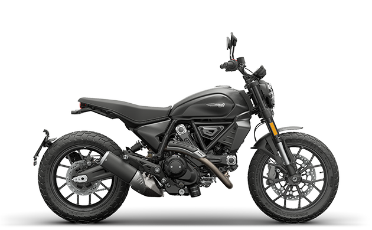

harley davidson
Harley-Davidson Article Talk Read Edit View history Tools Appearance hide Text Small Standard Large Width Standard Wide Color (beta) Automatic Light Dark Coordinates: 43°02′46″N 87°57′36″W Checked Page protected with pending changes From Wikipedia, the free encyclopedia "Harley Davidson" redirects here. For the speed skater, see Harley Davidson (skater). Harley-Davidson, Inc. Harley-Davidson headquarters in Milwaukee Company type Public Traded as NYSE: HOG S&P 400 component ISIN US4128221086 Industry Automotive Founded 1903; 122 years ago Founder William S. Harley Arthur Davidson Walter Davidson William A. Davidson Headquarters Milwaukee, Wisconsin, U.S. 43°02′46″N 87°57′36″W Key people Artie Starrs (President and CEO)[1] Products Motorcycles Production output Decrease 162,771 units (2023) Revenue Increase US$5.84 billion (2023) Operating income Decrease US$779 million (2023) Net income Decrease US$695 million (2023) Total assets Increase US$12.1 billion (2023) Total equity Increase US$3.25 billion (2023) Number of employees c. 6,400 (2023) Subsidiaries Harley-Davidson EMEA Harley-Davidson Brazil Harley-Davidson India Harley-Davidson Asia Website www.harley-davidson.com Footnotes / references [2] Harley-Davidson, Inc. (H-D, or simply Harley) is an American motorcycle manufacturer headquartered in Milwaukee, Wisconsin. Founded in 1903, it is one of two major American motorcycle manufacturers to survive the Great Depression along with its historical rival, Indian Motorcycles.[3] The company has survived numerous ownership arrangements, subsidiary arrangements, periods of poor economic health and product quality, and intense global competition[4] to become an iconic brand widely known for its loyal following. There are owner clubs and events worldwide, as well as a company-sponsored, brand-focused museum. Harley-Davidson is noted for a style of customization that gave rise to the chopper motorcycle style.[5] The company traditionally marketed heavyweight, air-cooled cruiser motorcycles with engine displacements greater than 700 cc, but it has broadened its offerings to include more contemporary VRSC (2002) and middle-weight Street (2014) platforms. Harley-Davidson manufactures its motorcycles at factories in[6] York, Pennsylvania; Menomonee Falls, Wisconsin; Tomahawk, Wisconsin; Manaus, Brazil; and Rayong, Thailand.[7] The company markets its products worldwide, and also licenses and markets merchandise under the Harley-Davidson brand, among them apparel, home décor and ornaments, accessories, toys, scale models of its motorcycles, and video games based on its motorcycle line and the community. History From left: William A. Davidson, Walter Davidson Sr., Arthur Davidson and William S. Harley In 1901, 20-year-old William S. Harley drew up plans for a small engine with a displacement of 7.07 cubic inches (116 cc) and four-inch (102 mm) flywheels[8][9] designed for use in a regular pedal-bicycle frame. Over the next two years, he and his childhood friend Arthur Davidson worked on their motor-bicycle using the northside Milwaukee machine shop at the home of their friend Henry Melk. It was finished in 1903 with the help of Arthur's brother Walter Davidson. Upon testing their power-cycle, Harley and the Davidson brothers found it unable to climb the hills around Milwaukee without pedal assistance, and they wrote off their first motor-bicycle as a valuable learning experiment.[10] The three began work on a new and improved machine with an engine of 24.74 cubic inches (405 cc) with 9.75 in (24.8 cm) flywheels weighing 28 lb (13 kg). Its advanced loop-frame pattern was similar to the 1903 Milwaukee Merkel motorcycle designed by Joseph Merkel, later of Flying Merkel fame. The bigger engine and loop-frame design took it out of the motorized bicycle category and marked the path to future motorcycle designs. They also received help with their bigger engine from outboard motor pioneer Ole Evinrude, who was then building gas engines of his own design for automotive use on Milwaukee's Lake Street. Prototype The prototype of the new loop-frame Harley-Davidson was assembled in a 10 ft × 15 ft (3.0 m × 4.6 m) shed in the Davidson family backyard.[11][12] Most of the major parts, however, were made elsewhere, including some probably fabricated at the West Milwaukee railshops where oldest brother William A. Davidson was toolroom foreman. This prototype machine was functional by September 8, 1904, when it competed in a Milwaukee motorcycle race held at State Fair Park. Edward Hildebrand rode it and placed fourth in the race.[11] In January 1905, the company placed small advertisements in the Automobile and Cycle Trade Journal offering bare Harley-Davidson engines to the do-it-yourself trade. By April, they were producing complete motorcycles on a very limited basis. That year, Harley-Davidson dealer Carl H. Lang of Chicago sold three bikes from the five built in the Davidson backyard shed. Years later, the company moved the original shed to the Juneau Avenue factory where it stood for many decades as a tribute. In 1906, Harley and the Davidson brothers built their first factory on Chestnut Street (later Juneau Avenue),[13] at the current location of Harley-Davidson's corporate headquarters.[14] The first Juneau Avenue plant was a 40 ft × 60 ft (12 m × 18 m) single-story wooden structure. The company produced about 50 motorcycles that year. 1907 model Harley-Davidson 1,000 cc HT 1916 In 1907, William S. Harley graduated from the University of Wisconsin–Madison with a degree in mechanical engineering. That year, they expanded the factory with a second floor and later with facings and additions of Milwaukee pale yellow ("cream") brick. With the new facilities, production increased to 150 motorcycles in 1907. The company was officially incorporated that September. They also began selling their motorcycles to police departments around this time, a market that has been important to them ever since.[15] In 1907, William A. Davidson quit his job as tool foreman for the Milwaukee Road railroad and joined the Motor Company. Production in 1905 and 1906 were all single-cylinder models with 26.84-cubic-inch (440 cc) engines. In February 1907, they displayed a prototype model at the Chicago Automobile Show with a 45-degree V-Twin engine. Very few V-Twin models were built between 1907 and 1910. These first V-Twins displaced 53.68 cubic inches (880 cc) and produced about 7 horsepower (5.2 kW). This gave about double the power of the first singles, and top speed was about 60 mph (100 km/h). Production jumped from 450 motorcycles in 1908 to 1,149 machines in 1909.[16] Harley-Davidson works in 1911 In 1911, the company introduced an improved V-Twin model with a displacement of 49.48 cubic inches (811 cc) and mechanically operated intake valves, as opposed to the "automatic" intake valves used on earlier V-Twins that opened by engine vacuum. It was smaller than earlier twins but gave better performance. After 1913, the majority of bikes produced by Harley-Davidson were V-Twin models. In 1912, Harley-Davidson introduced their patented "Ful-Floteing Seat", which was suspended by a coil spring inside the seat tube.[17] The spring tension could be adjusted to suit the rider's weight, and more than 3 inches (76 mm) of travel was available.[18] Harley-Davidson used seats of this type until 1958.[19] 1911 Harley-Davidson "Silent Gray Fellow," on display at the Harley-Davidson Museum, Milwaukee, Wisconsin. The motorcycle featured many encased moving parts and was quiet for its day. 1913 Harley Davidson Model 9-B on display at the Barber Vintage Motorsports Museum, Birmingham, Alabama. The single-cylinder motorcycle had a displacement of 560cc, weighed 275 pounds, and had a top speed of 55 mph. 1919 Harley-Davidson military model made for the U.S. Army, on display at the Harley-Davidson Museum, Milwaukee, Wisconsin. By 1913, the yellow brick factory had been demolished and a new five-story structure had been built on the site which took up two blocks along Juneau Avenue and around the corner on 38th Street. Despite the competition, Harley-Davidson was already pulling ahead of Indian and dominated motorcycle racing after 1914. Production that year swelled to 16,284 machines. Ralph Hepburn on his Harley racing bike in 1919 World War I In 1917, the United States entered World War I and the military demanded motorcycles for the war effort.[20] Harleys had already been used by the military in the Pancho Villa Expedition[21][22] but World War I was the first time that it was adopted for military issue, first with the British Model H produced by Triumph Engineering Co Ltd in 1915.[23] The U.S. military purchased over 20,000 motorcycles from Harley-Davidson.[24] Harley-Davidson launched a line of bicycles in 1917 in hopes of recruiting more domestic customers for its motorcycles. Models included the traditional diamond frame men's bicycle, a step-through frame 3–18 "Ladies Standard", and a 5–17 "Boy Scout" for youth. The effort was discontinued in 1923 because of disappointing sales.[25] The bicycles were built for Harley-Davidson in Dayton, Ohio by the Davis Machine Company from 1917 to 1921, when Davis stopped manufacturing bicycles.[26] 1920s Harley-Davidson 1000 cc HT 1923 By 1920 Harley-Davidson was the largest motorcycle manufacturer in the world, with 28,189 machines produced and dealers in 67 countries.[27] In 1921, Otto Walker set a record on a Harley-Davidson as the first motorcycle to win a race at an average speed greater than 100 mph (160 km/h).[28][29] Harley-Davidson put several improvements in place during the 1920s, such as a new 74 cubic inch (1,212.6 cc) V-Twin introduced in 1921, and the "teardrop" gas tank in 1925. They added a front brake in 1928, although only on the J/JD models.[30] In the late summer of 1929, Harley-Davidson introduced its 45-cubic-inch (737 cc) flathead V-Twin to compete with the Indian 101 Scout and the Excelsior Super X.[31] This was the "D" model produced from 1929 to 1931.[32] Riders of Indian motorcycles derisively referred to it as the "three cylinder Harley" because the generator was upright and parallel to the front cylinder.[33] In 1929, Vivian Bales drove a record 5,000 miles across the United States and Canada on a D-model.[34] Great Depression Harley-Davidson 1,200 cc SV 1931 The Great Depression began a few months after the introduction of their 45 cu in (740 cm3) model. Harley-Davidson's sales fell from 21,000 in 1929 to 3,703 in 1933. Despite this, Harley-Davidson unveiled a new lineup for 1934, which included a flathead engine and Art Deco styling.[35] In order to survive the remainder of the Depression, the company manufactured industrial powerplants based on their motorcycle engines. They also designed and built a three-wheeled delivery vehicle called the Servi-Car, which remained in production until 1973.[31] Harley-Davidson UL Alfred Rich Child opened a production line in Japan in the mid-1930s with the 74 cu in (1,210 cm3) VL. The Japanese license-holder, Sankyo Seiyaku Corporation, severed its business relations with Harley-Davidson in 1936 and continued manufacturing the VL under the Rikuo name.[36] Harley-Davidson dealer in Texas, ca. 1930–1945 An 80 cubic inches (1,300 cm3) flathead engine was added to the line in 1935, by which time the single-cylinder motorcycles had been discontinued.[37] In 1936, the 61E and 61EL models with the "Knucklehead" OHV engines were introduced.[38] Valvetrain problems in early Knucklehead engines required a redesign halfway through its first year of production and retrofitting of the new valvetrain on earlier engines.[39] By 1937, all Harley-Davidson flathead engines were equipped with dry-sump oil recirculation systems similar to the one introduced in the "Knucklehead" OHV engine. The revised 74 cubic inches (1,210 cm3) V and VL models were renamed U and UL, the 80 cu in (1,300 cm3) VH and VLH to be renamed UH and ULH, and the 45 cu in (740 cm3) R to be renamed W.[38] In 1941, the 74-cubic-inch "Knucklehead" was introduced as the F and the FL. The 80 cu in (1,300 cm3) flathead UH and ULH models were discontinued after 1941, while the 74-cubic-inchU & UL flathead models were produced up to 1948.[38] World War II Harley copied the BMW R71 to produce its XA model. One of only two American motorcycle manufacturers to survive the Great Depression (the other being the Indian Motorcycle Manufacturing Company),[40][41] Harley-Davidson again produced large numbers of motorcycles for the US Army in World War II and resumed civilian production afterwards, producing a range of large V-twin motorcycles that were successful both on racetracks and for private buyers. Harley-Davidson, on the eve of World War II, was already supplying the Army with a military-specific version of its 45 cubic inches (740 cm3) WL line, called the WLA. The A in this case stood for "Army". Upon the outbreak of war, the company, along with most other manufacturing enterprises, shifted to war work. Some 90,000 military motorcycles, mostly WLAs and WLCs (the Canadian version) were produced, many to be provided to allies.[42] Harley-Davidson received two Army-Navy "E" Awards, one in 1943 and the other in 1945, which were awarded for Excellence in Production. Harley-Davidson produced the WLC for the Canadian military. Shipments to the Soviet Union under the Lend-Lease program numbered at least 30,000.[43] The WLAs produced during all four years of war production generally have 1942 serial numbers. Production of the WLA stopped at the end of World War II, but was resumed from 1949 to 1952 for use in the Korean War. The U.S. Army also asked Harley-Davidson to produce a new motorcycle with many of the features of BMW's side-valve and shaft-driven R71. Harley-Davidson largely copied the BMW engine and drive train and produced the shaft-driven 750 cc 1942 and '43 Harley-Davidson XA. This shared no dimensions, no parts or no design concepts (except side valves) with any prior Harley-Davidson engine. Due to the superior cooling of the flat-twin engine with the cylinders across the frame, Harley's XA cylinder heads ran 100 °F (56 °C) cooler than its V-twins.[44] The XA never entered full production: the motorcycle by that time had been eclipsed by the Jeep as the Army's general-purpose vehicle, and the WLA – already in production – was sufficient for its limited police, escort, and courier roles. Only ~1,000 were made and the XA never went into full production. Small: Hummer, Sportcycle and Aermacchi Harley-Davidson Hummer Sportcycle, 1966 "Young America" advertising campaign[45] See also: Harley-Davidson Hummer and Harley-Davidson Topper As part of war reparations, Harley-Davidson acquired the design of a small German motorcycle, the DKW RT 125, which they adapted, manufactured, and sold from 1948 to 1966.[46] Various models were made, including the Hummer from 1955 to 1959, but they are all colloquially referred to as "Hummers" at present.[47] BSA in the United Kingdom took the same design as the foundation of their BSA Bantam.[48] 1971 Aermacchi Harley-Davidson Turismo Veloce In 1960, Harley-Davidson consolidated the Model 165 and Hummer lines into the Super-10, introduced the Topper scooter,[49] and bought fifty percent of Aermacchi's motorcycle division.[49][50] Importation of Aermacchi's 250 cc horizontal single began the following year.[50][51][52] The bike bore Harley-Davidson badges and was marketed as the Harley-Davidson Sprint.[51][52] The engine of the Sprint was increased to 350 cc in 1969[50][53] and would remain that size until 1974, when the four-stroke Sprint was discontinued.[53] After the Pacer and Scat models were discontinued at the end of 1965, the Bobcat became the last of Harley-Davidson's American-made two-stroke motorcycles. The Bobcat was manufactured only in the 1966 model year.[54] Harley-Davidson replaced their American-made lightweight two-stroke motorcycles with the Italian Aermacchi-built two-stroke powered M-65, M-65S, and Rapido. The M-65 had a semi-step-through frame and tank. The M-65S was a M-65 with a larger tank that eliminated the step-through feature. The Rapido was a larger bike with a 125 cc engine.[55] The Aermacchi-built Harley-Davidsons became entirely two-stroke powered when the 250 cc two-stroke SS-250 replaced the four-stroke 350 cc Sprint in 1974.[56] Harley-Davidson purchased full control of Aermacchi's motorcycle production in 1974 and continued making two-stroke motorcycles there until 1978, when they sold the facility to Cagiva, owned by the Castiglioni family.[49] Tarnished reputation Replica of the "Captain America bike" from the film Easy Rider In 1952, following their application to the U.S. Tariff Commission for a 40 percent tax on imported motorcycles, Harley-Davidson was charged with restrictive practices.[57] AMF H-D Electra Glide In 1969, American Machine and Foundry (AMF) bought the company,[58][59] streamlined production, and slashed the workforce. This tactic resulted in a labor strike and cost-cutting produced lower-quality bikes.[4] Simultaneously, the Japanese "big four" manufacturers (Honda, Kawasaki, Suzuki, and Yamaha)[60] revolutionized the North American market by introducing what the motoring press would call the Universal Japanese Motorcycle.[61] In comparison, Harley-Davidson's bikes were expensive and inferior in performance, handling, and quality. Sales and quality declined, and the company almost went bankrupt.[4] The "Harley-Davidson" name was mocked as "Hardly Ableson", "Hardly Driveable", and "Hogly Ferguson",[62] and the nickname "Hog" became pejorative.[63] In 1977, following the successful manufacture of the Liberty Edition to commemorate America's bicentennial in 1976,[64] Harley-Davidson produced what has become one of its most controversial models, the Harley-Davidson Confederate Edition. The bike was essentially a stock Harley-Davidson with Confederate-specific paint and details.[65] Restructuring and revival In 1981, AMF sold the company to a group of 13 investors led by Vaughn Beals and Willie G. Davidson for $80 million.[66] The new management team improved product quality, introduced new technologies, and adopted just-in-time inventory management.[67] These operational and product improvements were matched with a strategy of seeking tariff protection for large-displacement motorcycles in the face of intense competition with Japanese manufacturers. These protections were granted by the Reagan administration in 1983, giving Harley-Davidson time to implement their new strategies.[68][69] A modern Harley-Davidson dealer in Chattanooga, Tennessee Revising stagnated product designs was a crucial centerpiece of Harley-Davidson's turnaround strategy. Rather than trying to mimic popular Japanese designs, the new management deliberately exploited the "retro" appeal of Harley motorcycles, building machines that deliberately adopted the look and feel of their earlier bikes and the subsequent customizations of owners of that era. Many components such as brakes, forks, shocks, carburetors, electrics and wheels were outsourced from foreign manufacturers and quality increased, technical improvements were made, and buyers slowly returned. Harley-Davidson bought the "Sub Shock" cantilever-swingarm rear suspension design from Missouri engineer Bill Davis and developed it into its Softail series of motorcycles, introduced in 1984 with the FXST Softail.[70] In response to possible motorcycle market loss due to the aging of baby-boomers, Harley-Davidson bought luxury motorhome manufacturer Holiday Rambler in 1986.[71] In 1996, the company sold Holiday Rambler to the Monaco Coach Corporation.[72] The "Sturgis" model, boasting a dual belt-drive, was introduced initially in 1980 and was made for three years. This bike was then brought back as a commemorative model in 1991. Fat Boy, Dyna, and Harley-Davidson museum Main articles: Harley-Davidson Fat Boy and Harley-Davidson Museum By 1990, with the introduction of the "Fat Boy", Harley-Davidson once again became the sales leader in the heavyweight (over 750 cc) market.[73] At the time of the Fat Boy model introduction, a false etymology spread that "Fat Boy" was a combination of the names of the atomic bombs Fat Man and Little Boy.[74] This has been debunked, as the name "Fat Boy" actually comes from the observation that the motorcycle is somewhat wider than other bikes when viewed head-on.[75][76][77] 1993 and 1994 saw the replacement of FXR models with the Dyna (FXD), which became the sole rubber mount FX Big Twin frame in 1994. The FXR was revived briefly from 1999 to 2000 for special limited editions (FXR2, FXR3 & FXR4).[78] Harley-Davidson celebrated their 100th anniversary on September 1, 2003 with a large event and concert featuring performances from Elton John, The Doobie Brothers, Kid Rock, and Tim McGraw.[79] Construction started on the $75 million, 130,000 square-foot (12,000 m2) Harley-Davidson Museum in the Menomonee Valley of Milwaukee, Wisconsin on June 1, 2006. It opened in 2008 and houses the company's vast collection of historic motorcycles and corporate archives, along with a restaurant, café and meeting space.[80] Overseas operations Established in 1918, the oldest continuously operating Harley-Davidson dealership outside of the United States is in Australia.[14] Sales in Japan started in 1912[14] then in 1929, Harley-Davidsons were produced in Japan under license to the company Rikuo (Rikuo Internal Combustion Company)[81] under the name of Harley-Davidson and using the company's tooling, and later under the name Rikuo. Production continued until 1958.[82][83] In 1998, the first Harley-Davidson factory outside the US opened in Manaus, Brazil, taking advantage of the free economic zone there. The location was positioned to sell motorcycles in the southern hemisphere market.[84][85] In August 2009, Harley-Davidson launched Harley-Davidson India and started selling motorcycles there in 2010. The company established the subsidiary in Gurgaon, near Delhi, in 2011 and created an Indian dealer network.[86][87] On September 24, 2020, Harley Davidson announced that it would discontinue its sales and manufacturing operations in India due to weak demand and sales. The move involves $75 million in restructuring costs, 70 layoffs and the closure of its Bawal plant in northern India.[88] Buell Motorcycle Company Main article: Buell Motorcycle Company Buell Lightning XB9SX Harley-Davidson's association with sportbike manufacturer Buell Motorcycle Company began in 1987 when they supplied Buell with fifty surplus XR1000 engines. Buell continued to buy engines from Harley-Davidson until 1993, when Harley-Davidson bought 49 percent of the Buell Motorcycle Company.[89] Harley-Davidson increased its share in Buell to ninety-eight percent in 1998, and to complete ownership in 2003.[90] In an attempt to attract newcomers to motorcycling in general and to Harley-Davidson in particular, Buell developed a low-cost, low-maintenance motorcycle. The resulting single-cylinder Buell Blast was introduced in 2000,[91] and was made through 2009, which, according to Buell, was to be the final year of production.[92] The Buell Blast was the training vehicle for the Harley-Davidson Rider's Edge New Rider Course from 2000 until May 2014, when the company re-branded the training academy and started using the Harley-Davidson Street 500 motorcycles. In those 14 years, more than 350,000 participants in the course learned to ride on the Buell Blast.[93] On October 15, 2009, Harley-Davidson Inc. issued an official statement that it would be discontinuing the Buell line and ceasing production immediately, in order to focus on the Harley-Davidson brand.[94] The company refused to consider selling Buell.[95] Founder Erik Buell subsequently established Erik Buell Racing and continued to manufacture and develop the company's 1125RR racing motorcycle.[96] Claims of stock price manipulation Harley-Davidson, Inc. (NYSE:HOG) stock price (source: ZenoBank.com) During its period of peak demand, during the late 1990s and early first decade of the 21st century, Harley-Davidson embarked on a program of expanding the number of dealerships throughout the country[which?]. At the same time, its current dealers typically had waiting lists that extended up to a year for some of the most popular models. Harley-Davidson, like the auto manufacturers, records a sale not when a consumer buys their product, but rather when it is delivered to a dealer. Therefore, it is possible for the manufacturer to inflate sales numbers by requiring dealers to accept more inventory than desired in a practice called channel stuffing. When demand softened following the unique[why?] 2003 model year, this news led to a dramatic decline in the stock price. In April 2004 alone, the price of HOG shares dropped from more than $60 to less than $40. Immediately prior to this decline, retiring CEO Jeffrey Bleustein profited $42 million on the exercise of employee stock options.[97] Harley-Davidson was named as a defendant in numerous class action suits filed by investors who claimed they were intentionally defrauded by Harley-Davidson's management and directors.[98] By January 2007, the price of Harley-Davidson shares reached $70. Problems with Police Touring models Starting around 2000, several police departments started reporting problems with high-speed instability on the Harley-Davidson Touring motorcycles.[99] A Raleigh, North Carolina police officer, Charles Paul, was killed when his 2002 police touring motorcycle crashed after reportedly experiencing a high-speed wobble.[100] The California Highway Patrol conducted testing of the Police Touring motorcycles in 2006. The CHP test riders reported experiencing wobble or weave instability while operating the motorcycles on the test track.[101] 2007 strike On February 2, 2007, upon the expiration of their union contract, about 2,700 employees at Harley-Davidson Inc.'s largest manufacturing plant in York, Pennsylvania, went on strike after failing to agree on wages and health benefits.[102][103] During the pendency of the strike, the company refused to pay for any portion of the striking employees' health care.[104] The day before the strike, after the union voted against the proposed contract and to authorize the strike, the company shut down all production at the plant. The York facility employs more than 3,200 workers, both union and non-union.[105] Harley-Davidson announced on February 16, 2007, that it had reached a labor agreement with union workers at its largest manufacturing plant, a breakthrough in the two-week-old strike.[106] The strike disrupted Harley-Davidson's national production and was felt in Wisconsin, where 440 employees were laid off, and many Harley suppliers also laid off workers because of the strike.[107] MV Agusta Group On July 11, 2008, Harley-Davidson announced they had signed a definitive agreement to acquire the MV Agusta Group for US$109 million (€70M). MV Agusta Group contains two lines of motorcycles: the high-performance MV Agusta brand and the lightweight Cagiva brand.[108][109] The acquisition was completed on August 8.[110][111] On October 15, 2009, Harley-Davidson announced that it would divest its interest in MV Agusta.[94] Harley-Davidson Inc. sold Italian motorcycle maker MV Agusta to Claudio Castiglioni – a member of the family that had purchased Aermacchi from H-D in 1978 – for a reported 3 euros, ending the transaction in the first week of August 2010. Castiglioni was MV Agusta's former owner, and had been MV Agusta's chairman since Harley-Davidson bought it in 2008. As part of the deal, Harley-Davidson put $26M into MV Agusta's accounts, essentially giving Castiglioni $26M to take the brand.[112][113] 2008 financial crisis The 2008 financial crisis and 2008–2010 automotive industry crisis affected also the motorcycle industry. According to Interbrand, the value of the Harley-Davidson brand fell by 43 percent to $4.34 billion in 2009. The fall in value is believed to be connected to the 66 percent drop in the company profits in two-quarters of the previous year.[114] On April 29, 2010, Harley-Davidson stated that they must cut $54 million in manufacturing costs from its production facilities in Wisconsin, and that they would explore alternative U.S. sites to accomplish this. The announcement came in the wake of a massive company-wide restructuring, which began in early 2009 and involved the closing of two factories, one distribution center, and the planned elimination of nearly 25 percent of its total workforce (around 3,500 employees). The company announced on September 14, 2010, that it would remain in Wisconsin.[115] Motorcycle engines 1,450 cubic centimetres (88 cu in) V-twin Main article: Harley-Davidson engine timeline The classic Harley-Davidson engines are V-twin engines, with a 45° angle between the cylinders. The crankshaft has a single pin, and both pistons are connected to this pin through their connecting rods.[5] This 45° angle is covered under several United States patents and is an engineering tradeoff that allows a large, high-torque engine in a relatively small space. It causes the cylinders to fire at uneven intervals and produces the choppy "potato-potato" sound so strongly linked to the Harley-Davidson brand. To simplify the engine and reduce costs, the V-twin ignition was designed to operate with a single set of points and no distributor. This is known as a dual fire ignition system, causing both spark plugs to fire regardless of which cylinder was on its compression stroke, with the other spark plug firing on its cylinder's exhaust stroke, effectively "wasting a spark". The exhaust note is basically a throaty growling sound with some popping. The 45° design of the engine thus creates a plug firing sequencing as such: The first cylinder fires, the second (rear) cylinder fires 315° later, then there is a 405° gap until the first cylinder fires again, giving the engine its unique sound.[116] Harley-Davidson has used various ignition systems, including the early points and condenser system on Big Twins and Sportsters up to 1978, a magneto ignition system used on some 1958 to 1969 Sportsters, an early electronic with centrifugal mechanical advance weights on all models from mid-1978 until 1979, and a later electronic with a transistorized ignition control module (more familiarly known as a black box or a brain) on all models 1980 to present. Starting in 1995, the company introduced Electronic Fuel Injection (EFI) as an option for the 30th anniversary edition Electra Glide.[117] EFI became standard on all Harley-Davidson motorcycles, including Sportsters, upon the introduction of the 2007 product line.[118] In 1991, Harley-Davidson began to participate in the Sound Quality Working Group, founded by Orfield Labs, Bruel and Kjaer, TEAC, Yamaha, Sennheiser, SMS and Cortex. This was the nation's first group to share research on psychological acoustics. Later that year, Harley-Davidson participated in a series of sound quality studies at Orfield Labs, based on recordings taken at the Talladega Superspeedway, with the objective to lower the sound level for EU standards while analytically capturing the "Harley Sound".[119][120] This research resulted in the bikes that were introduced in compliance with EU standards for 1998. On February 1, 1994, the company filed a sound trademark application for the distinctive sound of the Harley-Davidson motorcycle engine: "The mark consists of the exhaust sound of applicant's motorcycles, produced by V-twin, common crankpin motorcycle engines when the goods are in use". Nine of Harley-Davidson's competitors filed comments opposing the application, arguing that cruiser-style motorcycles of various brands use a single-crankpin V-twin engine which produce a similar sound.[121] These objections were followed by litigation. In June 2000, the company dropped efforts to register a sound trademark.[122][123] Big V-twins F-head, also known as JD, pocket valve and IOE (intake over exhaust), 1914–1929 (1,000 cc), and 1922–1929 (1,200 cc) Flathead, 1930–1949 (1,200 cc) and 1935–1941 (1,300 cc). Knucklehead, 1936–1947 61 cubic inch (1,000 cc), and 1941–1947 74 cubic inch (1,200 cc) Panhead, 1948–1965 61 cubic inch (1,000 cc), and 1948–1965, 74 cubic inch (1,200 cc) Shovelhead, 1966–1984, 74 cubic inch (1,200 cc) and 80 cubic inch (1,338 cc) since late 1978 Evolution (a.k.a. "Evo" and "Blockhead"), 1984–1999, 82 cubic inch (1,340 cc) Twin Cam (a.k.a. "Fathead" as named by American Iron Magazine) 1999–2017, in the following versions: Twin Cam 88, 1999–2006, 88 cubic inch (1,450 cc) Twin Cam 88B, counterbalanced version of the Twin Cam 88, 2000–2006, 88 cubic inch (1,450 cc) Twin Cam 95, since 2000, 95 cubic inch (1,550 cc) (engines for early C.V.O. models) Twin Cam 96, since 2007. Twin Cam 103, 2003–2006, 2009, 103 cubic inch (1,690 cc) (engines for C.V.O. models), Standard on 2011 Touring models: Ultra Limited, Road King Classic and Road Glide Ultra and optional on the Road Glide Custom and Street Glide. Standard on most 2012 models excluding Sportsters and 2 Dynas (Street Bob and Super Glide Custom). Standard on all 2014 dyna models. Twin Cam 110, 2007–2017, 110 cubic inch (1,800 cc) (engines for C.V.O. models, 2016 Soft Tail Slim S; FatBoy S, Low Rider S, and Pro-Street Breakout) Milwaukee-Eight Standard 107 cu in (1,746 cc): Standard on touring model year 2017+ and Softail models 2018+.[124] Twin-cooled 107 cu in (1,746 cc): Optional on some touring and trike model year 2017+.[125] Twin-cooled 114 cu in (1,868 cc): Optional on touring and trike model year 2017+, standard on 2017 CVO models.[125] Twin-cooled 117 cu in (1,923 cc): Standard on 2018 CVO models[126] Small V-twins Evolution Sportster D Model, 1929–1931, 750 cc R Model, 1932–1936, 750 cc Flathead 750 cc 1937–1952 W Model solo 2 wheel 1932–1973 G Model Servi-Car three-wheeler K Model, 1952–1953, 750 cc KH Model, 1954–1956, 900 cc Ironhead, 1957–1971, 883 cc; 1972–1985, 1,000 cc Evolution, since 1986, 883 cc, 1,100 cc and 1,200 cc Revolution engine Revolution engine in V-Rod The Revolution engine is based on the VR-1000 Superbike race program, developed by Harley-Davidson's Powertrain Engineering with Porsche helping to make the engine suitable for street use. It is a liquid cooled, dual overhead cam, internally counterbalanced 60 degree V-twin engine with a displacement of 69 cubic inch (1,130 cc), producing 115 hp (86 kW) at 8,250 rpm at the crank, with a redline of 9,000 rpm.[127][128] It was introduced for the new VRSC (V-Rod) line in 2001 for the 2002 model year, starting with the single VRSCA (V-Twin Racing Street Custom) model.[129][130] The Revolution marks Harley's first collaboration with Porsche since the V4 Nova project, which, like the V-Rod, was a radical departure from Harley's traditional lineup until it was cancelled by AMF in 1981 in favor of the Evolution engine.[131] A 1,250 cc Screamin' Eagle version of the Revolution engine was made available for 2005 and 2006, and was present thereafter in a single production model from 2005 to 2007. In 2008, the 1,250 cc Revolution Engine became standard for the entire VRSC line. Harley-Davidson claims 123 hp (92 kW) at the crank for the 2008 VRSCAW model. The VRXSE Destroyer dragbike is equipped with a stroker (75 mm crank) Screamin' Eagle 79 cubic inch (1,300 cc) Revolution Engine, producing 97 pound-feet (132 N⋅m),[132] and more than 165 hp (123 kW). 750 cc and 500 cc versions of the Revolution engine are used in Harley-Davidson's Street line of light cruisers.[40] These motors, named the Revolution X, use a single overhead cam, screw and locknut valve adjustment, a single internal counterbalancer, and vertically split crankcases; all of these changes making it different from the original Revolution design.[133] Düsseldorf-Test An extreme endurance test of the Revolution engine was performed in a dynamometer installation at the Harley-Davidson factory in Milwaukee, simulating the German Autobahn (highways without general speed limit) between the Porsche research and development center in Weissach, near Stuttgart to Düsseldorf. An undisclosed number of samples of engines failed, until an engine successfully passed the 500-hour nonstop run. This was the benchmark for the engineers to approve the start of production for the Revolution engine, which was documented in the Discovery channel special Harley-Davidson: Birth of the V-Rod, October 14, 2001.[134] Single-cylinder engines 1928 Harley-Davidson single-cylinder motorcycle IOE singles The first Harley-Davidson motorcycles were powered by single-cylinder IOE engines with the inlet valve operated by engine vacuum, based on the DeDion-Bouton pattern.[135] Singles of this type continued to be made until 1913, when a pushrod and rocker system was used to operate the overhead inlet valve on the single, a similar system having been used on their V-twins since 1911.[136] Single-cylinder motorcycle engines were discontinued in 1918.[137] Flathead and OHV singles Single-cylinder engines were reintroduced in 1925 as 1926 models.[138] These singles were available either as flathead engines or as overhead valve engines[139] until 1930, after which they were only available as flatheads.[138] The flathead single-cylinder motorcycles were designated Model A for engines with magneto systems only and Model B for engines with battery and coil systems, while overhead valve versions were designated Model AA and Model BA respectively, and a magneto-only racing version was designated Model S.[139] This line of single-cylinder motorcycles ended production in 1934.[138] Two-stroke singles See also: Harley-Davidson Hummer Model families Modern Harley-branded motorcycles fall into one of seven model families: Touring, Softail, Dyna, Sportster, Vrod, Street and LiveWire. These model families are distinguished by the frame, engine, suspension, and other characteristics. Touring See also: Harley-Davidson FL Harley-Davidson Road King Hamburg Police Electra Glide Touring models use Big-Twin engines and large-diameter telescopic forks. All Touring designations begin with the letters FL, e.g., FLHR (Road King) and FLTR (Road Glide). The touring family, also known as "dressers" or "baggers", includes Road King, Road Glide, Electra Glide and Street Glide models offered in various trims. The Road Kings have a "retro cruiser" appearance and are equipped with a large clear windshield. Road Kings are reminiscent of big-twin models from the 1940s and 1950s. Electra Glides can be identified by their full front fairings. Most Electra Glides sport a fork-mounted fairing referred to as the "Batwing" due to its unmistakable shape. The Road Glide and Road Glide Ultra Classic have a frame-mounted fairing, referred to as the "Sharknose". The Sharknose includes a unique, dual front headlight. Touring models are distinguishable by their large saddlebags, rear coil-over air suspension and are the only models to offer full fairings with radios and CBs. All touring models use the same frame, first introduced with a Shovelhead motor in 1980, and carried forward with only modest upgrades until 2009, when it was extensively redesigned. The frame is distinguished by the location of the steering head in front of the forks and was the first H-D frame to rubber mount the drivetrain to isolate the rider from the vibration of the big V-twin. Electra Glide "Ultra Classic" The frame was modified for the 1993 model year when the oil tank went under the transmission and the battery was moved inboard from under the right saddlebag to under the seat. In 1997, the frame was again modified to allow for a larger battery under the seat and to lower seat height. In 2007, Harley-Davidson introduced the 96 cubic inches (1,570 cubic centimetres)[140] Twin Cam 96 engine, as well the six-speed transmission to give the rider better speeds on the highway. In 2006, Harley introduced the FLHX Street Glide, a bike designed by Willie G. Davidson to be his personal ride, to its touring line.[141] In 2008, Harley added anti-lock braking systems and cruise control as a factory installed option on all touring models (standard on CVO and Anniversary models).[142] Also new for 2008 is the 6-US-gallon (23 L; 5.0 imp gal) fuel tank for all touring models. 2008 also brought throttle-by-wire to all touring models. For the 2009 model year, Harley-Davidson redesigned the entire touring range with several changes, including a new frame, new swingarm, a completely revised engine-mounting system, 17-inch (430 mm) front wheels for all but the FLHRC Road King Classic, and a 2–1–2 exhaust. The changes result in greater load carrying capacity, better handling, a smoother engine, longer range and less exhaust heat transmitted to the rider and passenger.[143][144] Also released for the 2009 model year is the FLHTCUTG Tri-Glide Ultra Classic, the first three-wheeled Harley since the Servi-Car was discontinued in 1973. The model features a unique frame and a 103-cubic-inch (1,690 cc) engine exclusive to the trike.[145] In 2014, Harley-Davidson released a redesign for specific touring bikes and called it "Project Rushmore".[146] Changes include a new 103CI High Output engine, one handed easy open saddlebags and compartments, a new Boom! Box Infotainment system with either 4.3-inch (10 cm) or 6.5-inch (16.5 cm) screens featuring touchscreen functionality [6.5-inch (16.5 cm) models only], Bluetooth (media and phone with approved compatible devices), available GPS and SiriusXM, Text-to-Speech functionality (with approved compatible devices) and USB connectivity with charging. Other features include ABS with Reflex linked brakes, improved styling, Halogen or LED lighting and upgraded passenger comfort. Softail Main article: Softail 2002 Softail Heritage Classic These big-twin motorcycles capitalize on Harley's strong value on tradition. With the rear-wheel suspension hidden under the transmission, they are visually similar to the "hardtail" choppers popular in the 1960s and 1970s, as well as from their own earlier history. In keeping with that tradition, Harley offers Softail models with "Heritage" styling that incorporate design cues from throughout their history and used to offer "Springer" front ends on these Softail models from the factory. Designation Softail models utilize the big-twin engine (F) and the Softail chassis (ST). Softail models that use 21-inch (530 mm) Front Wheels have designations that begin with FX, e.g., FXSTB (Night Train), FXSTD (Deuce), and FXSTS (Springer). Softail models that use 16-inch (410 mm) Front Wheels have designations beginning with FL, e.g., FLSTF (Fat Boy), FLSTC (Heritage Softail Classic), FLSTN (Softail Deluxe) and FLS (Softail Slim). Softail models that use Springer forks with a 21-inch (530 mm) wheel have designations that begin with FXSTS, e.g., FXSTS (Springer Softail) and FXSTSB (Bad Boy). Softail models that use Springer forks with a 16-inch (410 mm) wheel have designations that begin with FLSTS, e.g., FLSTSC (Springer Classic) and FLSTSB (Cross Bones). Dyna Main article: Harley-Davidson Super Glide 2005 Dyna Super Glide Custom Dyna-frame motorcycles were developed in the 1980s and early 1990s and debuted in the 1991 model year with the FXDB Sturgis offered in limited edition quantities. In 1992 the line continued with the limited edition FXDB Daytona and a production model FXD Super Glide. The new DYNA frame featured big-twin engines and traditional styling. They can be distinguished from the Softail by the traditional coil-over suspension that connects the swingarm to the frame, and from the Sportster by their larger engines. On these models, the transmission also houses the engine's oil reservoir. Prior to 2006, Dyna models typically featured a narrow, XL-style 39mm front fork and front wheel, as well as footpegs which the manufacturer indicated with the letter "X" in the model designation. This lineup traditionally included the Super Glide (FXD), Super Glide Custom (FXDC), Street Bob (FXDB), and Low Rider (FXDL). One exception was the Wide Glide (FXDWG), which featured thicker 41mm forks and a narrow front wheel, but positioned the forks on wider triple-trees that give a beefier appearance. In 2008, the Dyna Fat Bob (FXDF) was introduced to the Dyna lineup, featuring aggressive styling like a new 2–1–2 exhaust, twin headlamps, a 180 mm rear tire, and, for the first time in the Dyna lineup, a 130 mm front tire. For the 2012 model year, the Dyna Switchback (FLD) became the first Dyna to break the tradition of having an FX model designation with floorboards, detachable painted hard saddlebags, touring windshield, headlight nacelle and a wide front tire with full fender. The new front end resembled the big-twin FL models from 1968 to 1971. The Dyna family used the 88-cubic-inch (1,440 cc) twin cam from 1999 to 2006. In 2007, the displacement was increased to 96 cubic inches (1,570 cc) as the factory increased the stroke to 4.375 inches (111.1 mm). For the 2012 model year, the manufacturer began to offer Dyna models with the 103-cubic-inch (1,690 cc) upgrade. All Dyna models use a rubber-mounted engine to isolate engine vibration. Harley discontinued the Dyna platform in 2017 for the 2018 model year, having been replaced by a completely redesigned Softail chassis; some of the existing models previously released by the company under the Dyna nameplate have since been carried over to the new Softail line.[147] Designation Dyna models utilize the big-twin engine (F), footpegs noted as (X) with the exception of the 2012 FLD Switchback, a Dyna model which used floorboards as featured on the Touring (L) models, and the Dyna chassis (D). Therefore, except for the FLD from 2012 to 2016, all Dyna models have designations that begin with FXD, e.g., FXDWG (Dyna Wide Glide) and FXDL (Dyna Low Rider). Sportster Main article: Harley-Davidson Sportster 2002 Sportster 883 Custom 2003 Harley-Davidson XL1200 Custom Anniversary Edition Introduced in 1957, the Sportster family were conceived as racing motorcycles, and were popular on dirt and flat-track race courses through the 1960s and 1970s. Smaller and lighter than the other Harley models, contemporary Sportsters make use of 883 cc or 1,200 cc Evolution engines and, though often modified, remain similar in appearance to their racing ancestors.[148] Up until the 2003 model year, the engine on the Sportster was rigidly mounted to the frame. The 2004 Sportster received a new frame accommodating a rubber-mounted engine. This made the bike heavier and reduced the available lean angle, while it reduced the amount of vibration transmitted to the frame and the rider, providing a smoother ride for rider and passenger.[149] In the 2007 model year, Harley-Davidson celebrated the 50th anniversary of the Sportster and produced a limited edition called the XL50, of which only 2000 were made for sale worldwide. Each motorcycle was individually numbered and came in one of two colors, Mirage Pearl Orange or Vivid Black. Also in 2007, electronic fuel injection was introduced to the Sportster family, and the Nightster model was introduced in mid-year. In 2009, Harley-Davidson added the Iron 883 to the Sportster line, as part of the Dark Custom series. In the 2008 model year, Harley-Davidson released the XR1200 Sportster in Europe, Africa, and the Middle East. The XR1200 had an Evolution engine tuned to produce 91 bhp (68 kW), four-piston dual front disc brakes, and an aluminum swing arm. Motorcyclist featured the XR1200 on the cover of its July 2008 issue and was generally positive about it in their "First Ride" story, in which Harley-Davidson was repeatedly asked to sell it in the United States.[150] One possible reason for the delayed availability in the United States was that Harley-Davidson had to obtain the "XR1200" naming rights from Storz Performance, a Harley customizing shop in Ventura, Calif.[151] The XR1200 was released in the United States in 2009 in a special color scheme including Mirage Orange highlighting its dirt-tracker heritage. The first 750 XR1200 models in 2009 were pre-ordered and came with a number 1 tag for the front of the bike, autographed by Kenny Coolbeth and Scott Parker and a thank you/welcome letter from the company, signed by Bill Davidson.[citation needed] The XR1200 was discontinued in model year 2013. In 2021, Harley-Davidson launched the Sportster S model, with a 121 hp engine and 228 kg ready-to-ride weight.[152] The Sportster S was one of the first Harleys to come with cornering-ABS and lean-sensitive traction control.[153] The Sportster S is also the first model under the Sportster nameplate since 1957 to receive a completely new engine. Designation Except for the street-going XR1000 of the 1980s and the XR1200, most Sportsters made for street use have the prefix XL in their model designation. For the Sportster Evolution engines used since the mid-1980s, there have been two engine sizes. Motorcycles with the smaller engine are designated XL883, while those with the larger engine were initially designated XL1100. When the size of the larger engine was increased from 1,100 cc to 1,200 cc, the designation was changed accordingly from XL1100 to XL1200. Subsequent letters in the designation refer to model variations within the Sportster range, e.g. the XL883C refers to an 883 cc Sportster Custom, while the XL1200S designates the now-discontinued 1200 Sportster Sport. VRSC Main article: Harley-Davidson VRSC 2003 VRSCA V-Rod Introduced in 2001 and produced until 2017,[154] the VRSC muscle bike family bears little resemblance to Harley's more traditional lineup. Competing against Japanese and American muscle bikes in the upcoming muscle bike/power cruiser segment, the "V-Rod" makes use of the revolution engine that, for the first time in Harley history, incorporates overhead cams and liquid cooling. The V-Rod is visually distinctive, easily identified by the 60-degree V-Twin engine, the radiator and the hydroformed frame members that support the round-topped air cleaner cover. The VRSC platform was also used for factory drag-racing motorcycles. In 2008, Harley added the anti-lock braking system as a factory-installed option on all VRSC models.[142] Harley also increased the displacement of the stock engine from 1,130 to 1,250 cc (69 to 76 cu in), which had only previously been available from Screamin' Eagle, and added a slipper clutch as standard equipment. VRSC models include: VRSCA: V-Rod (2002–2006), VRSCAW: V-Rod (2007–2010), VRSCB: V-Rod (2004–2005), VRSCD: Night Rod (2006–2008), VRSCDX: Night Rod Special (2007–2014), VRSCSE: Screamin' Eagle CVO V-Rod (2005), VRSCSE2: Screamin' Eagle CVO V-Rod (2006), VRSCR: Street Rod (2006–2007), VRSCX: Screamin' Eagle Tribute V-Rod (2007), VRSCF: V-Rod Muscle (2009–2014). VRSC models utilize the Revolution engine (VR), and the street versions are designated Street Custom (SC). After the VRSC prefix common to all street Revolution bikes, the next letter denotes the model, either A (base V-Rod: discontinued), AW (base V-Rod + W for Wide with a 240 mm rear tire), B (discontinued), D (Night Rod: discontinued), R (Street Rod: discontinued), SE and SEII (CVO Special Edition), or X (Special edition). Further differentiation within models are made with an additional letter, e.g., VRSCDX denotes the Night Rod Special. VRXSE The VRXSE V-Rod Destroyer is Harley-Davidson's production drag racing motorcycle, constructed to run the quarter mile in less than ten seconds. It is based on the same revolution engine that powers the VRSC line, but the VRXSE uses the Screamin' Eagle 1,300 cc "stroked" incarnation, featuring a 75 mm crankshaft, 105 mm Pistons, and 58 mm throttle bodies. The V-Rod Destroyer is not a street-legal motorcycle. As such, it uses "X" instead of "SC" to denote a non-street bike. "SE" denotes a CVO Special Edition. Street Main article: Harley-Davidson Street The Street, Harley-Davidson's newest platform and their first all new platform in thirteen years, was designed to appeal to younger riders looking for a lighter bike at a cheaper price.[40] The Street 750 model was launched in India at the 2014 Indian Auto Expo, Delhi-NCR on February 5, 2014. The Street 750 weighs 218 kg and has a ground clearance of 144 mm giving it the lowest weight and the highest ground clearance of Harley-Davidson motorcycles currently available.[155] The Street 750 uses an all-new, liquid-cooled, 60° V-twin engine called the Revolution X. In the Street 750, the engine displaces 749 cc (45.7 cu in) and produces 65 Nm at 4,000 rpm. A six speed transmission is used.[155] The Street 750 and the smaller-displacement Street 500 have been available since late 2014.[40] Street series motorcycles for the North American market will be built in Harley-Davidson's Kansas City, Missouri plant,[40] while those for other markets around the world will be built completely in their plant in Bawal, India.[40][155] LiveWire Main article: LiveWire (company) The electric LiveWire motorcycle Harley-Davidson's LiveWire, released in 2019, is their first electric vehicle. The high-voltage battery provides a minimum city range of 98 miles (158 km).[156] The LiveWire targets a different type of customer than their classic V-twin powered motorcycles.[157] In March 2020, a Harley-Davidson LiveWire was used to break the 24-hour distance record for an electric motorcycle. The bike traveled a reported 1,723 km (1,079 miles) in 23 hours and 48 minutes. The LiveWire offers a Level 1 slow recharge, which uses a regular wall outlet to refill an empty battery overnight, or a quick Level 3 DC Fast Charge. The Fast Charge fills the battery most of the way in about 40 minutes. Swiss rider Michel von Tell used the Level 3 charging to make the 24-hour ride.[158] In December 2021, the company announced that LiveWire was to be spun-off from parent Harley Davidson, set to go public in the first half of 2022 as a special-purpose acquisition company (SPAC) with the value estimated to be $1.77 billion.[159][needs update] Custom Vehicle Operations Main article: Harley-Davidson CVO Custom Vehicle Operations (CVO) is a team within Harley-Davidson that produces limited-edition customizations of Harley's stock models. Every year since 1999, the team has selected two to five of the company's base models and added higher-displacement engines, performance upgrades, special-edition paint jobs, more chromed or accented components, audio system upgrades, and electronic accessories to create high-dollar, premium-quality customizations for the factory custom market.[160] The models most commonly upgraded in such a fashion are the Ultra Classic Electra Glide, which has been selected for CVO treatment every year from 2006 to the present, and the Road King, which was selected in 2002, 2003, 2007, and 2008. The Dyna, Softail, and VRSC families have also been selected for CVO customization. Environmental record The Environmental Protection Agency conducted emissions-certification and representative emissions test in Ann Arbor, Michigan, in 2005. Subsequently, Harley-Davidson produced an "environmental warranty". The warranty ensures each owner that the vehicle is designed and built free of any defects in materials and workmanship that would cause the vehicle to not meet EPA standards.[161] In 2005, the EPA and the Pennsylvania Department of Environmental Protection (PADEP) confirmed Harley-Davidson to be the first corporation to voluntarily enroll in the One Clean-Up Program. This program is designed for the clean-up of the affected soil and groundwater at the former York Naval Ordnance Plant. The program is backed by the state and local government along with participating organizations and corporations.[162] Paul Gotthold, Director of Operations for the EPA, congratulated the motor company: Harley-Davidson has taken their environmental responsibilities very seriously and has already made substantial progress in the investigation and cleanup of past contamination. Proof of Harley's efforts can be found in the recent EPA determination that designates the Harley property as 'under control' for cleanup purposes. This determination means that there are no serious contamination problems at the facility. Under the new One Cleanup Program, Harley, EPA, and PADEP will expedite the completion of the property investigation and reach a final solution that will permanently protect human health and the environment.[162] Harley-Davidson also purchased most of Castalloy, a South Australian producer of cast motorcycle wheels and hubs. The South Australian government has set forth "protection to the purchaser (Harley-Davidson) against environmental risks". In August 2016, Harley-Davidson settled with the EPA for $12 million, without admitting wrongdoing, over the sale of after-market "super tuners".[163][164] Super tuners were devices, marketed for competition, which enabled increased performance of Harley-Davidson products. However, the devices also modified the emission control systems, producing increased hydrocarbon and nitrogen oxide. Harley-Davidson is required to buy back and destroy any super tuners which do not meet Clean Air Act requirements and spend $3 million on air pollution mitigation. Brand culture Harley-Davidson Cafe theme restaurant located on the Las Vegas Strip According to a recent Harley-Davidson study, in 1987 half of all Harley riders were under age 35.[165] However, by 2006, only 15 percent of Harley buyers were under 35,[165] and as of 2005, the median age had risen to 46.7.[166][167][168][169] In 2008, Harley-Davidson stopped disclosing the average age of riders; at this point it was 48 years old.[170] In 1987, the median household income of a Harley-Davidson rider was $38,000. By 1997, the median household income for those riders had more than doubled, to $83,000.[171][clarification needed] Many Harley-Davidson Clubs exist nowadays around the world;[172] the oldest one, founded in 1928, is in Prague.[173] Harley-Davidson attracts a loyal brand community,[174] with licensing of the Harley-Davidson logo accounting for almost 5 percent of the company's net revenue ($41 million in 2004).[175] Harley-Davidson supplies many American police forces with their motorcycle fleets.[176] From its founding, Harley-Davidson had worked to brand its motorcycles as respectable and refined products, with ads that showed what motorcycling writer Fred Rau called "refined-looking ladies with parasols, and men in conservative suits as the target market".[177][178] The 1906 Harley-Davidson's effective, and polite, muffler was emphasized in advertisements with the nickname "The Silent Gray Fellow".[178][179] That began to shift in the 1960s, partially in response to the clean-cut motorcyclist portrayed in Honda's "You meet the nicest people on a Honda" campaign, when Harley-Davidson sought to draw a contrast with Honda by underscoring the more working-class, macho, and even a little anti-social attitude associated with motorcycling's dark side. With the 1971 FX Super Glide, the company embraced, rather than distanced itself from, chopper style and the counterculture custom Harley scene.[180] Their marketing cultivated the "bad boy" image of biker and motorcycle clubs, and to a point, even outlaw or one-percenter motorcycle clubs.[177][178] Origin of "Hog" nickname Beginning in 1920, a team of farm boys, including Ray Weishaar, who became known as the "hog boys", consistently won races. The group had a live hog as their mascot. Following a win, they would put the hog on their Harley and take a victory lap.[181] In 1983, the Motor Company formed a club for owners of its product, taking advantage of the long-standing nickname by turning "hog" into the acronym HOG, for Harley Owners Group. Harley-Davidson attempted to trademark "hog", but lost a case against an independent Harley-Davidson specialist, The Hog Farm of West Seneca, New York,[182] in 1999, when the appellate panel ruled that "hog" had become a generic term for large motorcycles and was therefore unprotectable as a trademark.[183] On August 15, 2006, Harley-Davidson Inc. had its NYSE ticker symbol changed from HDI to HOG.[184] Bobbers Harley-Davidson FL "big twins" normally had heavy steel fenders, chrome trim, and other ornate and heavy accessories. After World War II, riders wanting more speed would often shorten the fenders or take them off completely to reduce the weight of the motorcycle. These bikes were called "bobbers" or sometimes "choppers", because parts considered unnecessary were chopped off. Those who made or rode choppers and bobbers, especially members of motorcycle clubs like the Hells Angels, referred to stock FLs as "garbage wagons".[185] Harley Owners Group Main article: Harley Owners Group Harley-Davidson established the Harley Owners Group (HOG) in 1983 to build on the loyalty of Harley-Davidson enthusiasts as a means to promote a lifestyle alongside its products. The HOG also opened new revenue streams for the company, with the production of tie-in merchandise offered to club members, numbering more than one million. Other motorcycle brands,[186] and other and consumer brands outside motorcycling, have also tried to create factory-sponsored community marketing clubs of their own.[187] HOG members typically spend 30 percent more than other Harley owners on such items as clothing and Harley-Davidson-sponsored events.[188] In 1991, HOG went international, with the first official European HOG Rally in Cheltenham, England.[189] Today, more than one million members and more than 1400 chapters worldwide make HOG the largest factory-sponsored motorcycle organization in the world.[190] HOG benefits include organized group rides, exclusive products and product discounts, insurance discounts, and the Hog Tales newsletter. A one-year full membership is included with the purchase of a new, unregistered Harley-Davidson.[191] In 2008, HOG celebrated its 25th anniversary in conjunction with the Harley 105th in Milwaukee, Wisconsin. 3rd Southern HOG Rally set to bring together largest gathering of Harley-Davidson owners in South India. More than 600 Harley-Davidson Owners expected to ride to Hyderabad from across 13 HOG Chapters.[192] Factory tours and museum The Harley-Davidson Museum in Milwaukee Harley-Davidson offers factory tours at four of its manufacturing sites, and the Harley-Davidson Museum, which opened in 2008, exhibits Harley-Davidson's history, culture, and vehicles, including the motor company's corporate archives.[193][194] York, Pennsylvania – Vehicle Operations: Manufacturing site for Touring class, Softail, and custom vehicles. Tomahawk, Wisconsin – Tomahawk Operations: Facility that makes sidecars, saddlebags, windshields, and more. Kansas City, Missouri – Vehicle and Powertrain Operations: Manufacturing site of Sportster, VRSC, and other vehicles. Menomonee Falls, Wisconsin – Pilgrim Road Powertrain Operations plant, two types of tours. Milwaukee, Wisconsin – Harley-Davidson Museum: Archive; exhibits of people, products, culture and history; restaurant & café; and museum store. Due to the consolidation of operations, the Capitol Drive Tour Center in Wauwatosa, Wisconsin, was closed in 2009. Historic register designations Some of the company's buildings have been listed on state and national historic registers, including: Harley-Davidson Motorcycle Factory Building – added to National Register of Historic Places on November 9, 1994.[195][196] Factory No. 7 – added to Wisconsin State Register of Historic Places on August 14, 2020.[197] Anniversary celebrations Clockwise from top left: William S. Harley, William A. Davidson, Walter Davidson Sr., Arthur Davidson Beginning with Harley-Davidson's 90th anniversary in 1993, Harley-Davidson has had celebratory rides to Milwaukee called the "Ride Home".[198] This new tradition has continued every five years, and is referred to unofficially as "Harleyfest", in line with Milwaukee's other festivals (Summerfest, German fest, Festa Italiana, etc.). This event brings Harley riders from all around the world.[199][200] The 105th anniversary celebration was held on August 28–31, 2008,[201] and included events in Milwaukee, Waukesha, Racine, and Kenosha counties, in Southeast Wisconsin. The 110th-anniversary celebration was held on August 29–31, 2013. The 115th anniversary was held in Prague, Czech Republic, the home country of the oldest existing Harley Davidson Club, on July 5–8, 2018 and attracted more than 100,000 visitors and 60,000 bikes.[202] The 120th anniversary was held in Budapest, Hungary, with the parade on June 24.[203] Labor Hall of Fame William S. Harley, Arthur Davidson, William A. Davidson and Walter Davidson Sr were, in 2004, inducted into the Labor Hall of Fame for their accomplishments for the H-D company and its workforce.[204] Television drama The company's origins were dramatized in a 2016 miniseries entitled Harley and the Davidsons, starring Robert Aramayo as William Harley, Bug Hall as Arthur Davidson[205] and Michiel Huisman as Walter Davidson, and premiered on the Discovery Channel as a "three-night event series" on September 5, 2016.[206][207] See also Companies portal flag United States portal List of Harley-Davidson motorcycles Category:Harley-Davidson engines Harley-Davidson (Bally pinball) Harley-Davidson (Sega/Stern pinball) Harley-Davidson & L.A. Riders Harley-Davidson: Race Across America List of motor scooter manufacturers and brands References https://investor.harley-davidson.com/news/news-details/2025/Harley-Davidson-Appoints-Artie-Starrs-as-President-and-Chief-Executive-Officer/default.aspx. {{cite web}}: Missing or empty |title= (help) "Harley-Davidson, Inc. 2023 Annual Report". U.S. Securities and Exchange Commission. February 23, 2024. Retrieved February 26, 2024. Automotive – RSS Feed Archived November 17, 2009, at the Wayback Machine. Popular Mechanics. Retrieved July 7, 2011. "American Machine Foundry – Journey into History". Hot Bike Magazine. Archived from the original on December 31, 2010. Retrieved April 27, 2008. Nelson, Gregory J. "United States Patent Application: 0060260569". appft1.uspto.gov. Archived from the original on September 3, 2015. Retrieved April 27, 2008. "Locations". Harley-Davidson. Retrieved November 11, 2023. Rocco, Matthew (July 24, 2019). "Harley-Davidson 'hogs' built in Thailand finally OK'd for lower tariffs than bikes built in U.S." MarketWatch. Archived from the original on April 3, 2022. Retrieved November 3, 2021. Wagner, Herbert (1999). Classic Harley-Davidson, 1903–1941. MotorBooks International. p. 13. ISBN 978-0-7603-0557-7. Archived from the original on January 1, 2014. Retrieved November 19, 2015. "Harley-Davidson History Timeline". Harley-Davidson USA. Archived from the original on August 29, 2019. Retrieved November 2, 2018. Herbert Wagner, 2003. At the Creation: Myth, Reality, and the Origin of the Harley-Davidson Motorcycle, 1901–1909 (Madison: Wisconsin Historical Society Press), pp. 22–28, 42–44. Wagner, 2003. pp. 45–62. "King celebrating 95 impressive years". Kokomo Tribune – via Newspapers.com (subscription required) . June 3, 1998. p. 19. Archived from the original on April 2, 2015. Retrieved March 19, 2015. "HarleyDavidson History Timeline". Harley-Davidson Motorcycle Company. Archived from the original on July 14, 2012. Retrieved September 29, 2012. "Facility Locations Headquartered in Milwaukee, Wis., Harley-Davidson has more than 6,400 employees worldwide". Harley-Davidson. 2017. Archived from the original on June 19, 2017. Retrieved May 24, 2017. Wagner, 2003. pp. 68–81, 118. Wagner, 2003. pp. 124–25. Gingerelli, Dain (2010). "1912 Model X–8–A". Harley-Davidson Museum Masterpieces. Minneapolis, Minn.: Motorbooks. p. 21. ISBN 978-0-7603-3894-0. LCCN 2010014130. Plueddeman, Charles (July 1998). Edwards, David (ed.). "Soul Survivor". Cycle World. Vol. 37, no. 7. Newport Beach, Calif.: Hachette Filipacchi Magazines. p. 73. ISSN 0011-4286. Gingerelli, Dain; Michels, James Manning; Everitt, Charles (2010). 365 Motorcycles You Must Ride. Minneapolis, Minn.: MBI Publishing. p. 91. ISBN 978-0-7603-3474-4. "The National World War One Museum – Recent Acquisitions – Model J 1917 Harley-Davidson Army Motorcycle". The National World War One Museum. Archived from the original on December 24, 2008. Retrieved June 13, 2009. Sterling, Christopher H. (2007). "V: Vehicles and Transport". Military Communications: From Ancient Times to the 21st Century. ABC-CLIO. p. 493. ISBN 978-1-85109-732-6. Jowett, Philip S.; De Quesada, A. M.; Walsh, Stephen (2006). The Mexican Revolution, 1910–20. Osprey Publishing. p. 61. ISBN 978-1-84176-989-9. "History of the Motorcycle". September 12, 2015. Archived from the original on September 6, 2016. Retrieved August 27, 2016. Zuberi, Tukufu (2006). "History Detectives – Episode 9, 2006: Harley-Davidson Motorcycle, Flemington, New Jersey". PBS. Archived from the original on December 8, 2011. Retrieved June 13, 2009. Harley-Davidson Museum, Milwaukee, Wisconsin, various artifacts, ephemera, and placards. One placard states "Harley-Davidson began as a motorcycle manufacturer unlike competitors such as Indian and Pope, which has [sic] previous histories in bicycling prior to building motorcycles. The many connections between bicycling and motorcycling prompted Harley-Davidson to begin selling bicycles in 1917. Despite heavy promotion, sales were disappointing and production was discontinued in 1923." Youngblood, Ed (2003). The Heroes of Harley-Davidson. St. Paul, Minn.: Motorbooks International. p. 137. ISBN 0-7603-1595-7. Retrieved April 19, 2014. "HD Timeline". Harley-Davidson. Archived from the original on May 19, 2014. "Otto Walker". home.ama-cycle.org. Archived from the original on December 30, 2014. Retrieved December 30, 2014. "Pioneers of American Motorcycle Racing, Chapter 19". American Vintage Racing Motorcycles 1900–1933. Daniel K. Statnekov. Archived from the original on March 24, 2017. Retrieved April 26, 2008. The Encyclopedia of the Harley-Davidson by Peter Henshaw and Ian Kerr, p. 139 Mitchel, D. (1997). Harley-Davidson Chronicle – An American Original. Publications International Limited. pp. 68–69. ISBN 0-7853-2514-X. Hornsby, Andy. "American V – A Potted History of Harley-Davidson: Part 1 1903–1954". American V]. Crewe, England: American-V. Archived from the original on September 28, 2007. Retrieved June 13, 2009. Mitchel, p.70 "Seeing the country". news.google.com. Berkeley Daily Gazette. August 29, 1929. Retrieved January 9, 2023. Margie Siegal (March–April 2009). "1934 Harley-Davidson VLD". Motorcycle Classics. Archived from the original on September 2, 2009. Retrieved August 5, 2009. The Motorcycle Hall of Fame Museum – 1958 Rikuo RT2: Harley-Davidson's Japanese connection Archived May 11, 2012, at the Wayback Machine. Motorcyclemuseum.org. Retrieved April 27, 2012. Mitchel, p. 92 Mitchel, pp. 94–95 Johnstone, Gary (1995) [First published 1993 by Boxtree Ltd.]. "Union Pacific Meets Roy Rogers". Classic Motorcycles. Twickenham: Tiger Books International. p. 53. ISBN 1-85501-731-8. "2015 Harley-Davidson Street 500/750: Futureproof Hogs?". Popular Mechanics. November 13, 2013. Archived from the original on November 21, 2013. Retrieved November 19, 2013. Wilson, Hugo (1993). "The World's Motorcycles: America". The Ultimate Motorcycle Book. London: Dorling Kindersley. p. 17. ISBN 0-7513-0043-8. Smithsonian magazine, August 2003, pp. 34 – "Wild Thing", Robert F. Howe Foreign Legion: motorcycles under Lend-Lease Archived April 2, 2015, at the Wayback Machine // Moto, 2011 (in Russian)] "Motorcycle Hall of Fame Museum: 1942 Harley-Davidson XA". Motorcyclemuseum.org. Archived from the original on July 27, 2012. Retrieved February 25, 2011. Honda Super Cub History Archived November 2, 2013, at the Wayback Machine. Harley Hummer Club (May 17, 2010). Retrieved July 7, 2011. Harley Hummer. Com Archived December 19, 2014, at the Wayback Machine. Harleyhummer.com. Retrieved July 7, 2011. Wilson, H. "The Encyclopedia of the Motorcycle" p. 37 Dorling-Kindersley Limited, 1995 ISBN 0-7513-0206-6 Wilson, p. 252 Richard Backus (July–August 2011). "Aermacchi Harley-Davidson Sprint 350". Motorcycle Classics. Archived from the original on July 14, 2011. Retrieved July 18, 2011. Wilson, p. 74 Mitchel, p. 187 Mitchel, p. 215 Mitchel, p. 193 Mitchel, p. 218 Mitchel, pp. 247, 250 Ian Chadwick, ichadwick@sympatico.ca. "Triumph Motorcycles Timeline: Recovery and Growth 1946–1962". Ianchadwick.com. Archived from the original on September 29, 2018. Retrieved January 5, 2009. Nelson, Mervin C. (November 1, 1968). "AMF acquiring Harley-Davidson". Milwaukee Sentinel. p. 1, part 1.[permanent dead link] "Firm fights to buy Harley-Davidson". The Milwaukee Journal. November 1, 1968. p. 1, part 2.[permanent dead link] Hetrick, Hans (2010). Sport Bikes (Full Throttle). Edge Books, Capstone Press. p. 12. ISBN 978-1429647519. Pete Brissette (October 6, 2009). "2009 Suzuki TU250X Review". Motor Cycle News. Archived from the original on August 7, 2020. Retrieved July 14, 2016. "The Motorcycle Bikers Dictionary – H". totalmotorcycle.com. Archived from the original on August 3, 2010. Retrieved April 27, 2008. Stermer, Bill (2002). Harley-Davidson Motorcycles. MotorBooks International. p. 19. ISBN 978-1-61060-951-7. Archived from the original on April 3, 2022. Retrieved November 11, 2020. incEngine. "Harley-Davidson Liberty Edition". Classic-harley.com. Archived from the original on September 10, 2018. Retrieved July 25, 2013. Chris MacMahan (January–February 2009). "1977 Harley-Davidson Confederate Edition". Motorcycle Classics. Archived from the original on August 10, 2009. Retrieved August 5, 2009. Smithsonian magazine, August 2003, p. 36 – "Wild Thing", Robert F. Howe Duprey, Rich (April 5, 2016). "33 Years Ago, Tariffs Saved Harley-Davidson Inc. – or Did They?". The Motley Fool. Archived from the original on October 21, 2018. Retrieved October 21, 2018. Lemmy (March 5, 2018). "Motorcycle tariffs and Harley-Davidson Lessons from the last time". RevZilla.com. RevZilla. Archived from the original on October 21, 2018. Retrieved October 21, 2018. Harley again requested federal assistance in 1982, this time citing Article XIX of the General Agreement on Tariffs and Trade of 1974, better known as 'the escape clause.' Roderick Seeman, ed. (July–August 1983). "7/83 US Imposes 45% Tariff on Imported Motorcycles". The Japan Lawletter. Archived from the original on March 8, 2008. Retrieved December 12, 2007. Field, Greg (September 1, 2002). "Father of the Softail". In Darwin Holmstrom (ed.). The Harley-Davidson Century. St. Paul, Minn.: MotorBooks International. pp. 242–243. ISBN 0-7603-1155-2. Retrieved December 26, 2012.[permanent dead link] Greg Field (2001). Harley-Davidson Evolution Motorcycles. Motorbooks. p. 33. ISBN 978-0-7603-0500-3. "The Holiday Rambler RV: A Historic Look". Pedata RV Center. Tucson, AZ USA: Pedata Resales. Archived from the original on July 15, 2011. Retrieved May 17, 2011. In 1996, the Holiday Rambler RV line became one of the prestigious lines backed by Monaco Coach Corporation. Buller, Paul; Schuler, Randall (2012). Managing Organizations and People, Modular Version. Cengage Learning. p. 74. ISBN 9781133416500. Field, Greg (September 1, 2002). "Chapter 8: The Evolution Era". In Darwin Holmstrom (ed.). The Harley-Davidson Century. St. Paul, Minn.: MotorBooks International. pp. 259, 261. ISBN 0-7603-1155-2. Retrieved December 26, 2012.[permanent dead link] Luckhurst, Tim (November 14, 2006). "Harley-Davidson FLSTF Fat Boy". The Independent. Archived from the original on December 13, 2021. Retrieved December 13, 2021. Barrett, Rick (August 5, 2015). "Harley Fat Boy a screen and street star". The Detroit News. Archived from the original on December 13, 2021. Retrieved December 13, 2021. Mikkelson, David (November 8, 2000). "Harley-Davidson Fat Boy". Snopes.com. Archived from the original on December 13, 2021. Retrieved December 13, 2021. Field, Greg (September 1, 2002). "Chapter 8: The Evolution Era". In Darwin Holmstrom (ed.). The Harley-Davidson Century. St. Paul, Minn.: MotorBooks International. p. 267. ISBN 0-7603-1155-2. Retrieved December 26, 2012. For 2000 came the FXR4, which was the last of two distinguished breeds: the last of the rubber-mounted FXR models and the last of the Evo-powered Harley Big Twins.[permanent dead link] Tarnoff, Andy (September 2008). "Flashback: Elton John silences the Harley roar". On Milwaukee. Archived from the original on February 17, 2019. Retrieved February 17, 2019. The Business Journal (Milwaukee) Archived September 15, 2016, at the Wayback Machine – Harley-Davidson kick-starts $75M museum project Alexander, Jeffrey W. (January 2009). Google Books: Japan's Motorcycle Wars: An Industry History. UBC Press. ISBN 9780774858441. Archived from the original on April 3, 2022. Retrieved July 25, 2013. Hugo Vanneck (March 1998). "Japan's King of the Road". Classic Bike. pp. 93–97. Harry V. Sucher (August 1981). "Harley-Davidson". Haynes Publishing Group Ltd. pp. 79–88. "Harley to assemble motorcycles in Brazil". The Business Journals. July 7, 1998. Archived from the original on November 11, 2013. Retrieved July 25, 2013. "Harley-Davidson Motorcycle History". Motorcycle.com. January 2010. Archived from the original on August 22, 2013. Retrieved July 25, 2013. "Harley-Davidson Planning To Open Indian Plant". DriveSpark. June 21, 2012. Archived from the original on June 2, 2013. Retrieved December 4, 2012. "Harley Rock Riders Season 3, Bangalore". Eastern Fare. Archived from the original on June 5, 2013. Retrieved December 4, 2012. "Harley-Davidson to exit world's biggest bike market". BBC News. September 25, 2020. Archived from the original on November 22, 2020. Retrieved September 25, 2020. Frank, Aaron (July 2008). "25 Years of Buellishness: American Genius or America's Fool?". Motorcyclist. Source Interlink Magazines. pp. 82–94. "Buell Motorcycle Co. – Two Wheel Innovation". Industry Today. Archived from the original on July 13, 2011. Retrieved June 13, 2009. *"Buell Blast – A Better Beginner's Bike?". Motorcycle.com. VerticaScope Inc. January 15, 2000. Archived from the original on July 14, 2011. Retrieved May 16, 2009. Procter, Guy (July 31, 2009). "Buell derides and crushes 'regrettable' Blast". Motorcycle News. Bauer. Archived from the original on April 17, 2022. Retrieved September 1, 2009. "Harley-Davidson Riding Academy | Motorcycle Rider Training | Beginner". Women Riders Now. September 16, 2014. Archived from the original on December 28, 2017. Retrieved December 27, 2017. "Harley-Davidson announces 3rd quarter results, Unveils long-term business strategy". Harley-Davidson.com. Archived from the original on October 19, 2009. Retrieved October 19, 2009. Anderson, Steve (May 2010). "The Demise of the Buell Motorcycle Company". Cycle World. pp. 42–48. Madson, Bart (March 5, 2010). "Buell 1190RR Superbike First Look". Motorcycle USA. Archived from the original on September 10, 2014. Retrieved July 28, 2011. "SEC Form 4". sec.gov. US Securities and Exchange Commission. April 15, 2004. Archived from the original on July 10, 2017. Retrieved August 29, 2017. "Glancy Binkow & Goldberg LLP – Attorneys at Law". Glancylaw.com. January 21, 2004. Archived from the original on June 21, 2008. Retrieved January 5, 2009. Honolulu Star Bulletin – http://archives.starbulletin.com/2001/02/22/news/story12.html Archived October 23, 2012, at the Wayback Machine Officer's Family Settles Motorcycle Suit Archived October 3, 2012, at the Wayback Machine Raleigh News Observer, June 3, 2008 "Some Harley Motorcycles Plagued by Death Wobble" Archived October 15, 2015, at the Wayback Machine KPHO Arizona May 16, 2011 "2,700 union workers strike Harley-Davidson". United Press International. February 2, 2007. Archived from the original on September 27, 2007. "Strike shuts down Harley-Davidson plant, Company suspends production of motorcycles amid contract dispute". Associated Press via NBC News. February 2, 2007. Archived from the original on September 23, 2020. Retrieved November 11, 2019. "Striking Harley workers take hits in the pocketbook". The York Dispatch. February 12, 2007. Archived from the original on February 22, 2007. "Harley closes big plant on strike threat". United Press International. February 1, 2007. Archived from the original on September 27, 2007. "Deal ends Harley-Davidson strike". Associated Press. 2007. Archived from the original on September 23, 2020. Retrieved November 11, 2019. "Tentative deal in Harley-Davidson strike – 2,800 workers out since February 2; rank-and-file still must vote on deal". Associated Press via NBC News. February 16, 2007. Archived from the original on September 23, 2020. Retrieved November 11, 2019. "Harley-Davidson Acquires Both MV Agusta & Cagiva!". SuperbikePlanet.com. Archived from the original on July 14, 2008. Retrieved July 11, 2008. "HarleyDavidson to acquire Mv Agusta Group expanding presence in Europe". Harley-Davidson.com. Archived from the original on July 15, 2008. Retrieved July 11, 2008. "Harley-Davidson Completes Acquisition of MX Agusta; Company Expands European Presence with Premium Italian Motorcycle Company". Press Release Issued By Harley-Davidson, Inc. Archived from the original on October 31, 2014. Retrieved October 31, 2014. "Harley-Davidson Completes Acquisition of MV Agusta". Motorcycle Daily.com. Archived from the original on May 3, 2009. Retrieved September 14, 2008. "Harley-Davidson takes a beating on MV Agusta". Archived from the original on June 25, 2017. Retrieved November 18, 2017. Waheed, Adam (August 6, 2010). Hutchison, Ken (ed.). "Harley-Davidson Finalizes Sale of MV Agusta". Motorcycle USA. Archived from the original on October 19, 2010. Retrieved October 18, 2010. American motorcycle manufacturer Harley-Davidson announced today that it has completed the sale of MV Agusta for an undisclosed amount to Claudio Castiglioni and his wholly-owned holding company, MV Agusta Motor Holding, S.r.l. "Harley-Davidson, Toyota and Porsche Brands Lose Value". Pravda.ru. September 21, 2009. Archived from the original on September 26, 2009. Retrieved October 1, 2009. Garrett, Jerry (September 14, 2010). "Harley-Davidsons to Remain Wisconsin-Made". The New York Times. Archived from the original on February 3, 2019. Retrieved September 28, 2010. "Howstuffworks 'The Harley Sound and Mystique'". auto.howstuffworks.com. September 17, 2003. Archived from the original on February 23, 2008. Retrieved April 27, 2008. "HarleyDavidson – Timeline 1990's". harley-davidson.com. Archived from the original on October 3, 2008. Retrieved April 27, 2008. "Harley-Davidson Motorcycle Fuel Injection Explained". nightrider.com. Archived from the original on October 7, 2018. Retrieved April 27, 2008. "Products | Orfield Laboratories Inc". www.orfieldlabs.com. Retrieved July 22, 2022. PIerson, Richard G.; Bozmoski, Alexander J. (2003). "Harley-Davidson's 100th anniversary: The sound of a legend". Sound and Vibration. 37: 14–17 – via Semantic Scholar. "The Trademark Registrability of the Harley-Davidson Roar: A Multimedia Analysis". bc.edu. Archived from the original on June 4, 2010. Retrieved April 27, 2008. O'Dell, John (June 21, 2000). "Harley-Davidson Quits Trying to Hog Sound". Los Angeles Times. Archived from the original on December 11, 2010. Retrieved September 19, 2010. Popely, Rick (June 15, 2003). "Harley-Davidson Describes Motorcycles' Characteristic 'Potato' Sound". Knight Ridder Tribune Business News. p. 1. "Harley-Davidson Unveils The Milwaukee-Eight Engine For Touring Models". ultimatemotorcycling.com. August 25, 2016. Archived from the original on February 26, 2021. Retrieved February 19, 2021. "Harley-Davidson Unveils The Milwaukee-Eight Engine For Touring Models". motorcycle.com. August 23, 2016. Archived from the original on August 27, 2016. Retrieved August 26, 2016. "2018 CVO Street Glide". Harley-Davidson. 2018. Archived from the original on February 22, 2018. Retrieved February 21, 2018. "First Ride: 2002 Harley-Davidson VRSCA V-Rod". motorcycle.com. Archived from the original on January 12, 2010. Retrieved December 14, 2007. "Harley-davidson v-rod – jeckyl or hyde!". Motorbikes Today. Archived from the original on November 26, 2010. Retrieved December 14, 2007. "HarleyDavidson Company History Timeline 2000". Harley-Davidson Motor Company Website. Archived from the original on December 24, 2007. Retrieved December 14, 2007. "Motor Company History". North Texas Harley Owners Group. Archived from the original on February 27, 2008. Retrieved December 14, 2007. Moy, Jim (July 15, 2011). "Harley-Davidson's Roads Not Taken". Motorcyclist. Archived from the original on May 6, 2017. Retrieved May 17, 2017. "2006 Harley-Davidson VRXSE Screamin' Eagle V Rod Destroyer". TopSpeed.com. May 24, 2007. Archived from the original on April 17, 2022. Retrieved June 16, 2021. "Harley Expands Street Line, Launches 2017 Street Rod | Motorcycle Reviews, Forums, and News". Harley Magazine American Iron Magazine. Archived from the original on February 12, 2018. Retrieved February 12, 2018. Harley-Davidson Birth of the V Rod. Canadian Gears. February 5, 2015. Archived from the original on December 11, 2021. Retrieved September 23, 2016 – via YouTube. Girdler, Allan (November 1, 2003) [1992]. "A Brief Harley History". Harley-Davidson: The American Motorcycle. Motorbooks Classics. Photography by Ron Hussey. St. Paul, Minn.: MotorBooks International. pp. 10–11. ISBN 0-7603-1651-1. Archived from the original on August 3, 2020. Retrieved December 19, 2012. Like the prototypes and the first fifty or so examples made, it had a single-cylinder engine with atmospheric intake valve; that is, when the piston went down for the intake stroke, the valve was sucked open and when it started back up, the valve was compressed shut. Rafferty, Tod (2001). "Model 9 1913". The Illustrated Directory of Harley-Davidson Motorcycles. Illustrated Directory series. St. Paul, Minn.: Salamander Books. pp. 44, 47. ISBN 0-7603-1126-9. Retrieved December 19, 2012. Of course the single had benefited from the development work devoted to its big brother. Mechanically operated intake valve, lighter alloy piston and improved carburetion were included in the package.[permanent dead link] Girdler, Allan; Hackett, Jeff; Woods, Bob (May 24, 2006) [2006]. "Harley-Davidson Timeline". Harley-Davidson. Motorbooks Classics. St. Paul, Minn.: MotorBooks International. p. 78. ISBN 978-0-7603-2332-8. Retrieved December 19, 2012. 1926: Harley-Davidson reintroduces single-cylinder motorcycles, for the first time since 1918.[permanent dead link] Hatfield, Jerry (September 1, 2002). "The Flathead Era". In Darwin Holmstrom (ed.). The Harley-Davidson Century. St. Paul, Minn.: MotorBooks International. pp. 47–65. ISBN 0-7603-1155-2. Retrieved December 26, 2012. For 1930, the factory brought out a 500-cc (30.5-cubic inches) flathead single. The 350-cc singles were offered for the seasons of 1926 through 1930 in both flathead and overhead versions, and as flatheads only from 1931 through 1934.[permanent dead link] Rafferty, Tod (March 23, 1997). "Chapter One – The Beginning". Complete Harley-Davidson: A Model-By-Model History of the American Motorcycle. Osceola, Wis.: MBI Publishing. pp. 38–39. ISBN 0-7603-0326-6. Thus it was decided that two singles would be developed simultaneously; a side-valve model for economical transportation and an overhead-valve version for sport riders and racers. "Buyer's Guide: Harley-Davidson Dyna 2013". Motorcyclist Online]. Source Interlink. Archived from the original on November 2, 2013. Retrieved October 11, 2012. Newbern, Michael (August 8, 2006). "First Ride: 2007 FLHX". Archived from the original on September 29, 2007. "ABS Option on All Harley-davidson Touring and VRSC Models" (Press release). Harley-Davidson. July 9, 2007. Archived from the original on February 20, 2008. Retrieved September 26, 2007. 2009 Harley-Davidson 2009 model line Archived August 22, 2008, at the Wayback Machine. Harley-davidson.com. Retrieved July 7, 2011. Edge, Dirck (August 4, 2008). "2009 Harley-Davidson Touring Models and V-Rod Muscle – MD First Rides". Archived from the original on May 11, 2009. 2009 Harley-Davidson Tri-Glide Ultra Classic Archived August 22, 2008, at the Wayback Machine. Harley-davidson.com. Retrieved July 7, 2011. "Harley-Davidson – Project Rushmore". August 19, 2013. Archived from the original on March 16, 2015. Retrieved May 1, 2015. "2018 Harley-Davidson Softail Cruiser Lineup". Cycle World. 2017. Archived from the original on August 23, 2017. Retrieved August 24, 2017. Richard Backus (March–April 2010). "1972–1985 Harley-Davidson Sportster 1000". Motorcycle Classics. Archived from the original on May 22, 2010. Retrieved May 21, 2010. Motorcycle Cruiser First Ride: 2004 Harley-Davidson Sportster Motorcycles Archived December 1, 2008, at the Wayback Machine. Motorcyclecruiser.com (February 28, 2011). Retrieved July 7, 2011. Cathcart, Alan (July 2008). "First Ride: 2008 Harley-Davidson XR1200 – Get Sporty!". Motorcyclist. Source Interlink Magazines. pp. 49–53. Richard Backus (September–October 2009). "2009 Harley-Davidson XR1200". Motorcycle Classics. Archived from the original on October 20, 2009. Retrieved August 20, 2009. "2022 Sportster S | Harley-Davidson United Kingdom". Harley-Davidson. Archived from the original on July 20, 2021. Retrieved July 20, 2021. "Harley-Davidson Sportster S unveiled with new chassis, new engine and new £14k pricetag". Archived from the original on July 20, 2021. Retrieved July 20, 2021. Smith, Jerry (May–June 2017). "Smart Money Muscle Bikes". Motorcyclist. pp. 106–107. Nadar, Arun Mohan (February 5, 2014). "2014 Indian Auto Expo: Harley-Davidson Street 750 launched at Rs 4.1 lakh". ZigWheels. Times Internet. Archived from the original on February 22, 2014. Retrieved February 6, 2014. "LiveWire". Harley-Davidson USA. Archived from the original on August 1, 2020. Retrieved May 7, 2020. Carpenter, Susan (August 8, 2019). "An Electric Harley Loses the Growl but Still Aims to Turn Heads". The New York Times. ISSN 0362-4331. Archived from the original on January 3, 2022. Retrieved February 6, 2020. Toll, Micah (March 22, 2020). "Harley-Davidson LiveWire electric motorcycle ridden over 1,000 miles in 24 hrs". Electrek. Archived from the original on May 24, 2020. Retrieved May 27, 2020. "Harley-Davidson is spinning off its electric motorcycle brand". CNN. December 14, 2021. Archived from the original on January 27, 2022. Retrieved January 20, 2022. "2012 Harley-Davidson CVO First Rides". Motorcycle USA. Archived from the original on January 17, 2018. Retrieved February 12, 2018. Representative Emissions Test Archived January 27, 2009, at the Wayback Machine March 9, 2005. Retrieved May 14, 2008 Former York Naval Ordnance Plant Archived November 29, 2010, at the Wayback Machine 2005. Retrieved May 14, 2008 Geuss, Megan (August 19, 2016). "EPA punishes Harley-Davidson for selling an aftermarket tuner that elevated emissions". Ars Technica. Archived from the original on August 18, 2016. Retrieved August 19, 2016. Eaton, Sabrina (August 19, 2016). "U.S. EPA fines Harley-Davidson for emissions violations caused by 'super tuners'". The Plain Dealer. Archived from the original on August 18, 2016. Retrieved August 19, 2016. Harley Just Keeps On Cruisin' Archived January 21, 2017, at the Wayback Machine. Business Week (November 6, 2006). Retrieved July 7, 2011. "Harley-Davidson Riders Settle Into Middle Age, Times Community Newspapers". Archived from the original on February 20, 2008. Retrieved May 21, 2020. Bumpy ride for Harley as competitors improve, customers age, SavannaNow Archived July 13, 2007, at the Wayback Machine Packs of Easy Riders Attract More Golden Agers, Coastal Senior Archived May 16, 2009, at the Wayback Machine. Coastalsenior.com. Retrieved July 7, 2011. Chart Archived February 11, 2010, at the Wayback Machine, source: Harley-Davidson "Analyst says Harley-Davidson riders are getting old". Archived from the original on July 24, 2018. Retrieved July 23, 2018. Harley Over The Hill? KU School of Journalism and Mass Communications Archived November 29, 2010, at the Wayback Machine. Reporting.journalism.ku.edu. Retrieved July 7, 2011. "Federation Harley-Davidson Clubs Europe". Fhdce. Archived from the original on June 28, 2017. "World's oldest Harley Davidson Club celebrates its 80th anniversary in the Czech Republic". Itnsource. June 24, 2008. Archived from the original on April 17, 2022. Retrieved July 1, 2017. Richard Pierson and Alexander Bozmoski (March 2003). "Harley-Davidson's 100th anniversary – the sound of a legend". Sound and Vibration. Archived from the original on May 10, 2005. Retrieved December 13, 2007. Standard & Poor's (December 2005). The Standard & Poor's 500 Guide. McGraw-Hill Professional. ISBN 0-07-146823-4. "On Patrol" (PDF). 2005 Harley-Davidson Police Motorcycles. Archived from the original (PDF) on September 27, 2007. Retrieved June 18, 2007. Rau, Fred (June 11, 2007). "Motorcycle Advertising Part One; Wildly successful ad campaign of the Sixties". Motorcycle. Archived from the original on April 14, 2012. Retrieved February 2, 2012. Rau, Fred (February 8, 2008). "Motorcycle Advertising Part Two; The Best and Worst Bike Ads". Motorcycle. Archived from the original on March 3, 2016. Retrieved February 2, 2012. Hook, Patrick, ed. (2002). Harley Davidson: The Complete History. Sterling Publishing Company. p. 29. ISBN 9781856486569. Archived from the original on August 3, 2020. Retrieved December 28, 2017. Davidson, Willie G. (2002). 100 Years of Harley-Davidson. New York: Bulfinch Press. p. 173. ISBN 0-8212-2819-6. Harley-Davidson Archived October 29, 2006, at the Wayback Machine – History "Decision at the U.S. Second Circuit Federal Court of Appeals N.Y.C.: Corporate Harley-Davidson LOST the Hog Trademark". The-hog-farm. January 15, 1999. Archived from the original on November 3, 2013. Retrieved January 5, 2009. "Motorcycle manufacturer has no trademark right in 'hog'". News Media Update. Archived from the original on February 21, 2008. Retrieved December 13, 2007. "Harley-Davidson: High on the Hog". Bloomberg BusinessWeek. Archived from the original on April 12, 2008. Retrieved December 13, 2007. References: Seate, Mike (2002). "Choppers". In Darwin Holmstrom (ed.). The Harley-Davidson Century. St. Paul, Minn.: MBI Publishing. pp. 140–142. ISBN 0-7603-1155-2. Thompson, Hunter S. (2002). "The Hell's Angels". In Darwin Holmstrom (ed.). The Harley-Davidson Century. St. Paul, Minn.: MBI Publishing. p. 139. ISBN 0-7603-1155-2. Jelassi, Tawfik; Leenen, Stefanie (June 27–29, 2001). Embarking on E-Business at Ducati Motorcycles (Italy) (PDF). Bled, Slovenia: Global Co-Operation in the New Millennium The 9th European Conference on Information Systems. Archived from the original (PDF) on February 21, 2011. Denove, Chris; Power, IV, James D. (2007). Satisfaction: How Every Great Company Listens to the Voice of the Customer. Portfolio. p. 195. ISBN 978-1-59184-164-7. Archived from the original on August 3, 2020. Retrieved May 6, 2020. Clifton, Rita; Simmons, John; Ahmad, Sameena (2004). Brands and branding; The economist series (2nd ed.). Bloomberg Press. p. 106. ISBN 1-57660-147-1. "H.O.G. History". Windsor Harley Owners Group. Archived from the original on November 9, 2005. Retrieved December 13, 2007. "Harley Owners Group Members Ready To Rendezvous in Adirondacks". Motorcyclist Magazine. Motorcyclist. Archived from the original on July 16, 2012. Retrieved December 13, 2007. "H.O.G. Membership". Harley-Davidson Motor Company. Archived from the original on December 13, 2007. Retrieved December 13, 2007. "3rd Southern HOG Rally set to bring together largest gathering of Harley-Davidson owners in South India". Archived from the original on September 17, 2014. Retrieved September 17, 2014 – via Ind Today. Harley-Davidson USA: The Great American Factory Tour Archived July 10, 2008, at the Wayback Machine. Harley-davidson.com. Retrieved July 7, 2011. Harley-Davidson USA: Museum Customized by Harley-Davidson Archived July 11, 2008, at the Wayback Machine. Harley-davidson.com. Retrieved July 7, 2011. "Harley-Davidson Motorcycle Factory Building". Wisconsin Historical Society. January 2012. Archived from the original on October 19, 2019. Retrieved October 18, 2019. Wenger, Robin; Hatala, Carlen (1983). Inventory/Nomination Form: Harley-Davidson Motorcycle Company. National Register of Historic Places. Retrieved October 18, 2019. With five photos. Wisconsin Historical Society (August 28, 2020). "Harley Davidson Motor Company Factory No. 7 Listed in the State Register of Historic Places" (Press release). Archived from the original on October 18, 2020. Retrieved September 9, 2020. Ride Home Archived September 1, 2008, at the Wayback Machine. Harley-davidson.com. Retrieved July 7, 2011. Harleyfest Example Archived September 4, 2008, at the Wayback Machine. Harley-davidson.com (August 28, 2008). Retrieved July 7, 2011. "Milwaukee Area Homes Rented To Harley Fest Bikers". WITI. August 6, 2008. Archived from the original on November 2, 2013. Retrieved November 30, 2008. The 105th Archived February 14, 2009, at the Wayback Machine. Harley-davidson.com. Retrieved July 7, 2011. Michal Mlejnek. "115th Harley-Davidson Anniversary, Prague, July 2018". h-d.prague115.com. Archived from the original on July 12, 2018. Retrieved July 12, 2018. "European 120th Anniversary Celebration | Harley-Davidson EU". Harley-Davidson. Retrieved June 29, 2023. U.S. Department of Labor – Labor Hall of Fame – Harley-Davidson Archived September 30, 2007, at the Wayback Machine. Dol.gov. Retrieved July 7, 2011. Walsh, Shannon. "Bug Hall: 5 Fast Facts You Need to Know". Heavy.com. Archived from the original on September 6, 2016. Retrieved September 7, 2016. "Harley and The Davidsons". Discovery Channel. Archived from the original on August 19, 2016. Retrieved September 7, 2016. Ryan, Patrick. "'Harley and the Davidsons' races back in history". USA Today. Archived from the original on September 6, 2016. Retrieved September 7, 2016. Further reading Bach, Sharon; Ostermann, Ken, eds. (1993). The Legend Begins: Harley-Davidson Motorcycles 1903–1969. Harley-Davidson, Inc. Davidson, Willie G. (2002). 100 Years of Harley-Davidson. Bulfinch Press. ISBN 978-0-8212-2819-7. Dregni, Michael (February 7, 2010). The Harley-Davidson Reader. MotorBooks International. ISBN 978-0760337127. Frank, Aaron (2018). The Harley-Davidson Story: Tales from the Archives. Minneapolis, MN: Motorbooks. ISBN 978-0-7603-6071-2. OCLC 1020000307. Gnadt, Amy. "Exposed! Harley-Davidson's Lost Photographs, 1915–1916 Archived November 23, 2016, at the Wayback Machine". Wisconsin Magazine of History, vol. 98, no. 1 (Autumn 2014): 28–37. Holmstrom, Darwin (July 19, 2016). Harley-Davidson: The Complete History. Motorbooks. ISBN 9780760363072. Hook, Patrick (2002). Harley Davidson: The Complete History. London: PRC Pub. Ltd. ISBN 0760755175. OCLC 906849779. Mitchel, Doug (1997). Harley-Davidson Chronicle: An American Original. Publications International Limited. ISBN 0-7853-2514-X. Mitchel, Doug (March 18, 2005). Harley-Davidson Field Guide: All-American Bikes 1903-2004. Penguin. ISBN 978-1-4402-2547-5. Myatt, Steven (2009). The Legend of Harley-Davidson. Dennis Publishing. ISBN 978-1-906372-73-6. OCLC 703343293. Oosterwal, Dantar P. (January 13, 2010). The Lean Machine: How Harley-Davidson Drove Top-Line Growth and Profitability with Revolutionary Lean Product Development. AMACOM. ISBN 978-0-8144-1379-1. Scott, Missy (2008). Harley-Davidson Motor Company. ABC-CLIO. ISBN 978-0-313-34890-7. OCLC 247080027. Siegal, Margie (May 10, 2014). Harley-Davidson: A History of the World's Most Famous Motorcycle. Bloomsbury Publishing. ISBN 978-0-7478-1495-5. Wagner, Herbert (2003). At the Creation: Myth, Reality, and the Origin of the Harley-Davidson Motorcycle, 1901–1909. Wisconsin Historical Society Press. Wente, Philipp (2017). The Harley-Davidson Book. teNeues Publishing Company. ISBN 978-3-96171-023-2. Wilson, H. (1995). The Encyclopedia of the Motorcycle. Dorling-Kindersley Limited. ISBN 0-7513-0206-6. Harley-Davidson: American Freedom Machines. Publications International, Limited. October 2019. ISBN 978-1-64558-016-4.
.jpg)
.jpg)
.jpg)
yamaha
Yamaha Motor Company Article Talk Read Edit View history Tools Appearance hide Text Small Standard Large Width Standard Wide Color (beta) Automatic Light Dark From Wikipedia, the free encyclopedia This article is about the mobility company. For the separate music equipment manufacturer, see Yamaha Corporation. Yamaha Motor Co., Ltd. Logo from 2025 Headquarters in Iwata, Shizuoka Native name ヤマハ発動機株式会社 Romanized name Yamaha Hatsudōki Kabushiki-gaisha Company type Public Traded as TYO: 7272 Industry Automotive Founded July 1, 1955; 70 years ago Founder Genichi Kawakami Headquarters Iwata, Shizuoka, Japan Area served Worldwide Key people Hiroyuki Yanagi (chairman & Representative Director) Yoshihiro Hidaka [jp] (president & Representative Director) Products Motorcycles, commuter vehicles & scooters, recreational vehicles, boats, marine engines, small tractors, personal watercraft, electrically power assisted bicycles, automobile engines, golf carts, cycling components Revenue 2,414,759,000,000 yen (2023) Owners The Master Trust Bank of Japan (18.03%) Custody Bank of Japan (5.84%) Yamaha Corporation (4.73%) Toyota Motor Corporation (3.78%) SMBC Nikko Securities (3.37%) (as of December 31, 2023)[1] Number of employees 52,664 (as of December 31, 2014) Subsidiaries MBK Sugo Co., Ltd. MTT Website global.yamaha-motor.com Yamaha Motor Co., Ltd. (ヤマハ発動機株式会社, Yamaha Hatsudōki Kabushiki gaisha) is a Japanese mobility manufacturer that produces motorcycles, motorboats, outboard motors, and other motorized products. The company was established in the year 1955 upon separation from Nippon Gakki Co., Ltd. (currently Yamaha Corporation) and is headquartered in Iwata, Shizuoka, Japan. The company conducts development, production and marketing operations through 109 consolidated subsidiaries as of 2012.[2][3] Led by Genichi Kawakami, the company's founder and first president, Yamaha Motor spun off from musical instrument manufacturer Yamaha Corporation in 1955 and began production of its first product, the YA-1 125cc motorcycle. It was quickly successful and won the 3rd Mount Fuji Ascent Race in its class. The company's products include motorcycles, scooters, motorized bicycles, boats, sail boats, personal watercraft, swimming pools, utility boats, fishing boats, outboard motors, 4-wheel ATVs, recreational off-road vehicles, go-kart engines, golf carts, multi-purpose engines, electrical generators, water pumps, automobile engines, surface mounters, intelligent machinery, electrical power units for wheelchairs, and helmets. The company is also involved in the import and sale of various types of products, the development of tourist businesses, and the management of leisure, recreational facilities and related services. Yamaha's motorcycle sales are the second largest in the world[4] and Yamaha is the world leader in water vehicle sales.[5] History Parent company Nippon Gakki Co., Ltd (currently Yamaha Corporation) was founded by Torakusu Yamaha in 1887 to manufacture reed organs and pianos and became the largest Japanese manufacturer of musical instruments in the early 20th Century. Yamaha was contracted to manufacture wooden and (later) metal airplane propellers by the Japanese government during World War II. The company struggled in the aftermath of the war, and in the early 1950s, chairman Genichi Kawakami decided to repurpose its underutilized war-time facilities to manufacture small motorcycles for leisure use.[6] Beginnings: 1955 The motorcycle division of Yamaha was spun off in 1955, being incorporated on 1 July 1955 in Japan,[7] and was headed by Genichi Kawakami. Yamaha's initial product was a 125 cc (7.6 cu in) two-stroke, single cylinder motorcycle, the YA-1, which was a copy of the German DKW RT 125. The YA-1 was a competitive success at racing from the beginning, winning not only the 125cc class in the Mt. Fuji Ascent, but also sweeping the podium with first, second and third place in the All Japan Autobike Endurance Road Race that same year.[8] Early success in racing set the tone for Yamaha, as competition in many varieties of motorcycle racing has been a key endeavor of the company throughout its history, often fueled by a strong rivalry with Honda, Suzuki, Kawasaki, and other Japanese manufacturers. Yamaha began competing internationally in 1956 when they entered the Catalina Grand Prix, again with the YA-1, at which they placed sixth. The YA-1 was followed by the YA-2 of 1957, another 125cc two stroke, but with significantly improved frame and suspension.[9] The YD-1 of 1957 was a 250cc two-stroke twin cylinder motorcycle, resembling the YA-2, but with a larger and more powerful motor. A performance version of this bike, the YDS-1 housed the 250cc two-stroke twin in a double downtube cradle frame and offered the first five-speed transmission in a Japanese motorcycle.[10] This period also saw Yamaha offer its first outboard marine engine. Success and growth in the 1970s By 1963, Yamaha's dedication to both the two-stroke engine and racing paid off with their first victory in international competition, at the Belgian GP, where they won the 250cc class. Success in sales was even more impressive, and Yamaha set up the first of its international subsidiaries in this period beginning with Thailand in 1964, and the Netherlands in 1968. 1965 saw the release of a 305cc two-stroke twin, the flagship of the company's lineup. It featured a separate oil supply which directly injected oil into the gasoline prior to combustion (traditionally riders had to pre-mix oil into gasoline together before filling the gas tank on two stroke engines). In 1967 a new larger displacement model was added to the range, the 350cc two stroke twin R-1. In 1968, Yamaha launched their first four-stroke motorcycle, the XS-1/650 which was a 650cc four-stroke twin, a larger and more powerful machine that equaled the displacement and performance of the popular British bikes of the era, such as the Triumph Bonneville and BSA Gold Star. Yamaha continued on with both the two-stroke line and four-stroke twins at a time that other Japanese manufacturers were increasingly moving to four cylinder four-stroke machines, a trend led by Honda in 1969 with the legendary CB750 four-stroke four-cylinder cycle. Two stroke era begins: the 1970s In early 1969, Yamaha added reed-valve induction to its previously piston-ported designs to produce the twin-cylinder RD and single-cylinder RS families, with variants in a number of capacities. There was a persistent, but apocryphal, rumour to the effect that "RD" indicated race developed. In fact, "R" appears to have indicated reed valved, "D" the twin (or double) cylinder models and "S" the single-cylinder models. The RD family would be developed through the 1970s and 1980s, gaining solid wheels, water-cooling, YPVS, and other newer technology 'til they had little in common with the original variants (before being supplanted by the TZR). The RS family was produced for many years in a large number of variants by Yamaha and then Escorts Limited in India without losing its resemblance to its progenitors. In addition to the RD and RS standards, Yamaha also manufactured small standards with stamped steel frames and rotary disc-valved motors such as the Yamaha FS1, and step-through V-50 and V-80 designs. Its Enduro trail bike was replaced by the DT models. Not until 1976 would Yamaha answer the other Japanese brands with a multi-cylinder four stroke of their own. The XS-750 (and later 850) a 750cc triple cylinder machine with shaft final drive was introduced almost seven years after Honda's breakthrough bike. Yamaha's first four-cylinder model, the XS-1100 followed in 1978, again with shaft drive.[11] Despite being heavier and more touring oriented than its rivals it produced an impressive string of victories in endurance racing. The 1970s also saw some of the first dedicated off-road bikes for off-road racing and recreation. Yamaha was an early innovator in dirt-bike technology, and introduced the first single-shock rear suspension, the trademarked "Monoshock" of 1973.[12] It appeared in production on the 1974 Yamaha YZ-250, a model which is still in production, making it Yamaha's longest continuous model and name. Yamaha continued racing throughout the 1960s and 1970s with increasing success in several formats. The decade of the 1970s was capped by the XT500 winning the first Paris-Dakar Rally in 1979.[13] 1980s: diversification and innovation Yamaha Motor's West Coast administrative headquarters in Cypress, California By 1980 the combination of consumer preference and environmental regulation made four strokes increasingly popular. Suzuki ended production of their GT two stroke series, including the flagship water-cooled two-stroke 750cc GT-750 in 1977. Kawasaki, who had considerable success throughout the 1970s with their two-stroke triples of 250cc, 350cc, 400cc, 500cc and 750cc ended production of road-going two strokes in 1980. Yamaha bucked this trend and continued to refine and sell two-strokes for the street into the 1980s. These bikes were performance oriented, water-cooled twin cylinder machines, designed to achieve excellent performance taking advantage of the lower weight of two strokes. The RZ-250 of 1980[14] was the progenitor of this series. The RZ-350, the largest displacement model, was a popular hot-rod bike of the 1980s and continued to be sold in some countries into the early 1990s. Throughout the 1980s the motorcycle industry gradually went from building a few basic but versatile models designed to work well in many roles, to offering many more specialized machines designed to excel in particular niches. These included racing and performance street riding, touring, motocross racing, enduro and recreational off-road riding, and cruising. Yamaha branched out from the relatively small number of UJMs (Universal Japanese Motorcycle) at the start of the decade to a much larger set of offerings in several clearly defined markets at the end of the decade. The XV750 of 1981 featured an air-cooled V-twin four-stroke engine and cruiser styling, and was one of the first Japanese cruiser style motorcycles. By the end of the 1980s Yamaha had offered dozens of cruiser styled bikes in a variety of displacements and engine configurations. The RZV500 was one of the first "repli-racers", a near copy of Kenny Roberts competition GP bike, it featured a liquid-cooled two-stroke motor of 500cc displacement in a V4 configuration, along with a perimeter frame and full fairing.[15] A more popular and practical high-performance model for the street was introduced in 1985, the FZ750. It was an innovative 750cc four-stroke inline four cylinder model. It was the first motorcycle to feature a five-valve cylinder head, something Yamaha became well known for. It also featured a cylinder block canted forward at 45 degrees, and a box-section steel perimeter frame. Production of the FZ continued until 1991. Another bike that was performance-oriented was the Yamaha RX-Z, introduced in 1985 as a two-stroke naked sport bike, related to the Yamaha RX-135 and Yamaha RD-135, borrowing its chassis and platform. Originally equipped with a five speed transmission and a solid front disc brake rotor with rear drum brakes, it was popular in Malaysia and Singapore. After a few years on the market, the engine was upgraded with the installation of a six-speed transmission, together with a newer instrument panel and handlebar switches, as well as a cross-drilled front disc brake rotor, while the rear remained with the drum brakes. The design was unchanged until it was updated in 2004, with the rear lights being borrowed by the Yamaha Y125Z and a new headlight. It was also installed with a catalytic converter, which reduced its horsepower to 19bhp. However, the maximum torque remained unchanged but the low-end torque was improved compared to the early models. Some owners of the earlier RX-Z motorcycles may have problems during take-off because the engine tends to stall when an inexperienced rider tries to take off in the first gear. However, the problem was resolved in the new model. In Malaysia, this bike was associated with street racers and was featured in many Malay movies. In 2011, after 26 years, it was discontinued. The 1990s: Performance bikes and a spin-off brand In 1998 Yamaha marketed a 1000cc four cylinder road bike called the YZF 'R1', this model introduced a new style of gearbox design which shortened the overall length of the motor/gearbox case, to allow a more compact unit. This, in turn allowed the motor to be placed in the frame further forward, designed to improve handling in a short wheel-based frame.[16] In 1995, Yamaha announced the creation of Star Motorcycles, a new brand name for its cruiser series of motorcycles in the American market. In other markets, Star motorcycles are still sold under the Yamaha brand. This was an attempt to create a brand identity more closely aligned with the cruiser market segment, one of the largest and most lucrative in the US. The 2000s: Expansion and consolidation In 2007, Yamaha established the Philippine operations and distributes Yamaha motorcycles under the corporate name of Yamaha Motor Philippines, Inc., one of more than 20 worldwide subsidiaries operating on all continents. Yamaha XS650 vertical-twin In 2015, Yamaha invested US$150 million in Pakistan to set up a plant at Port Qasim, Karachi.[17][18] Yamaha purchased small engine maker Subaru Industrial Power Products from Subaru in October 2017. Subaru's engines powered lawnmowers, generators and water pumps and have since been rebranded as Yamaha.[citation needed] Yamaha and Volvo co-developed the B8444S V8 engine for Volvo vehicles from 2005 to 2016.[citation needed] Motorcycle racing highlights See also: Yamaha Motor Racing Three-time Grand Championship winner Kenny Roberts at the 1981 German Grand Prix In motorcycle racing Yamaha has won 39 world championships, including seven in MotoGP and 10 in the preceding 500 cc two-stroke class, and two in World Superbike. In addition Yamaha have recorded 210 victories at the Isle of Man TT[19] and head the list of victories at the Sidecar TT with 40.[19] Past Yamaha riders include: Jarno Saarinen, Giacomo Agostini, Bob Hannah, Heikki Mikkola, Bruce Anstey, Kenny Roberts, Eddie Lawson, Wayne Rainey, Jeremy McGrath, Stefan Merriman, Dave Molyneux, Ian Hutchinson, Phil Read, Chad Reed, Ben Spies, Jorge Lorenzo, and nine-time world champion Valentino Rossi. The Yamaha YZ450F won the AMA Supercross Championship two years in a row, in 2008 with Chad Reed, and 2009 James Stewart. Yamaha was the first to build a production monoshock motocross bike (1975 for 250 and 400, 1976 for 125) and one of the first to have a water-cooled motocross production bike (1977 in works bikes, 1981 in off-the-shelf bikes). Yamaha's first Motocross competition four-stroke bike, the YZ400F, won the 1998 USA outdoor national Championship with factory rider Doug Henry. Since 1962, Yamaha made production road racing Grand Prix motorcycles that any licensed road racer could purchase. In 1970, non-factory privateer teams dominated the 250 cc World Championship with Great Britain's Rodney Gould winning the title on a Yamaha TD2. Yamaha also sponsors several professional ATV riders in several areas of racing, such as cross country racing and motocross. Yamaha has had success in cross country with their YFZ450, ridden by Bill Ballance, winning 9 straight titles since 2000. Yamaha's other major rider, Traci Cecco, has ridden the YFZ450 to 7 titles, with the first in 2000. In ATV motocross, Yamaha has had success with Dustin Nelson and Pat Brown, both who race the YFZ450. Pat Brown's best season was a 3rd place title in 2007, while Nelson has had two 1st place titles in the Yamaha/ITP Quadcross, one in 2006 and the other in 2008. In 2021, Yamaha has won several competitions, such as British Superbike with Tarran Mackenzie, MotoAmerica with Jake Gagne, MFJ Superbike with Katsuyuki Nakasuga, WorldSSP with Dominique Aegerter, and several other competitions. Their 2022 MotoGP lineup was Fabio Quartararo and Franco Morbidelli, continuing in 2023. The 2022 world superbikes team was Toprak Razgatlıoğlu and Andrea Locatelli, continuing in 2023. Yamaha's Superbike World Championship team since 2016 has been delivered by Crescent Racing. World Superbike This section needs to be updated. Please help update this article to reflect recent events or newly available information. (April 2020) Yamaha Superbike 2024 name Pata Yamaha Prometeon WorldSBK Base Shizuoka, Japan Team principal/s Paul Denning, Project Director Team Manager Race riders 55 Italy Andrea Locatelli 65 United Kingdom Jonathan Rea Motorcycle Yamaha YZF-R1 (2019→) Tyres Pirelli Riders' Championships 2009 Ben Spies 2021 Toprak Razgatlıoğlu The first Yamaha rider to ever win a World Superbike was Ben Spies in 2009.[20] Then in 2021, Toprak Razgatlıoğlu managed to become world champion. By season results (key) (Races in bold indicate pole position; races in italics indicate fastest lap) Year Bike Team Tyres No. Riders 1 2 3 4 5 6 7 8 9 10 11 12 13 Points RC Points TC Points MC R1 SR R2 R1 SR R2 R1 SR R2 R1 SR R2 R1 SR R2 R1 SR R2 R1 SR R2 R1 SR R2 R1 SR R2 R1 SR R2 R1 SR R2 R1 SR R2 R1 SR R2 2019 Yamaha YZF-R1 Pata Yamaha WorldSBK Team P 22 United Kingdom Alex Lowes AUS 4 AUS 4 AUS 5 THA 3 THA 3 THA 3 SPA 4 SPA 3 SPA 5 NED 4 NED C NED 4 ITA 7 ITA 5 ITA C SPA 16 SPA RET SPA 14 ITA RET ITA 2 ITA 4 GBR 5 GBR 6 GBR 4 USA 5 USA 6 USA 4 POR 7 POR 3 POR 4 FRA 6 FRA 6 FRA 3 ARG 5 ARG 5 ARG 6 QAT 3 QAT 3 QAT 4 341 3rd 668 3rd 451 3rd 60 Netherlands Michael van der Mark AUS 5 AUS 5 AUS 4 THA 4 THA 4 THA 4 SPA 6 SPA 15 SPA 8 NED 3 NED C NED 2 ITA 4 ITA 4 ITA C SPA 2 SPA 2 SPA 1 ITA DNS ITA DNS ITA DNS GBR 8 GBR 8 GBR 8 USA 7 USA 10 USA Ret POR 3 POR 6 POR 7 FRA 13 FRA 3 FRA 2 ARG 4 ARG 6 ARG 4 QAT 6 QAT 6 QAT 7 327 4th 2020 Yamaha YZF-R1 Pata Yamaha WorldSBK Official Team P 54 Turkey Toprak Razgatlıoğlu AUS 1 AUS 2 AUS Ret SPA 3 SPA Ret SPA 3 POR 2 POR 2 POR 8 SPA 6 SPA 7 SPA 8 SPA 5 SPA 7 SPA 7 SPA 6 SPA DNS SPA DNS FRA 6 FRA 9 FRA 9 POR 1 POR 1 POR 3 228 4th 451 3rd 330 3rd 60 Netherlands Michael van der Mark AUS 4 AUS 5 AUS 4 SPA Ret SPA 3 SPA 7 POR 3 POR 7 POR 3 SPA 5 SPA 3 SPA 6 SPA 4 SPA 10 SPA 6 SPA 4 SPA 1 SPA 2 FRA 9 FRA 3 FRA 5 POR Ret POR 3 POR 4 221 5th 2021 Yamaha YZF-R1 Pata Yamaha with Brixx WorldSBK P 54 Turkey Toprak Razgatlıoğlu SPA 3 SPA 6 SPA 6 POR 2 POR 2 POR 3 ITA 2 ITA 2 ITA 1 GBR 1 GBR 6 GBR 1 NED 3 NED 3 NED Ret CZE 1 CZE 1 CZE 2 SPA 3 SPA 3 SPA 1 FRA 1 FRA 2 FRA 1 SPA Ret SPA 2 SPA 2 SPA 1 SPA C SPA 1 POR 1 POR 6 POR Ret ARG 1 ARG 1 ARG 3 INA 2 INA C INA 4 564 1st 855 1st 607 1st 55 Italy Andrea Locatelli SPA 10 SPA 12 SPA 9 POR 10 POR 11 POR 5 ITA 9 ITA 9 ITA 9 GBR Ret GBR 9 GBR 11 NED 5 NED 4 NED 3 CZE 3 CZE 4 CZE 4 SPA 4 SPA 4 SPA 4 FRA 3 FRA 4 FRA 4 SPA 12 SPA Ret SPA 5 SPA 4 SPA C SPA 4 POR Ret POR 4 POR 3 ARG 8 ARG 6 ARG 7 INA 4 INA C INA 8 291 4th 2022 Yamaha YZF-R1 Pata Yamaha with Brixx WorldSBK P 1 Turkey Toprak Razgatlıoğlu SPA 3 SPA 3 SPA 3 NED 3 NED 2 NED Ret POR 2 POR 2 POR 3 ITA Ret ITA 1 ITA 2 GBR 1 GBR 1 GBR 1 CZE 2 CZE 1 CZE 1 FRA 11 FRA 1 FRA 1 SPA 5 SPA 4 SPA 3 POR 1 POR 1 POR 2 ARG 15 ARG 1 ARG 2 INA 1 INA 1 INA 1 AUS 2 AUS 2 AUS 4 529 2nd 803 2nd 577 2nd 55 Italy Andrea Locatelli SPA 5 SPA 5 SPA 19 NED 4 NED 4 NED 2 POR 4 POR 5 POR 5 ITA 6 ITA 6 ITA 6 GBR 10 GBR 8 GBR 8 CZE 6 CZE 6 CZE 6 FRA 7 FRA 10 FRA 7 SPA 9 SPA 21 SPA 16 POR 6 POR 7 POR 6 ARG 8 ARG 10 ARG 8 INA 4 INA 3 INA 4 AUS 4 AUS 5 AUS 5 274 5th 2023 Yamaha YZF-R1 Pata Yamaha Prometeon WorldSBK P 54 Turkey Toprak Razgatlıoğlu AUS 3 AUS 3 AUS Ret INA 2 INA 1 INA 2 NED 3 NED 3 NED 2 SPA 2 SPA 2 SPA 2 ITA 3 ITA 2 ITA 2 GBR 2 GBR 1 GBR 2 ITA 2 ITA 1 ITA 1 CZE 2 CZE 1 CZE Ret FRA 1 FRA 1 FRA 2 SPA 2 SPA 3 SPA 2 POR 2 POR 2 POR 2 SPA 2 SPA 4 SPA 2 552 2nd 879 2nd 581 2nd 55 Italy Andrea Locatelli AUS 4 AUS 5 AUS 3 INA 3 INA 2 INA 5 NED 4 NED 5 NED 3 SPA 4 SPA 3 SPA 7 ITA 12 ITA 7 ITA 6 GBR 5 GBR 4 GBR 8 ITA 4 ITA 3 ITA 4 CZE 6 CZE Ret CZE 7 FRA 6 FRA 4 FRA 4 SPA 4 SPA 4 SPA Ret POR 9 POR 3 POR 5 SPA 3 SPA 5 SPA 10 327 4th 2024 Yamaha YZF-R1 Pata Yamaha Prometeon WorldSBK P 55 Italy Andrea Locatelli AUS 2 AUS 2 AUS Ret SPA 5 SPA 8 SPA 13 NED 12 NED 6 NED 5 ITA 4 ITA 4 ITA 5 GBR 6 GBR 7 GBR 7 CZE 7 CZE 6 CZE 3 POR 11 POR 13 POR 11 FRA 8 FRA Ret FRA 9 ITA 12 ITA 7 ITA 9 SPA 10 SPA 11 SPA 9 POR Ret POR 4 POR Ret SPA 3 SPA 5 SPA 8 232 7th 377 4th 307 4th 59 Italy Niccolò Canepa AUS AUS AUS SPA SPA SPA NED NED NED ITA ITA ITA GBR GBR GBR CZE CZE CZE POR POR POR FRA FRA FRA ITA Ret ITA 18 ITA 19 SPA SPA SPA POR POR POR SPA SPA SPA 0 33rd 65 United Kingdom Jonathan Rea AUS 17 AUS 10 AUS Ret SPA Ret SPA 12 SPA 8 NED 6 NED 5 NED 19 ITA Ret ITA 8 ITA 10 GBR 5 GBR 3 GBR 8 CZE 10 CZE 8 CZE 6 POR 15 POR 10 POR 6 FRA Ret FRA DNS FRA DNS ITA ITA ITA SPA 14 SPA 12 SPA 13 POR 5 POR 22 POR 4 SPA 11 SPA 11 SPA 9 127 13th 2025 Yamaha YZF-R1 PATA Maxus Yamaha WorldSBK P 20 Australia Jason O'Halloran AUS AUS AUS POR 17 POR 20 POR Ret NED NED NED ITA ITA ITA CZE CZE CZE EMI EMI EMI GBR GBR GBR HUN HUN HUN FRA FRA FRA ARA ARA ARA POR POR POR SPA SPA SPA 0* 24th* 56* 4th* 56* 3rd* 55 Italy Andrea Locatelli AUS 7 AUS 6 AUS 7 POR 3 POR 5 POR 4 NED NED NED ITA ITA ITA CZE CZE CZE EMI EMI EMI GBR GBR GBR HUN HUN HUN FRA FRA FRA ARA ARA ARA POR POR POR SPA SPA SPA 56* 5th* 65 United Kingdom Jonathan Rea AUS AUS AUS POR POR POR NED NED NED ITA ITA ITA CZE CZE CZE EMI EMI EMI GBR GBR GBR HUN HUN HUN FRA FRA FRA ARA ARA ARA POR POR POR SPA SPA SPA 0* NC* * Season still in progress. Formula One Yamaha as a Formula One engine manufacturer Formula One World Championship career First entry 1989 Brazilian Grand Prix Last entry 1997 European Grand Prix Races entered 130 (116 starts) Chassis Zakspeed, Brabham, Jordan, Tyrrell, Arrows Constructors' Championships 0 Drivers' Championships 0 Race victories 0 Podiums 2 Points 36 Pole positions 0 Fastest laps 0 Yamaha produced Formula One engines from 1989 to 1997 (with a one-year break in 1990), initially for the Zakspeed team, in 1991 for the Brabham BT60Y, in 1992 for the Jordan 192, from 1993 to 1996 for Tyrrell, and in 1997 for the Arrows A18. The Yamaha engines never won a race (Damon Hill nearly did so at the 1997 Hungarian Grand Prix). Drivers including Damon Hill, Ukyo Katayama, Mark Blundell and Mika Salo scored some acceptable results with Blundell achieving a surprise 3rd place at the 1994 Spanish Grand Prix and Hill with 2nd at the aforementioned 1997 Hungarian Grand Prix. This partly was considered to be due to Yamaha collaborating with the John Judd Engine Organization to create a better and reliable engine. However, there were questions raised as to whether the Yamaha engines used from 1993 to 1997 were just Judd engines with Yamaha branding. 1994 was considered to be Yamaha's most successful year in terms of points accrued. Apart from the podium achieved by Blundell in Spain, the Yamaha engine in the Tyrrell Car achieved 4 fifth place finishes and 1 sixth place finish over the course of the season. However, due to the inconsistency of the engine over the years, they were often unreliable and were usually regarded as not very powerful. The Yamaha engines never secured a fastest lap or pole position despite being on the grid for nearly a decade. After the conclusion of the 1997 Formula One season, Yamaha decided to pull out of the sport. A possible reason for this was due to a disagreement with Arrows regarding the 1998 engine's identification. Yamaha wished to carry out work on the engine with their engineers, while Arrows wished for their own engineers to work on the engine instead, while still having it badged as a Yamaha engine. Formula One World Championship results (key) Year Entrant Chassis Engine Tyres Drivers 1 2 3 4 5 6 7 8 9 10 11 12 13 14 15 16 17 Points WCC 1989 West Zakspeed Racing Zakspeed 891 Yamaha OX88 3.5 V8 P BRA SMR MON MEX USA CAN FRA GBR GER HUN BEL ITA POR ESP JPN AUS 0 NC West Germany Bernd Schneider Ret DNPQ DNPQ DNPQ DNPQ DNPQ DNPQ DNPQ DNPQ DNPQ DNPQ DNPQ DNPQ DNPQ Ret DNPQ Japan Aguri Suzuki DNPQ DNPQ DNPQ DNPQ DNPQ DNPQ DNPQ DNPQ DNPQ DNPQ DNPQ DNPQ DNPQ DNPQ DNPQ DNPQ 1991 Motor Racing Developments Brabham BT59Y Brabham BT60Y Yamaha OX99 3.5 V12 P USA BRA SMR MON CAN MEX FRA GBR GER HUN BEL ITA POR ESP JPN AUS 3 9th United Kingdom Martin Brundle 11 12 11 EX Ret Ret Ret Ret 11 Ret 9 13 12 10 5 DNQ United Kingdom Mark Blundell Ret Ret 8 Ret DNQ Ret Ret Ret 12 Ret 6 12 Ret Ret DNPQ 17 1992 Sasol Jordan Yamaha Jordan 192 Yamaha OX99 3.5 V12 G RSA MEX BRA ESP SMR MON CAN FRA GBR GER HUN BEL ITA POR JPN AUS 1 11th Italy Stefano Modena DNQ Ret Ret DNQ Ret Ret Ret Ret Ret DNQ Ret 15 DNQ 13 7 6 Brazil Maurício Gugelmin 11 Ret Ret Ret 7 Ret Ret Ret Ret 15 10 14 Ret Ret Ret Ret 1993 Tyrrell Racing Organisation Tyrrell 020C Tyrrell 021 Yamaha OX10A 3.5 V10 G RSA BRA EUR SMR ESP MON CAN FRA GBR GER HUN BEL ITA POR JPN AUS 0 NC Japan Ukyo Katayama Ret Ret Ret Ret Ret Ret 17 Ret 13 Ret 10 15 14 Ret Ret Ret Italy Andrea de Cesaris Ret Ret Ret Ret DSQ 10 Ret 15 NC Ret 11 Ret 13 12 Ret 13 1994 Tyrrell Racing Organisation Tyrrell 022 Yamaha OX10B 3.5 V10 G BRA PAC SMR MON ESP CAN FRA GBR GER HUN BEL ITA POR EUR JPN AUS 13 7th Japan Ukyo Katayama 5 Ret 5 Ret Ret Ret Ret 6 Ret Ret Ret Ret Ret 7 Ret Ret United Kingdom Mark Blundell Ret Ret 9 Ret 3 10 10 Ret Ret 5 5 Ret Ret 13 Ret Ret 1995 Nokia Tyrrell Yamaha Tyrrell 023 Yamaha OX10C 3.0 V10 G BRA ARG SMR ESP MON CAN FRA GBR GER HUN BEL ITA POR EUR PAC JPN AUS 5 8th Japan Ukyo Katayama Ret 8 Ret Ret Ret Ret Ret Ret 7 Ret Ret 10 Ret 14 Ret Ret Italy Gabriele Tarquini 14 Finland Mika Salo 7 Ret Ret 10 Ret 7 15 8 Ret Ret 8 5 13 10 12 6 5 1996 Tyrrell Yamaha Tyrrell 024 Yamaha OX11A 3.0 V10 G AUS BRA ARG EUR SMR MON ESP CAN FRA GBR GER HUN BEL ITA POR JPN 5 8th Japan Ukyo Katayama 11 9 Ret DSQ Ret Ret Ret Ret Ret Ret Ret 7 8 10 12 Ret Finland Mika Salo 6 5 Ret DSQ Ret 5 DSQ Ret 10 7 9 Ret 7 Ret 11 Ret 1997 Danka Arrows Yamaha Arrows A18 Yamaha OX11C/D 3.0 V10 B AUS BRA ARG SMR MON ESP CAN FRA GBR GER HUN BEL ITA AUT LUX JPN EUR 9 8th United Kingdom Damon Hill DNS 17 Ret Ret Ret Ret 9 12 6 8 2 13 Ret 7 8 12 Ret Brazil Pedro Diniz 10 Ret Ret Ret Ret Ret 8 Ret Ret Ret Ret 7 Ret 13 5 13 Ret Formula E Germany Lola Yamaha Abt Formula E Team Current series Formula E Current drivers 11. Brazil Lucas di Grassi 22. Barbados Zane Maloney Races 0 Wins 0 Podiums 1 Points 30 First entry 2024 São Paulo ePrix (December) Website lola-cars.co.uk In March 2024, it was announced Lola Cars will enter Formula E in the 2024–25 season as a powertrain supplier in a technical partnership with Yamaha.[21][22] A month later, Lola-Yamaha secured Abt Formula E Team as its first powertrain customer for the 2024–25 season, with the team entering the season as Lola Yamaha Abt Formula E Team.[23][24] Formula E results Lola Yamaha Abt Formula E Team 2024–25 Formula E Gen3 Evo Lola-Yamaha T001 H SAO MEX JED MIA MCO TOK SHA JAK BER LDN Pts Pos 11 Brazil Lucas di Grassi Ret 20 DSQ 16 2 13 Ret 17 5 18 9 13 30* 11th* 22 Barbados Zane Maloney 12 15 16 18 19 21 14 16 14 19 11 18 Products Overview Yamaha Motor is a highly diversified company which produces products for a large number of industries and consumer market segments: Motorcycles: Sport bikes, Star Cruiser bikes, trail bikes, road racers and motocross racers See also: List of Yamaha motorcycles All terrain vehicles See also: Category:Yamaha ATVs Snowmobiles Commuter vehicles, including scooters Boats: Powerboats, sailboats (e.g. Yamaha 26, a sailboat produced in the 1970s), utility boats and custom boats Marine engines: Outboard motors, electric marine motors, marine diesel engines and stern drives[25] Personal watercraft – see WaveRunner Electric bicycles Automobile engines Industrial-use unmanned helicopters Golf cars Power products: generators, multipurpose engines, water pumps and snow throwers Swimming pools, watersliders and pool-related equipment Intelligent machinery, including compact industrial robots Electric wheelchairs and wheelchair electric drive units Yamaha parts and accessories, apparel, cycle helmets and motor oil[26] Industrial robots and surface mounters[27] Yamaha Aerox Scooter Yamaha Aerox Scooter Yamaha YZF-R1 Superbike Yamaha YZF-R1 Superbike Yamaha Waverunner Yamaha Waverunner Yamaha Nytro Snowmobile Yamaha Nytro Snowmobile Yamaha Blaster ATV Yamaha Blaster ATV Yamaha YXZ 1000R UTV Yamaha YXZ 1000R UTV Yamaha Golf Car Yamaha Golf Car Yamaha Inflatable Boat Yamaha Inflatable Boat Yamaha Outboard Motor Yamaha Outboard Motor Automobile engines Yamaha-built DOHC V6 Ford Taurus SHO engine Yamaha has built engines for other manufacturers' vehicles beginning with the development and production of the Toyota 2000GT (1967). The cylinder head from the Toyota 4A-GE engine was developed by Yamaha and built at Toyota's Shimayama plant alongside the 4A and 2A engines.[28] In 1984, executives of the Yamaha Motor Corporation signed a contract with the Ford Motor Company to develop, produce, and supply compact 60° 3.0 Liter DOHC V6 engines for transverse application for the 1989–95 Ford Taurus SHO.[29][30] From 1993 to 1995, the SHO engine was produced in 3.0 and 3.2 Liter versions. Yamaha jointly designed the 3.4 Liter DOHC V-8 engine with Ford for the 1996–99 SHO. Ford and Yamaha also developed the Zetec-SE branded 4-cylinder engines used in several Ford cars like the small sports car Ford Puma. From 2005 to 2010, Yamaha produced a 4.4 Litre V8 for Volvo. The B8444S engines were used in the XC90 and S80 models, whilst also adapted to 5.0L configuration for Volvo's foray into the V8 Supercars with the S60. British sportscar maker Noble also uses a bi-turbo version of the Volvo V8 in their M600. All performance-oriented cylinder heads on Toyota/Lexus engines were designed and/or built by Yamaha. Some examples are the 1LR-GUE engine found on the 2010–2012 Lexus LFA, the 2UR-GSE found in Lexus ISF, the 3S-GTE engine found on the Toyota MR2 and Toyota Celica GT4/All-Trac, the 2ZZ-GE engine found on the 1999–2006 Toyota Celica GT-S and Lotus Elise Series 2, and the Toyota 4GR-FSE engine found on the Lexus IS250.[31] Yamaha also tunes engines for manufacturers, such as Toyota, so Yamaha logos are on Toyota S engines.[32] Yamaha also tried to produce a supercar in the 1990s, named the Yamaha OX99-11. It was made as a supercar to have a Yamaha Formula 1 engine as its powerplant and have Formula 1 technology in it. Even though their engines did not win a Grand Prix, by 1991 the team had produced a new engine, the OX99, and approached a German company to design an initial version of the car. Yamaha was not pleased with the result as it was too similar to sport cars of that time, so it contacted IAD to continue working on the project. By the beginning of 1992, just under 12 months after starting to work on the project, IAD came with an initial version of the car. The car's design was undertaken by Takuya Yura, and was originally conceived as a single seater; however, Yamaha requested a two-seater vehicle and a tandem seating arrangement was suggested which was in keeping with Yamaha's motorcycle expertise. This resulted in a radical and somewhat outrageous design based on Group C cars of the time, with features such as the cockpit-locking roof. It also shared the same chassis as the Formula 1 car, to try to give the consumer market a pure Formula 1 experience. Eventually disagreements with IAD over the budget made Yamaha take the project to its own Ypsilon Technology which was given six months to finish the project, otherwise it would be terminated. To make matters worse, Japan was in the midst of an economic downturn, which made Yamaha believe there would be no customers for the car, and so the project was cancelled in 1994 after many delays, with only 3 prototypes in existence. Concept cars Beginning in 2013 Yamaha revealed a series of concept cars developed in collaboration with Gordon Murray Design utilizing the company's iStream design process. The first concept, named the MOTIV, was revealed at the 43rd Tokyo Motor Show in 2013. The MOTIV was a compact city car designed to accommodate gasoline engines, EV drivetrains, hybrid systems, and range extenders.[33] The second concept, the Sports Ride Concept, was revealed at the 44th Tokyo Motor Show in 2015. The concept was a lightweight two-seat sports car that drew inspiration from the company's motorcycles.[34] The third concept, the Cross Hub Concept, was revealed at the 45th Tokyo Motor Show in 2017. The Cross Hub was a coupé utility with a diamond-shaped sitting arrangement to allow it to carry two motorcycles in the bed while retaining compact dimensions for urban use.[35] Yamaha confirmed at the 46th Tokyo Motor Show in 2019 that cars were no longer in the company's plans.[36] References "Stock Information". global.yamaha-motor.com. "Yamaha Motor Establishes Highly Profitable Business Structure". businesswire.com. February 9, 2017. Retrieved February 15, 2017. "Yamaha Motor Establishes Highly Profitable Business Structure". finance.yahoo.com. Retrieved February 15, 2017. "二輪車・バイク業界の動向・ランキング等を研究-業界動向サーチ" [Research on trends and rankings of motorcycles · motorcycle industry – industry trend search]. gyokai-search.com (in Japanese). Retrieved November 11, 2017. "Yamaha, marine business earns earnest and leverages motorcycle know-how". nikkei.com. Nihon Keizai Shimbun. September 17, 2013. Hays, Constance L. (May 28, 2002). "Genichi Kawakami, 90, Dies; Led Yamaha's Big Expansion". The New York Times. Retrieved July 19, 2022. "Yamaha Day 2020 | Yamaha Motor Australia". www.yamaha-motor.com.au. Retrieved December 16, 2020. "Yamaha Motorcycles and Brand History". autoevolution.com. SoftNews NET. Retrieved January 15, 2015. "Yamaha Showroom Communication Plaza Collection". yamaha-motor.com. Yamaha Motors. Retrieved January 15, 2015. "Yamaha Collection – YDS-1". Yamaha-Motor.com. Retrieved January 15, 2015. "Yamaha Collections: XS-1100". yamaha-motor.com. Yamaha Motors. Retrieved January 16, 2015. Melling, Frank. "Memorable MC: 1974 Yamaha YZ250M Monoshock". Motorcycle USA LLC. Archived from the original on May 28, 2013. Retrieved January 16, 2015. "Dakar Retrospective 1979–2007" (PDF). Dakar.com. Archived from the original (PDF) on May 15, 2011. Retrieved April 29, 2011. "Yamaha Motors Collection RZ-250". yamaha-motor.com. Yamaha Motors. Retrieved January 16, 2015. "Yamaha Collection: RZV500R". yamaha-motor.com. Yamaha Motors. Retrieved January 16, 2015. Vandenheuvel, Cornelis (1997). Pictorial history of Japanese motorcycles. MBI Publishing Company. pp. 84–90. ISBN 978-1-870979-97-9.[permanent dead link] Rizwan (April 4, 2017). "Yamaha eyes 15pc market share in 125cc bike category". www.thenews.com.pk. Retrieved August 21, 2025. "Investment: Yamaha resumes assembly in Pakistan". April 27, 2015. "Machines – Isle of Man TT Official Website". iomtt.com. Retrieved November 11, 2017. "Ben Spies - Racing Information | Yamaha Motor Co., Ltd". global.yamaha-motor.com. Retrieved March 25, 2025. "Lola Cars Returns To Top Tier Motorsport With Yamaha As Technical Partner". Formula E. March 28, 2024. Archived from the original on March 28, 2024. Retrieved March 28, 2024. Mackley, Stefan (March 28, 2024). "Lola returns to motorsport in Formula E with Yamaha powertrain partnership". Motorsport.com. Archived from the original on April 11, 2024. Retrieved April 11, 2024. "ABT will partner with Lola and Yamaha from Season 11". Formula E. April 11, 2024. Retrieved April 11, 2024.[permanent dead link] "Lola Yamaha ABT completes debut driver line-up with rookie Zane Maloney joining "Mr. Formula E" Lucas di Grassi". Formula E. September 25, 2024. Retrieved October 24, 2024. "Yamaha Outboards". yamaha-motor.com. Yamaha Motors. Archived from the original on October 25, 2010. Retrieved November 11, 2017. "Yamaha Motorcycles for Sale – Sydney's #1 Yamaha Dealer | Bikebiz". www.bikebiz.com.au. Retrieved November 28, 2018. "Intelligent Machinery – Company information". yamaha-motor.co.jp. Yamaha Motors. Archived from the original on December 16, 2011. Retrieved December 27, 2011. All About the Toyota Twin Cam (2nd ed.). Tokyo: Toyota Motor Company. 1984. p. 24. Retrieved December 6, 2012. "SHO n Tell". fordmuscle.com. Jon Mikelonis and Matt Wilder. Archived from the original on April 26, 2011. Retrieved April 4, 2008. 1989 Ford Taurus SHO commercial. Ford Motor Company. Retrieved July 19, 2007 – via retrojunk.com. "Products History". "Toyota Twin-Cam Evolution". Toysport.com. Archived from the original on June 26, 2009. Retrieved July 14, 2009. Motor, Yamaha. "The 43rd Tokyo Motor Show YAMAHA 2013". The 43rd Tokyo Motor Show YAMAHA 2013. Retrieved May 16, 2023. "Sports Ride Concept". YAMAHA MOTOR CO., LTD. Retrieved May 16, 2023.[permanent dead link] "CROSS HUB CONCEPT | Tokyo Motor Show 2017 – Event | YAMAHA MOTOR CO., LTD". YAMAHA MOTOR CO., LTD. Retrieved May 16, 2023. "Yamaha axes all car development plans". Autocar. Retrieved May 16, 2023.
.jpg)
.jpg)
ducati
Ducati Corse Article Talk Read Edit View history Tools Appearance hide Text Small Standard Large Width Standard Wide Color (beta) Automatic Light Dark From Wikipedia, the free encyclopedia This article is about the motorcycle racing division.. For the company behind the Ducati Corse, see Ducati. For the conglomerate of the same name, see Ducati (company). Ducati Corse Company type Division Founded 1999; 26 years ago Headquarters Bologna, Italy Key people General Manager: Luigi Dall'Igna[1] Sporting Director: Mauro Grassilli[2] General Manager Off-Road: Paolo Ciabatti[2] MotoGP Race Team Manager: Davide Tardozzi Technical Director Davide Barana[3][4] Parent Ducati Website www.ducati.com/ww/en/home Ducati Corse (Italian pronunciation: [duˈkaːti]) is the racing division of Ducati. A Ducati racing motorcycle from 1968 Organization The company is split into four departments with 100+ employees working for the Ducati Corse, almost 10% of the Ducati Motor Holding S.p.A. workforce.[5] Ownership Between 1998 and 2004 the racing division existed as a subsidiary company named Ducati Corse S.r.l., fully owned by Ducati Motor Holding.[6] Technical research and development Technical research and development is composed of two teams responsible for the design and development of the motorcycles that compete in the MotoGP and Superbike championships. Sporting activities The sporting activities department is responsible for the factory teams that take part in the MotoGP class of Grand Prix motorcycle racing, the Superbike and Supersport, MotoE world championships, together with national championships.[7] Commercial activities The commercial activities department is responsible for providing private teams with motorcycles and spare parts. It also provides consultancy services and technical assistance to Ducati privateers take part in the Superbike World Championship and in national Superbike championships. Marketing and communication The marketing and communication department's goal is to increase and manage the Ducati brand image in racing. It is also responsible for Ducati Corse official merchandising line. History Ducati's history with motorsport began with speed records on Cucciolo motorized bicycle factory racers in 1951, followed in 1954 with bringing in Fabio Taglioni to found a road-racing program with the 100 Gran Sport.[8] MotoGP Ducati MotoGP 2025 name Ducati Lenovo Team Base Borgo Panigale, Bologna, Italy Principal General Manager: Luigi Dall'Igna Project Director: Mauro Grassilli MotoGP Race Team Manager: Davide Tardozzi Rider(s) MotoGP: 63. Francesco Bagnaia 93. Marc Marquez 51. Michele Pirro (test rider) Motorcycle Ducati Desmosedici GP25 Tyres Michelin Constructors' Championships MotoGP: 7 2007 2020 2021 2022 2023 2024 2025 Riders' Championships MotoGP: 4 2007: Casey Stoner 2022, 2023: Francesco Bagnaia 2025: Marc Márquez Teams' Championships MotoGP: 5 2007 2021 2022 2024 2025 When the MotoGP technical rules changed in the 2002 season, giving priority to machinery with four-stroke 990 cc engines, Ducati decided to return to MotoGP in 2003.[9] Bayliss-Capirossi era Troy Bayliss and Loris Capirossi competed in all rounds of the 2003 MotoGP championship. Capirossi got a podium in the opening round of the championship in Japan and won the Catalan Grand Prix in Barcelona. Capirossi finished fourth in the final championship standings and Bayliss sixth; Ducati finished second overall in the Manufacturers' standings. A large part of the 2004 season went by before the bike became competitive, but the season concluded with both riders on the podium. Checa-Capirossi era In the 2005 season, Bayliss was replaced by Spain's Carlos Checa with Ducati switching tyre suppliers to Bridgestone. Capirossi took two wins at Twin Ring Motegi and Sepang, while Checa scored a brace of podium finishes. A turbulent 2006 Spanish rider Sete Gibernau replaced Checa for the 2006 season. The team took its first win of 2006 in the opening round at Jerez, followed by a podium in Qatar. Capirossi led the championship for a short while, but at the start of the Catalan Grand Prix in Barcelona, Capirossi's bike collided with Gibernau's. Both riders ended up injured and in hospital, with Gibernau sustaining a broken collar bone. Capirossi struggled at the Dutch TT race a week later, while Gibernau was replaced by German Alex Hofmann for several rounds after undergoing additional surgery. With Gibernau also sidelined for the final round of the season at Valencia, Ducati recalled Bayliss, who was recently crowned Superbike World champion. Bayliss won the race, his first MotoGP victory, with Capirossi taking second place for the first Ducati 1–2 finish. The Stoner era While, for the 2007 season, MotoGP reduced the allowed engine displacement, Ducati started development of its 800 cc motorcycle extremely early. According to racing chief Filippo Preziosi, by August 2006, Ducati had already built twenty 800 cc engines with various specifications.[10] 2007 Loris Capirossi was joined in the team by Casey Stoner. Ducati continued to be the fastest with a bike that was markedly quicker than its rivals as was displayed by Casey Stoner on tracks with long straights. During the most part of the 2007 season, Stoner dominated the field, obtaining his and the team's first MotoGP World Championship at Twin Ring Motegi on September 23, 2007, four races before the end of the season.[11] At the end of season, Ducati's chief engineer Alan Jenkins was awarded the Sir Jackie Stewart Award for brilliance throughout the season.[12] 2008 Casey Stoner remained with the team and was partnered with Marco Melandri for 2008. Melandri had a difficult time adapting to the GP-8's performance, and mutually agreed to shorten his two-year contract to one year midway through. 2009 Casey Stoner remained with the team while Nicky Hayden became Stoner's new teammate,[13] replacing Marco Melandri who moved to Kawasaki for 2009. Known as the "Ducati Marlboro Team", Stoner and Hayden piloted the factory Carbon Fibre chassis Desmodesici GP9. Halfway through the season, Finnish rookie Mika Kallio was competed for the team for 3 races, as Stoner was unavailable due to illness. 2010 Once again Casey Stoner joined with Nicky Hayden for the 2010 season. The Rossi era On 9 July 2010, Casey Stoner announced that he would join Honda for the 2011 season, after four years at Ducati.[14] On 15 August 2010, after the Brno race, Valentino Rossi confirmed he would be riding for Ducati, signing a two-year deal from 2011[15][16][17] partnering with Hayden. The Dovizioso era 2013 Nicky Hayden remained with Ducati Corse, then-known as "Ducati Team" for 2013 on a one-year contract.[18] He was joined by Andrea Dovizioso[19] who replaced a departing Rossi.[20] 2014 Dovizioso remained with Ducati for the 2014 season, joined by former team-mate Cal Crutchlow.[21] 2015 Dovizioso remained with Ducati for 2015 with Andrea Iannone coming to the factory team from a Pramac Ducati. 2015 awaited the highly anticipated GP15, a full redesign of the Desmosedici by new team race director Gigi Dall'Igna which debuted at the second Sepang test.[22] 2016 Dovizioso and Iannone remained as the factory team riders for 2016 with the GP16, cited as being an evolution of the GP15.[23] The most notable change within Ducati was the return of Casey Stoner who immediately gelled with the Ducati,[24] alongside Michele Pirro. 2017 In 2016, Ducati signed five time world champion and reigning MotoGP champion Jorge Lorenzo to pilot the Ducati for the 2017 and 2018 seasons.[25] They have also retained Dovizioso, for a further two seasons.[26] 2018 Once again Dovizioso joined with Lorenzo for the 2018 season. 2019 After mainly poor results, Jorge Lorenzo's 2-year contract with Ducati ended with a move to Honda to join Marc Márquez, while Dovizioso remained. Italian rider Danilo Petrucci joined Ducati from Alma Pramac Racing.[27] 2020 Dovizioso's last year with Ducati ended with a victory in Austria, while Danilo Petrucci won the 2020 French Grand Prix. Ducati won the Constructors' MotoGP World Championship for the second time. The Bagnaia era 2021 Jack Miller and Francesco Bagnaia moved to the team having rebranded as "Ducati Lenovo Team". In the overall standings, Bagnaia secured second place, as Ducati won the Constructors' MotoGP World Championship for the third time. 2022 Despite suffering five DNFs, four of which were individual errors throughout season, Bagnaia became the second MotoGP world champion for Ducati in Valencia.[28] Aside from Bagnaia's win, the Bolognese manufacturer also won the Constructors' Title, the Teams' Title[29] in the same season. 2024 In 2024 Ducati broke lot of constructor records like 14 podium lockouts, most wins in a season, most 1-2 podium lockouts. The Marquez era 2025 Marc Márquez signs for Ducati to be alongside Bagnaia as teammates until 2026.[30][31] Ducati scrapped ideas of using GP25 for the 2025 season, instead using upgraded GP24.9.[32][33] They are doing this for the 2025 and 2026 seasons homologation before regulations change to 850cc in 2027.[34][35] Superbike This section needs to be updated. Please help update this article to reflect recent events or newly available information. (April 2020) Ducati Superbike 2025 name Aruba it. Racing Ducati Base Bologna, Italy Team principal/s Stefano Cecconi, CEO Aruba[36] Ernesto Marinelli, Project Director Serafino Foti, Team Manager Race riders 1 Spain Álvaro Bautista 11 Italy Nicolò Bulega Motorcycle Ducati Panigale V4R (2019→) Tyres Pirelli Riders' Championships works team: 12 1990 Raymond Roche 1992 Doug Polen 1994, 1995 Carl Fogarty 1998, 1999 Carl Fogarty 2001 Troy Bayliss 2003 Neil Hodgson 2004 James Toseland 2006, 2008 Troy Bayliss 2022, 2023 Álvaro Bautista customer teams: 3 1991 Doug Polen 1996 Troy Corser 2011 Carlos Checa Ducati has been taking part in the Superbike World Championship since it began in 1988 until 2010, then came back for 2014, with the race organisation delivered by Bologna-based Feel Racing.[37][38][39] At the end of 2015, Ducati has more wins than any other manufacturer involved in the championship. History Using V-twin engines Ducati was able to dominate the championship for many years. Ducati won its first riders' championship in 1990 with Raymond Roche. The 1991 title was won by Doug Polen riding for the customer team managed by Eraldo Ferracci. From 1994 to 1999 Carl Fogarty won the title 4 times on Ducatis. Australian Troy Corser won the 1996 title on a factory-spec Ducati fielded by Austrian team Promotor Racing. In 2001 Troy Bayliss won the first of his three titles. In 2003, the rule changes in MotoGP allowing 4-stroke engines meant that the Japanese manufacturers had focused their resources there, leaving the Superbike World Championship with limited factory involvement.[40] Ducati Corse entered the only 2 Ducati 999s in the field, taking 20 wins from 24 races in a season where all races were won by Ducati. Neil Hodgson won the title on a Factory Ducati, while the team finished the season with 600 points, a record point score by a constructor in a season. 2004 was a similar story, James Toseland winning the title although Ten Kate Honda's Chris Vermeulen prevented a Ducati clean-sweep. 2006 saw the return of Bayliss to the Superbike World Championship after 3 years in MotoGP. The combination of Bayliss and Ducati proved unstoppable and they dominated the season winning 12 races. In 2007, Troy Bayliss finished fourth riding once again a Ducati 999. Even though production of the 999 ended in 2006 and the bike was replaced by the Ducati 1098, Ducati produced 150 limited edition 999s to satisfy homologation requirements. For 2008, Ducati raced a homologated version of the 1098R. The FIM, the sanctioning body for the Superbike World Championship, raised the displacement limit for 2 cylinder engines to 1,200 cc.[41] Bayliss won his third world championship and retired at the end of the 2008 season. 2009 saw Noriyuki Haga, who replaced Bayliss, partnered with Michel Fabrizio.[42] Haga had a fantastic season on Ducati but lost the championship by 6 points; Haga ended the season as second while Fabrizio as third in overall championship standing. Once again, 2010 began with Noriyuki Haga partnering with Michel Fabrizio for Ducati in SBK. On 27 August 2010, it was announced that Ducati SBK will no longer compete with a factory team in 2011, after 23 seasons which had brought the marque a total of 29 riders' and manufacturers' championship titles, instead limiting their participation to privateer teams running their works bikes.[43] During 2011-12 Ducati gave factory support to Althea Racing privateer team, winning the 2011 title with Carlos Checa. Having parted from Althea at the end of 2012, for 2013 Ducati supported Francis Batta's Alstare Racing team introducing the new 1199 Panigale R in the world championship. On 15 November 2013, it was announced that Ducati would be returning as a factory team in SBK as Ducati Superbike Team.[44] For 2014 the returning factory team signed Chaz Davies and Davide Giugliano. Davies was runner-up in 2015, 2017 and 2018, and third in 2016. Teammate Marco Melandri finished 4th in 2017 and 5th in 2018. The Italian was replaced by Álvaro Bautista in 2019. The Spaniard began the season with 11 consecutive wins, but later had mixed results. Supersport From 2022, Ducati joined the Supersport World Championship with the 955 Panigale V2, ridden by Nicolò Bulega. Bulega finished the championship fourth in 2022 and as winner in 2023.[45][46] Isle of Man TT At the 2025 event, record holder for the most wins at the Isle of Man TT Michael Dunlop recorded Ducati's first victory since 1995.[47] MotoE New for 2024 is an official entry to the MotoE World Championship electrically powered race series with rider Chaz Davies, under the name Aruba Cloud MotoE team, having taken over he grid-slot previously used by Pramac. The series uses Ducati V21L machines.[7] MXGP In 2024, Ducati Corse with R&D - Maddii Racing Team makes its debut at the MXGP World Championship in the Netherlands with crossers Tony Cairoli who is a nine-time world champion and Alessandro Lupino. In this year's MXGP championship, Cairoli and Lupino relied on the Ducati Desmo450 MX motorbike.[48] FIM EWC Ducati Corse has partnered with Kagayama to compete in FIM Endurance World Championship at the Suzuka 8 Hours. Ducati Kagayama made its debut at the Suzuka 8 Hours endurance race in the 2024 season, marking the first time Ducati has participated with the Panigale V4R. The team finished fourth, with Ryo Mizuno, Joshua Waters, and Hafizh Syahrin as their riders. This debut is seen as a learning experience and the first step towards greater future participation.[49] Results Grand Prix motorcycle racing By rider Year Class Team name Bike No Riders Races Wins Podiums Poles F. laps Points Pos. 2018 MotoGP Ducati Team Ducati Desmosedici GP18 04 Italy Andrea Dovizioso 18 4 9 2 5 245 2nd 19 Spain Álvaro Bautista 1 (18) 0 0 0 0 13 (105) 12th 51 Italy Michele Pirro 1 (3) 0 0 0 0 0 (14) 22nd 99 Spain Jorge Lorenzo 14 3 4 4 2 134 9th 2019 Mission Winnow Ducati[50] Ducati Team[51] Ducati Desmosedici GP19 04 Italy Andrea Dovizioso 19 2 9 0 1 269 2nd 9 Italy Danilo Petrucci 19 1 3 0 0 176 6th 2020 Ducati Team Ducati Desmosedici GP20 04 Italy Andrea Dovizioso 14 1 2 0 0 135 4th 9 Italy Danilo Petrucci 14 1 1 0 0 78 12th 2021 Ducati Lenovo Team Ducati Desmosedici GP21 43 Australia Jack Miller 18 2 5 0 0 181 4th 63 Italy Francesco Bagnaia 18 4 9 6 4 252 2nd 51 Italy Michele Pirro 2 (3) 0 0 0 0 9 (12) 23rd 2022 Ducati Desmosedici GP22 43 Australia Jack Miller 20 1 7 1 1 189 5th 63 Italy Francesco Bagnaia 20 7 10 5 3 256 1st 2023 Ducati Desmosedici GP23 1 Italy Francesco Bagnaia 19 7 15 7 3 467 1st 9 Italy Danilo Petrucci 1 0 0 0 0 5 28th 23 Italy Enea Bastianini 11 1 1 0 2 84 15th 51 Italy Michele Pirro 3 0 0 0 0 5 27th 2024 MotoGP Ducati Desmosedici GP24 1 Italy Francesco Bagnaia 20 11 16 6 6 498 2nd 23 Italy Enea Bastianini 20 2 9 1 3 386 4th MotoE Aruba Cloud MotoE Racing Team Ducati V21L 7 United Kingdom Chaz Davies 16 0 0 0 0 35 17th 80 Italy Armando Pontone 16 0 0 0 0 23 18th 2025 MotoGP Ducati Lenovo Team Ducati Desmosedici GP25 63 Italy Francesco Bagnaia 17 2 8 2 2 274* 3rd* 93 Spain Marc Márquez 17 11 15 8 9 541* 1st* MotoE Aruba Cloud MotoE Racing Team Ducati V21L 19 San Marino Luca Bernardi 12 0 0 0 0 42* 15th* 61 Italy Alessandro Zaccone 12 2 4 2 0 160* 1st* MotoGP By season (key) (Races in bold indicate pole position; races in italics indicate fastest lap) Season Entrants Machine Tyre No Rider Race Championships Riders Teams Manufacturers 1 2 3 4 5 6 7 8 9 10 11 12 13 14 15 16 17 18 19 20 21 22 Pos Pts Pos Pts Pos Pts 2003 Ducati Marlboro Team Ducati Desmosedici GP3 M JPN SAF ESP FRA ITA CAT NED GBR GER CZE POR RIO PAC MAL AUS VAL 12 Australia Troy Bayliss 5 4 3 Ret Ret 10 9 5 3 3 6 10 Ret 9 Ret 7 6th 128 3rd 305 2nd 225 65 Italy Loris Capirossi 3 Ret Ret Ret 2 1 6 4 4 Ret 3 6 8 6 2 3 4th 177 2004 Ducati Desmosedici GP4 SAF ESP FRA ITA CAT NED RIO GER GBR CZE POR JPN QAT MAL AUS VAL 12 Australia Troy Bayliss 14 Ret 8 4 Ret Ret Ret Ret 5 Ret 8 Ret Ret 10 9 3 14th 71 5th 188 3rd 169 65 Italy Loris Capirossi 6 12 10 8 10 8 4 Ret 7 5 7 Ret Ret 6 3 9 9th 117 2005 Ducati Marlboro Team Ducati Team[52] Ducati Desmosedici GP5 B ESP POR CHN FRA ITA CAT NED USA GBR GER CZE JPN MAL QAT AUS TUR VAL 7 Spain Carlos Checa 10 5 Ret Ret 5 11 9 Ret 5 Ret 8 4 3 6 3 5 4 9th 138 4th 295 3rd 202 23 Japan Shinichi Ito DSQ NC 0 65 Italy Loris Capirossi 13 9 12 7 3 12 10 10 6 9 2 1 1 10 7 6th 157 2006 Ducati Marlboro Team Ducati Desmosedici GP6 ESP QAT TUR CHN FRA ITA CAT NED GBR GER USA CZE MAL AUS JPN POR VAL 12 Australia Troy Bayliss 1 19th 25 3rd 356 3rd 248 15 Spain Sete Gibernau Ret 4 11 9 8 5 Ret 8 10 5 4 4 Ret 13th 95 65 Italy Loris Capirossi 1 3 6 8 2 2 Ret 15 9 5 8 1 2 7 1 12 2 3rd 229 66 Germany Alex Hofmann 12 13 16 17th 30 2007 Ducati Marlboro Team Ducati Team[53][54][55] Ducati Desmosedici GP7 QAT ESP TUR CHN FRA ITA CAT GBR NED GER USA CZE RSM POR JPN AUS MAL VAL 27 Australia Casey Stoner 1 5 1 1 3 4 1 1 2 5 1 1 1 3 6 1 1 2 1st 367 1st 533 1st 394 65 Italy Loris Capirossi Ret 12 3 6 8 7 6 Ret Ret 2 Ret 6 5 9 1 2 11 5 7th 166 2008 Ducati Desmosedici GP8 QAT ESP POR CHN FRA ITA CAT GBR NED GER USA CZE RSM IND JPN AUS MAL VAL 1 Australia Casey Stoner 1 11 6 3 16 2 3 1 1 1 2 Ret Ret 4 2 1 6 1 2nd 280 3rd 331 2nd 321 33 Italy Marco Melandri 11 12 13 5 15 Ret 11 16 13 Ret 16 7 9 19 13 16 16 16 17th 51 2009 Ducati Desmosedici GP9 QAT JPN ESP FRA ITA CAT NED USA GER GBR CZE IND RSM POR AUS MAL VAL 27 Australia Casey Stoner 1 4 3 5 1 3 3 4 4 14 2 1 1 DNS 4th 220 3rd 341 3rd 272 36 Finland Mika Kallio Ret 8 7 15th 17 (71) 69 United States Nicky Hayden 12 Ret 15 12 12 10 8 5 8 15 6 3 Ret 8 15 5 5 13th 104 2010 Ducati Marlboro Team[56] Ducati Team[57] Ducati Desmosedici GP10 QAT ESP FRA ITA GBR NED CAT GER USA CZE IND RSM ARA JPN MAL AUS POR VAL 27 Australia Casey Stoner Ret 5 Ret 4 5 3 3 3 2 3 Ret 5 1 1 Ret 1 Ret 2 4th 225 3rd 388 3rd 286 69 United States Nicky Hayden 4 4 4 Ret 4 7 8 7 5 6 6 Ret 3 12 6 4 5 Ret 7th 163 2011 Ducati Team Ducati Desmosedici GP11 QAT ESP POR FRA CAT GBR NED ITA GER USA CZE IND RSM ARA JPN AUS MAL VAL 46 Italy Valentino Rossi 7 5 5 3 5 6 4 6 9 6 6 10 7 10 Ret Ret C Ret 7th 139 3rd 271 3rd 180 69 United States Nicky Hayden 9 3 9 7 8 4 5 10 8 7 7 14 Ret 7 7 7 C Ret 8th 132 2012 Ducati Desmosedici GP12 QAT ESP POR FRA CAT GBR NED GER ITA USA IND CZE RSM ARA JPN MAL AUS VAL 46 Italy Valentino Rossi 10 9 7 2 7 9 13 6 5 Ret 7 7 2 8 7 5 7 10 6th 163 4th 285 3rd 192 69 United States Nicky Hayden 6 8 11 6 9 7 6 10 7 6 DNS 7 Ret 8 4 8 Ret 9th 122 2013 Ducati Desmosedici GP13 QAT AME ESP FRA ITA CAT NED GER USA IND CZE GBR RSM ARA MAL AUS JPN VAL 04 Italy Andrea Dovizioso 7 7 8 4 5 7 10 7 9 10 7 Ret 8 8 8 9 10 9 8th 140 4th 266 3rd 155 69 United States Nicky Hayden 8 9 7 5 6 Ret 11 9 8 9 8 8 9 9 Ret 7 9 8 9th 126 Ducati Test Team 51 Italy Michele Pirro 11 7 10 13th 56 — 2014 Ducati Team Ducati Desmosedici GP14 QAT AME ARG ESP FRA ITA CAT NED GER USA CZE GBR RSM ARA JPN AUS MAL VAL 04 Italy Andrea Dovizioso 5 3 9 5 8 6 8 2 8 7 6 5 4 Ret 5 4 8 4 5th 187 3rd 261 3rd 211 35 United Kingdom Cal Crutchlow 6 Ret Ret 11 Ret Ret 9 10 8 Ret 12 9 3 Ret Ret Ret 5 13th 74 51 Italy Michele Pirro 17 19th 18 Ducati Test Team Ret 11 14 12 9 — 2015 Ducati Team Ducati Desmosedici GP15 QAT AME ARG ESP FRA ITA CAT NED GER USA CZE GBR RSM ARA JPN AUS MAL VAL 04 Italy Andrea Dovizioso 2 2 2 9 3 Ret Ret 12 Ret 9 6 3 8 5 5 13 Ret 7 7th 162 3rd 350 3rd 256 29 Italy Andrea Iannone 3 5 4 6 5 2 4 4 5 5 4 8 7 4 Ret 3 Ret Ret 5th 188 Ducati Test Team 51 Italy Michele Pirro 8 Ret 12 21st 12 — 2016 Ducati Team Ducati Desmosedici GP16 M QAT ARG AME SPA FRA ITA CAT NED GER AUT CZE GBR RSM ARA JPN AUS MAL VAL 04 Italy Andrea Dovizioso 2 13 Ret Ret Ret 5 7 Ret 3 2 Ret 6 6 11 2 4 1 7 5th 171 3rd 296 3rd 261 8 Spain Héctor Barberá 17 Ret 10th 0 (102)[a] 29 Italy Andrea Iannone Ret Ret 3 7 Ret 3 Ret 5 5 1 8 Ret WD WD Ret 3 9th 112 51 Italy Michele Pirro 7 12 19th 13 (36)[b] Ducati Test Team 10 12 19th 10 (36)[c] — 2017 Ducati Team Ducati Desmosedici GP17 QAT ARG AME SPA FRA ITA CAT NED GER CZE AUT GBR RSM ARA JPN AUS MAL VAL 04 Italy Andrea Dovizioso 2 Ret 6 5 4 1 1 5 8 6 1 1 3 7 1 13 1 Ret 2nd 261 3rd 398 3rd 310 99 Spain Jorge Lorenzo 11 Ret 9 3 6 8 4 15 11 15 4 5 Ret 3 6 15 2 Ret 7th 137 Ducati Test Team 51 Italy Michele Pirro 9 5 9 23rd 25 (0)[d] — 2018 Ducati Team Ducati Desmosedici GP18 QAT ARG AME SPA FRA ITA CAT NED GER CZE AUT GBR RSM ARA THA JPN AUS MAL VAL 04 Italy Andrea Dovizioso 1 6 5 Ret Ret 2 Ret 4 7 1 3 C 1 2 2 18 3 6 1 2nd 245 2nd 392 2nd 335 19 Spain Álvaro Bautista 4 12th 13 (105)[e] 51 Italy Michele Pirro Ret 22nd 0 (14)[f] 99 Spain Jorge Lorenzo Ret 15 11 Ret 6 1 1 7 6 22 1 C 17 Ret DNS DNS WD 12 9th 134 Ducati Test Team 51 Italy Michele Pirro DNS 15 4 22nd 14 — 2019 Mission Winnow Ducati[58] Ducati Team[59] Ducati Desmosedici GP19 QAT ARG AME SPA FRA ITA CAT NED GER CZE AUT GBR RSM ARA THA JPN AUS MAL VAL 04 Italy Andrea Dovizioso 1 3 4 4 2 3 Ret 4 5 2 1 Ret 6 2 4 3 7 3 4 2nd 269 2nd 445 3rd 318 9 Italy Danilo Petrucci 6 6 6 5 3 1 3 6 4 8 9 7 10 12 9 9 Ret 9 Ret 6th 176 Ducati Test Team 51 Italy Michele Pirro 7 Ret Ret 22nd 9 — 2020 Ducati Team Ducati Desmosedici GP20 SPA ANC CZE AUT STY RSM EMI CAT FRA ARA TER EUR VAL POR 04 Italy Andrea Dovizioso 3 6 11 1 5 7 8 Ret 4 7 13 8 8 6 4th 135 4th 213 1st 221 9 Italy Danilo Petrucci 9 Ret 12 7 11 16 10 8 1 15 10 10 15 16 12th 78 2021 Ducati Lenovo Team Ducati Desmosedici GP21 QAT DOH POR SPA FRA ITA CAT GER NED STY AUT GBR ARA RSM AME EMI ALR VAL 43 Australia Jack Miller 9 9 Ret 1 1 6 3 6 Ret Ret 11 4 5 5 7 Ret 3 3 4th 181 1st 433 1st 357 63 Italy Francesco Bagnaia 3 6 2 2 4 Ret 7 5 6 11 2 14 1 1 3 Ret 1 1 2nd 252 51 Italy Michele Pirro 11 12 23rd 9 (12)[g] — 2022 Ducati Desmosedici GP22 QAT INA ARG AME POR SPA FRA ITA CAT GER NED GBR AUT RSM ARA JPN THA AUS MAL VAL 43 Australia Jack Miller Ret 4 14 3 Ret 5 2 15 14 3 6 3 3 Ret 5 1 2 Ret 6 Ret 5th 189 1st 454 1st 448 63 Italy Francesco Bagnaia Ret 15 5 5 8 1 Ret 1 Ret Ret 1 1 1 1 2 Ret 3 3 1 9 1st 265 Aruba.it Racing 51 Italy Michele Pirro 18 16 Ret 27th 0 — 2023 Ducati Lenovo Team Ducati Desmosedici GP23 POR ARG AME SPA FRA ITA GER NED GBR AUT CAT RSM IND JPN INA AUS THA MAL QAT VAL 1 Italy Francesco Bagnaia 11 166 Ret1 12 Ret3 11 22 12 2 11 DNS2 33 Ret2 23 18 2 27 33 25 15 1st 467 2nd 561 1st 700 9 Italy Danilo Petrucci 11 28th 5 23 Italy Enea Bastianini DNS WD 99 8 Ret8 Ret Ret8 DNS9 87 10 13 14 8 Ret 15th 84 51 Italy Michele Pirro 11 16 16 27th 5 Aruba.it Racing 16 Ret — 19 Spain Álvaro Bautista 17 31st 0 2024 Ducati Lenovo Team Ducati Desmosedici GP24 QAT POR AME SPA FRA CAT ITA NED GER GBR AUT ARA RSM EMI INA JPN AUS THA MAL SLD 1 Italy Francesco Bagnaia 14 Ret4 58 1 3 1 11 11 13 3 11 Ret9 22 Ret1 31 11 34 13 1 11 2nd 498 1st 884 1st 722 23 Italy Enea Bastianini 56 26 36 5 44 185 2 34 44 11 34 57 34 13 Ret2 42 53 141 33 72 4th 386 2025 Ducati Desmosedici GP25 THA ARG AME QAT SPA FRA GBR ARA ITA NED GER CZE AUT HUN CAT RSM JPN INA AUS MAL POR VAL 63 Italy Francesco Bagnaia 33 43 13 28 33 16 Ret6 3 43 35 3 47 8 9 7 Ret 11 3rd* 274* 1st* 815* 1st* 612* 93 Spain Marc Márquez 11 11 Ret1 11 121 21 32 11 11 11 11 11 11 11 21 1 22 1st* 541* * Season still in progress. Notes Non-bracketed number refers to the number accumulated with team, with number in brackets referring to the total accumulated for the season. Non-bracketed number refers to the number accumulated with team, with number in brackets referring to the total accumulated for the season. Non-bracketed number refers to the number accumulated with team, with number in brackets referring to the total accumulated for the season. Non-bracketed number refers to the number accumulated with team, with number in brackets referring to the total accumulated for the season. Non-bracketed number refers to the number accumulated with team, with number in brackets referring to the total accumulated for the season. Non-bracketed number refers to the number accumulated with team, with number in brackets referring to the total accumulated for the season. Non-bracketed number refers to the number accumulated with team, with number in brackets referring to the total accumulated for the season. MotoE (key) (Races in bold indicate pole position; races in italics indicate fastest lap) Year Team Bike Tyres No. Riders 1 2 3 4 5 6 7 8 RC Points TC Points R1 R2 R1 R2 R1 R2 R1 R2 R1 R2 R1 R2 R1 R2 R1 R2 2024 Aruba Cloud MotoE Racing Team Ducati V21L M 7 United Kingdom Chaz Davies POR 9 POR 15 FRA 13 FRA 12 CAT Ret CAT 14 ITA 14 ITA 16 NED 9 NED Ret GER 14 GER 16 AUT 13 AUT 14 RSM 15 RSM 15 17th 35 9th 58 80 Italy Armando Pontone POR 10 POR 16 FRA 12 FRA Ret CAT 14 CAT 15 ITA 16 ITA 15 NED 12 NED 16 GER Ret GER 12 AUT 15 AUT 16 RSM 16 RSM 16 18th 23 2025 19 San Marino Luca Bernardi FRA 13 FRA 9 NED Ret NED 13 AUT 14 AUT 13 HUN Ret HUN 12 CAT 13 CAT 10 RSM 12 RSM 9 POR POR 15th* 42* 3rd* 202* 61 Italy Alessandro Zaccone FRA 3 FRA Ret NED 2 NED 1 AUT 7 AUT 6 HUN 5 HUN 6 CAT 4 CAT 8 RSM 1 RSM 4 POR POR 1st* 160* * Season still in progress. Superbike World Championship By season (key) (Races in bold indicate pole position; races in italics indicate fastest lap) Year Team Bike Tyres No. Riders 1 2 3 4 5 6 7 8 9 10 11 12 13 14 RC Points TC Points MC Points R1 R2 R1 R2 R1 R2 R1 R2 R1 R2 R1 R2 R1 R2 R1 R2 R1 R2 R1 R2 R1 R2 R1 R2 R1 R2 R1 R2 2000 Ducati Infostrada 996 M RSA RSA AUS AUS JPN JPN GBR GBR ITA ITA GER GER SMR SMR SPA SPA USA USA EUR EUR NED NED GER GER GBR GBR 1 United Kingdom Carl Fogarty 3 Ret 2 Ret 26th 36 — — 1st 439 19 Spain Juan Borja 13 12 4 5 Ret 8 9 Ret 11 Ret 2 3 Ret DNS 5 14 11th 101 (123) 21 Australia Troy Bayliss Ret Ret 4 4 1 4 2 2 4 3 Ret 7 1 2 Ret Ret 3 2 2 Ret 6th 243 22 Italy Luca Cadalora Ret 17 NC 0 155 United States Ben Bostrom 9 7 15 14 Ret 13 15 8 7 10 7th 45 (174) 2001 Ducati Infostrada 996 R M SPA SPA RSA RSA AUS AUS JPN JPN ITA ITA GBR GBR GER GER SMR SMR USA USA EUR EUR GER GER NED NED ITA ITA 11 Spain Rubén Xaus Ret 8 9 5 Ret C 18 22 Ret 6 7 10 19 6 10 6 7 10 6 12 2 1 2 2 1 2 6th 236 — — 1st 553 21 Australia Troy Bayliss 2 2 2 2 3 C 13 15 1 1 13 9 2 1 1 2 4 4 5 3 Ret 3 1 1 Ret DNS 1st 369 2002 Ducati Infostrada 999 F02 M SPA SPA AUS AUS RSA RSA JPN JPN ITA ITA GBR GBR GER GER SMR SMR USA USA GBR GBR GER GER NED NED ITA ITA 1 Australia Troy Bayliss 1 1 1 1 1 1 5 4 1 1 5 1 1 1 1 1 1 2 3 2 2 2 2 Ret 2 2 2nd 541 — — 1st 575 11 Spain Rubén Xaus 5 Ret 3 3 3 2 Ret 9 6 Ret 8 3 3 3 Ret Ret 2 19 5 6 Ret 5 4 Ret 3 3 6th 249 2003 Ducati Fila 999 F03 M SPA SPA AUS AUS JPN JPN ITA ITA GER GER GBR GBR SMR SMR USA USA GBR GBR NED NED ITA ITA FRA FRA 11 Spain Rubén Xaus 2 2 2 2 4 4 7 Ret Ret 5 3 3 1 1 Ret 1 Ret 4 1 2 1 1 2 1 2nd 386 — — 1st 600 100 United Kingdom Neil Hodgson 1 1 1 1 1 1 1 1 1 2 1 1 Ret 2 2 2 2 5 2 1 2 4 1 Ret 1st 489 2004 Ducati Fila 999 F04 P SPA SPA AUS AUS SMR SMR ITA ITA GER GER GBR GBR USA USA EUR EUR NED NED ITA ITA FRA FRA 52 United Kingdom James Toseland 1 2 3 Ret 10 6 2 2 2 2 Ret 5 4 2 7 Ret 1 2 3 2 1 2 1st 336 — — 1st 530 55 France Régis Laconi Ret Ret 1 Ret 1 2 1 1 6 1 Ret 3 5 3 2 Ret 3 5 1 1 3 3 2nd 327 2005 Ducati Xerox 999 F05 P QAT QAT AUS AUS SPA SPA ITA ITA EUR EUR SMR SMR CZE CZE GBR GBR NED NED GER GER ITA ITA FRA FRA 1 United Kingdom James Toseland 6 6 14 Ret 8 19 3 5 3 1 4 4 2 8 Ret 7 2 3 4 11 4 C 3 6 4th 254 — — 3rd 385 55 France Régis Laconi 3 2 7 7 DNS DNS 4 2 1 Ret 1 1 3 7 3 5 DNS DNS 9 C DNS DNS 6th 221 57 Italy Lorenzo Lanzi 8 1 9th 33 (150) 2006 Ducati Xerox 999 F06 P QAT QAT AUS AUS SPA SPA ITA ITA EUR EUR SMR SMR CZE CZE GBR GBR NED NED GER GER ITA ITA FRA FRA 21 Australia Troy Bayliss 2 2 6 1 1 1 1 1 1 1 1 12 Ret 8 1 2 Ret 1 7 3 5 1 4 1 1st 431 1st 600 1st 450 57 Italy Lorenzo Lanzi Ret 6 11 Ret 3 3 9 11 13 16 7 7 Ret 9 12 11 7 6 8 6 6 7 8 7 8th 169 2007 Ducati Xerox Team 999 F07 P QAT QAT AUS AUS EUR EUR SPA SPA NED NED ITA ITA GBR GBR SMR SMR CZE CZE GBR GBR GER GER ITA ITA FRA FRA 21 Australia Troy Bayliss 5 8 1 2 Ret DNS 3 6 4 1 2 3 1 C 1 1 Ret 6 Ret 7 4 1 2 1 2 5 4th 372 3rd 564 3rd 439 57 Italy Lorenzo Lanzi 3 7 6 7 5 5 6 5 5 Ret 7 Ret 7 C 6 9 8 7 9 12 8 12 6 7 Ret DNS 7th 192 2008 Ducati Xerox Team 1098 F08 P QAT QAT AUS AUS SPA SPA NED NED ITA ITA USA USA GER GER SMR SMR CZE CZE GBR GBR EUR EUR ITA ITA FRA FRA POR POR 21 Australia Troy Bayliss 1 4 1 1 2 2 1 1 3 Ret Ret 22 2 4 3 3 1 1 2 11 1 Ret 6 16 3 1 1 1 1st 460 1st 683 1st 570 59 Italy Niccolò Canepa 13 Ret 32nd 3 84 Italy Michel Fabrizio 9 5 3 19 Ret 13 Ret Ret 9 5 3 3 7 6 Ret 11 3 2 12 6 Ret 5 7 2 Ret 14 Ret 2 8th 223 2009 Ducati Xerox Team 1098R P AUS AUS QAT QAT SPA SPA NED NED ITA ITA RSA RSA USA USA SMR SMR GBR GBR CZE CZE GER GER ITA ITA FRA FRA POR POR 41 Japan Noriyuki Haga 1 2 2 2 1 1 2 1 2 Ret 1 1 9 8 5 3 3 Ret 8 6 2 Ret 1 2 2 1 Ret 2 2nd 456 1st 838 1st 572 84 Italy Michel Fabrizio 4 5 Ret Ret 2 3 9 4 1 2 2 2 3 2 3 2 12 3 Ret 3 7 9 3 1 4 13 5 1 3rd 382 2010 Ducati Xerox Team 1098R P AUS AUS POR POR SPA SPA NED NED ITA ITA RSA RSA USA USA SMR SMR CZE CZE GBR GBR GER GER ITA ITA FRA FRA 41 Japan Noriyuki Haga 3 5 8 8 5 1 10 Ret 11 6 17 10 3 4 7 9 6 5 14 13 Ret 1 3 2 7 5 6th 258 5th 453 2nd 424 84 Italy Michel Fabrizio 2 3 11 11 Ret Ret 13 12 7 Ret 1 8 Ret 9 4 3 Ret 3 4 Ret Ret 19 7 Ret 6 3 8th 195 2014 Ducati Superbike Team 1199 Panigale R P AUS AUS SPA SPA NED NED ITA ITA GBR GBR MAL MAL ITA ITA POR POR USA USA SPA SPA FRA FRA QAT QAT 7 United Kingdom Chaz Davies 8 7 4 Ret 7 8 2 2 5 5 4 8 4 Ret 18 3 Ret DNS 3 4 Ret 9 7 5 6th 215 4th 396 4th 291 34 Italy Davide Giugliano 4 4 8 7 Ret 3 Ret 6 Ret 4 8 10 8 9 7 2 4 Ret Ret Ret 7 Ret 5 8 8th 181 2015 Aruba.it Racing – Ducati SBK Team 1199 Panigale R P AUS AUS THA THA SPA SPA NED NED ITA ITA GBR GBR POR POR ITA ITA USA USA MAL MAL SPA SPA FRA FRA QAT QAT 7 United Kingdom Chaz Davies 3 3 11 15 2 1 2 2 Ret Ret 3 3 3 4 3 4 1 1 2 1 2 1 6 2 4 2 2nd 416 2nd 626 2nd 471 21 Australia Troy Bayliss 13 16 9 11 24th 15 34 Italy Davide Giugliano 3 4 17 5 4 2 4 2 4 Ret 11th 119 55 Italy Michele Pirro 8 8 6 7 21st 35 99 Italy Luca Scassa WD WD 13 9 27th 10 112 Spain Xavi Forés 6 5 7 8 7 DNS 19th 47 2016 Aruba.it Racing – Ducati 1199 Panigale R P AUS AUS THA THA SPA SPA NED NED ITA ITA MAL MAL GBR GBR ITA ITA USA USA GER GER FRA FRA SPA SPA QAT QAT 7 United Kingdom Chaz Davies 2 10 4 3 1 1 2 5 1 1 3 4 Ret 3 4 Ret Ret 3 1 6 1 1 1 1 1 1 3rd 445 2nd 642 2nd 517 34 Italy Davide Giugliano 4 3 18 10 5 6 Ret 8 5 4 6 2 2 7 14 3 Ret 2 7 Ret DNS DNS Ret 13 Ret DNS 7th 197 2017 Aruba.it Racing – Ducati 1199 Panigale R P AUS AUS THA THA SPA SPA NED NED ITA ITA GBR GBR ITA ITA USA USA GER GER POR POR FRA FRA SPA SPA QAT QAT 7 United Kingdom Chaz Davies 2 2 2 6 Ret 1 Ret 3 1 1 8 3 Ret DNS 1 3 1 1 2 Ret 10 1 2 3 2 2 2nd 403 2nd 730 2nd 520 33 Italy Marco Melandri Ret 3 4 3 2 3 3 Ret 3 5 4 Ret 15 1 4 4 4 3 3 3 2 5 Ret 2 3 6 4th 327 2018 Aruba.it Racing – Ducati 1199 Panigale R P AUS AUS THA THA SPA SPA NED NED ITA ITA GBR GBR CZE CZE USA USA ITA ITA POR POR FRA FRA ARG ARG QAT QAT 7 United Kingdom Chaz Davies 3 Ret 3 1 2 1 3 5 4 2 8 5 8 3 2 2 2 4 4 4 5 2 Ret 4 8 C 2nd 356 2nd 653 2nd 459 33 Italy Marco Melandri 1 1 8 7 4 3 6 7 3 Ret 22 11 2 15 5 Ret 7 3 2 3 6 5 2 3 5 C 5th 297 Year Team Bike Tyres No. Riders 1 2 3 4 5 6 7 8 9 10 11 12 13 RC Points TC Points MC Points R1 SR R2 R1 SR R2 R1 SR R2 R1 SR R2 R1 SR R2 R1 SR R2 R1 SR R2 R1 SR R2 R1 SR R2 R1 SR R2 R1 SR R2 R1 SR R2 R1 SR R2 2019 Aruba.it Racing – Ducati Panigale V4R P AUS AUS AUS THA THA THA SPA SPA SPA NED NED NED ITA ITA ITA SPA SPA SPA ITA ITA ITA GBR GBR GBR USA USA USA POR POR POR FRA FRA FRA ARG ARG ARG QAT QAT QAT 7 United Kingdom Chaz Davies 10 10 7 15 8 Ret 3 4 3 7 C 5 Ret 2 C 7 10 Ret 5 17 7 10 7 9 2 2 1 2 10 16 Ret 4 4 DNS 4 2 2 5 2 6th 294 2nd 792 2nd 623 19 Spain Álvaro Bautista 1 1 1 1 1 1 1 1 1 1 C 1 2 3 C 1 1 NC 3 1 14 Ret 4 3 17 DNS Ret 4 2 1 5 5 Ret 1 2 5 4 2 3 2nd 498 2020 AUS AUS AUS SPA SPA SPA POR POR POR SPA SPA SPA SPA SPA SPA SPA SPA SPA FRA FRA FRA POR POR POR 7 United Kingdom Chaz Davies 8 13 5 4 5 2 11 Ret 4 2 5 2 3 5 Ret 3 4 1 4 5 3 2 4 1 3rd 273 1st 578 2nd 391 45 United Kingdom Scott Redding 3 3 3 1 2 1 7 5 2 1 2 4 Ret 1 3 2 8 6 5 4 1 Ret 6 2 2nd 305 2021 SPA SPA SPA POR POR POR ITA ITA ITA GBR GBR GBR NED NED NED CZE CZE CZE SPA SPA SPA FRA FRA FRA SPA SPA SPA SPA SPA SPA POR POR POR ARG ARG ARG INA INA INA 21 Italy Michael Ruben Rinaldi 7 11 16 5 5 Ret 1 1 2 12 10 8 Ret 2 8 4 10 5 10 13 7 4 10 7 3 5 1 Ret C 7 4 Ret 7 3 8 5 12 C Ret 5th 282 2nd 783 2nd 594 45 United Kingdom Scott Redding 4 8 1 1 3 16 4 4 4 Ret 18 4 2 5 2 2 2 1 1 1 2 12 5 3 1 15 3 3 C 2 2 2 2 9 2 1 3 C 2 3rd 501 2022 SPA SPA SPA NED NED NED POR POR POR ITA ITA ITA GBR GBR GBR CZE CZE CZE FRA FRA FRA SPA SPA SPA POR POR POR ARG ARG ARG INA INA INA AUS AUS AUS 19 Spain Álvaro Bautista 2 1 1 2 3 1 1 3 2 1 2 1 Ret 4 2 1 3 2 1 2 Ret 1 1 1 2 2 1 1 2 1 2 4 2 5 1 1 1st 601 1st 894 1st 632 21 Italy Michael Ruben Rinaldi 4 4 4 Ret 8 7 9 8 8 3 10 3 6 6 4 7 4 Ret 6 7 2 4 5 2 7 5 4 5 4 5 5 8 10 11 22 7 4th 293 2023 AUS AUS AUS INA INA INA NED NED NED SPA SPA SPA EMI EMI EMI GBR GBR GBR ITA ITA ITA CZE CZE CZE FRA FRA FRA SPA SPA SPA POR POR POR SPA SPA SPA 1 Spain Álvaro Bautista 1 1 1 1 Ret 1 1 1 1 1 1 1 1 1 1 1 2 1 1 2 Ret 12 3 1 10 2 1 Ret 1 1 1 1 1 1 1 1 1st 628 1st 879 1st 704 21 Italy Michael Ruben Rinaldi 14 2 2 Ret 7 4 15 13 10 Ret 8 3 2 3 Ret 13 17 Ret 5 5 5 14 5 5 2 Ret Ret 1 5 3 Ret 6 3 8 11 6 5th 251 2024 AUS AUS AUS SPA SPA SPA NED NED NED ITA ITA ITA GBR GBR GBR CZE CZE CZE POR POR POR FRA FRA FRA ITA ITA ITA SPA SPA SPA POR POR POR SPA SPA SPA 1 Spain Álvaro Bautista 15 4 2 3 3 1 3 1 2 3 17 3 3 6 5 4 NC Ret 2 6 19 2 Ret DNS 3 6 2 4 1 1 19 3 3 Ret 9 Ret 3rd 357 1st 841 1st 644 11 Italy Nicolò Bulega 1 5 5 2 4 2 11 2 8 2 2 2 4 2 2 6 2 2 7 5 2 Ret 1 1 2 4 3 Ret 3 3 2 1 2 1 1 2 2nd 484 2025 AUS AUS AUS POR POR POR NED NED NED ITA ITA ITA CZE CZE CZE EMI EMI EMI GBR GBR GBR HUN HUN HUN FRA FRA FRA ARA ARA ARA POR POR POR SPA SPA SPA 11 Italy Nicolò Bulega 1 1 1 2 2 2 1 Ret Ret 1 1 1 2 2 1 2 Ret 2 2 2 2 2 13 2 2 2 2 2 1 1 2nd* 487* 1st* 740* 1st* 531* 19 Spain Álvaro Bautista 3 19 2 Ret 3 3 Ret 3 2 3 3 3 5 5 Ret 6 5 3 Ret 4 3 3 3 Ret 16 Ret 4 Ret 3 3 5th* 253* * Season still in progress. Supersport World Championship Year Team Bike Tyres No. Riders 1 2 3 4 5 6 7 8 9 10 11 12 RC Points TC Points MC Points R1 R2 R1 R2 R1 R2 R1 R2 R1 R2 R1 R2 R1 R2 R1 R2 R1 R2 R1 R2 R1 R2 R1 R2 2022 Aruba.it Racing WorldSSP Team Ducati Panigale V2 P 11 Italy Nicolò Bulega SPA 5 SPA 3 NED 3 NED 4 POR 3 POR Ret ITA 3 ITA 3 GBR Ret GBR 3 CZE 9 CZE 2 FRA 11 FRA 3 SPA Ret SPA 14 POR 15 POR 10 ARG 11 ARG 8 INA 6 INA 6 AUS 2 AUS 4 4th 242 6th 242 2nd 368 2023 AUS 1 AUS 1 INA 5 INA 3 NED 1 NED 1 SPA 1 SPA Ret EMI 1 EMI 2 GBR 1 GBR 1 ITA 3 ITA 2 CZE 1 CZE 16 FRA 1 FRA 1 SPA 1 SPA 1 POR 1 POR 2 SPA 1 SPA 1 1st 503 2nd 503 1st 540 2024 99 Spain Adrián Huertas AUS Ret AUS 3 SPA 1 SPA 32 NED 1 NED 2 EMI 1 EMI 1 GBR 1 GBR 1 CZE 1 CZE 1 POR 2 POR 12 FRA 4 FRA 3 ITA 1 ITA 2 SPA 1 SPA 5 EST 2 EST 2 SPA 3 SPA 4 1st 439 2nd 439 1st 556 2025 Feel Racing WorldSSP Team 65 Germany Philipp Öttl AUS AUS POR 11 POR 10 NED 7 NED 13 ITA 15 ITA Ret CZE 7 CZE 3 EMI 10 EMI 4 GBR 6 GBR 6 HUN 9 HUN Ret FRA 9 FRA 8 ARA 4 ARA 4 POR POR SPA SPA 8th* 136* 8th* 136* 2nd* 298* * Season still in progress. MXGP Year Class Bike Team Tyres No. Riders 1 2 3 4 5 6 7 8 9 10 11 12 13 14 15 16 17 18 19 20 Points RC Points MC R1 R2 R1 R2 R1 R2 R1 R2 R1 R2 R1 R2 R1 R2 R1 R2 R1 R2 R1 R2 R1 R2 R1 R2 R1 R2 R1 R2 R1 R2 R1 R2 R1 R2 R1 R2 R1 R2 R1 R2 2024 MXGP Desmo450 MX Ducati Corse R&D - Maddii Racing Team P 77 Italy Alessandro Lupino ARG ARG ESP ESP SAR SAR TRE TRE POR POR GAL GAL FRA FRA GER GER LAT LAT ITA ITA WNT WNT LOM LOM CZE CZE FLA FLA SWE SWE NED NED SUI SUI TUR TUR CHN CHN CAS 12 CAS Ret 9 41st 19 9th 222 Italy Tony Cairoli ARG ARG ESP ESP SAR SAR TRE TRE POR POR GAL GAL FRA FRA GER GER LAT LAT ITA ITA WNT WNT LOM LOM CZE CZE FLA FLA SWE SWE NED 15+4 NED Ret SUI SUI TUR TUR CHN CHN CAS CAS 10 39th 2025 MXGP Desmo450 MX Aruba.it Ducati Factory MX Team P 91 Switzerland Jeremy Seewer ARG 6+7 ARG 18 CAS 14 CAS 14 EUR 13 EUR 10 SAR 15 SAR 9 TRE 6+8 TRE 22 SUI 7+5 SUI 3 POR 15+2 POR 11 SPA 19+5 SPA 5 FRA 5+4 FRA 3 GER 5+2 GER 14 LAT 16+1 LAT 18 GBR 13+1 GBR 9 FIN 11+1 FIN 10 CZE 8+3 CZE 6 FLA 21 FLA 17 SWE Ret SWE 11 NED 18 NED 19 TUR 14 TUR 16 CHN 11 CHN Ret AUS 12 AUS C 377 10th 490 6th 101 Italy Mattia Guadagnini ARG 4+4 ARG 4 CAS 21 CAS 9 EUR 4 EUR 7 SAR SAR TRE TRE SUI SUI POR 9 POR 10 SPA 10 SPA 18 FRA 19 FRA Ret GER 18 GER Ret LAT 14 LAT 12 GBR GBR FIN 13 FIN 12 CZE 17 CZE 11 FLA 20 FLA Ret SWE 10 SWE 22 NED 16 NED 17 TUR 10 TUR 20 CHN 13 CHN 10 AUS 7+8 AUS C 247 17th 222 Italy Tony Cairoli ARG ARG CAS CAS EUR EUR SAR SAR TRE 13 TRE 19 SUI SUI POR POR SPA SPA FRA FRA GER GER LAT LAT GBR 7 GBR 8 FIN FIN CZE CZE FLA FLA SWE SWE NED NED TUR TUR CHN CHN AUS AUS 37 30th 177 Italy Alessandro Lupino ARG ARG CAS CAS EUR EUR SAR SAR TRE TRE SUI 19 SUI 14 POR POR SPA SPA FRA FRA GER GER LAT LAT GBR GBR FIN FIN CZE CZE FLA FLA SWE SWE NED NED TUR TUR CHN CHN AUS AUS 9 36th FIM Endurance (key) (Races in bold indicate pole position; races in italics indicate fastest lap) Year Team Bike Tyre Co-rider 1 2 3 4 Pos Pts 2024 Italy Ducati Team KAGAYAMA Ducati Panigale V4 M United Kingdom Joshua Waters Malaysia Hafizh Syahrin Japan Ryo Mizuno LMS SPA SUZ 4 BDO 16th 23 Suzuka 8 Hours results Year Team Riders Bike Pos 2024 Italy Ducati Team KAGAYAMA United Kingdom Joshua Waters Japan Ryo Mizuno Malaysia Hafizh Syahrin Ducati Panigale V4R 4th Other honours FIM Superstock 1000 Cup Year Champion Motorcycle 2007 Italy Niccolò Canepa Ducati 1098S 2008 Australia Brendan Roberts Ducati 1098R 2009 Belgium Xavier Siméon 2011 Italy Davide Giugliano 2014 Argentina Leandro Mercado Ducati 1199 Panigale R 2017 Italy Michael Ruben Rinaldi Ducati Panigale R Ducati has also won the manufacturers' championship for years 2008–2009, 2011 and 2016. British Superbike Championship Ducati has won the British Superbike Championship twelve times. Year Champion Motorcycle 1995 Scotland Steve Hislop Ducati 916 1999 Australia Troy Bayliss Ducati 996 2000 England Neil Hodgson 2001 England John Reynolds 2002 Scotland Steve Hislop Ducati 998 RS 2003 England Shane Byrne Ducati 998 F02 2005 Spain Gregorio Lavilla Ducati 999 F04 2008 England Shane Byrne Ducati 1098 RS 2016 Ducati Panigale R 2017 2019 England Scott Redding Ducati Panigale V4 R 2020 Australia Josh Brookes 2023 England Tommy Bridewell AMA Superbike Championship In the AMA Superbike Championship, Ducati has had its share of success, with Doug Polen winning the title in 1993 and Troy Corser the following year in 1994. Ducati has entered a bike in every AMA Superbike season since 1986, but withdrew from the series after the 2006 season.[60][61][62] Year Champion Motorcycle 1993 United States Doug Polen Ducati 888 1994 Australia Troy Corser Ducati had an important place in early Superbike racing history in the United States and vice versa: In 1977, Cycle magazine editors Cook Neilson and Phil Schilling took a Ducati 750SS to first place at Daytona in the second-ever season of AMA Superbike racing. "Neilson retired from racing at the end of the year, but the bike he and Schilling built — nicknamed Old Blue for its blue livery — became a legend," says Richard Backus from Motorcycle Classics:[63] "How big a legend? Big enough for Ducati to team with Italian specialty builder NCR to craft a limited-edition update, New Blue, based on the 2007 Sport 1000S, and big enough to inspire the crew at the Barber Vintage Motorsports Museum (see Barber Motorsports Park), arguably one of the most important motorcycle museums in the world, to commission Ducati specialist Rich Lambrechts to craft a bolt-by-bolt replica for its collection. The finished bike's name? Deja Blue." Australian Superbike Championship Year Champion Motorcycle 1999 Australia Steve Martin Ducati 996RS 2019 Australia Mike Jones Ducati 1299 Panigale R Final Edition 2020 Australia Wayne Maxwell Ducati Panigale V4R 2021 Formula TT Ducati's first ever world title was the 1978 TT Formula 1 World Championship, achieved thanks to Mike Hailwood's victory at the Isle of Man TT. Between 1981 and 1984 Tony Rutter won four TT Formula 2 World Championships riding Ducati bikes. Year Class Champion Motorcycle 1978 F1 United Kingdom Mike Hailwood Ducati NCR 900 SS TT1 1981 F2 United Kingdom Tony Rutter Ducati 600 TT2 1982 1983 1984 As a constructor From 2004 Ducati also support satellite teams in MotoGP, supplying bikes and technical support. Ducati supplied customer bikes to Pramac Racing, with Mika Kallio and Niccolò Canepa riding for the team in 2009.[64] In 2015, Ducati fielded a total of 8 bikes on the MotoGP circuit for 2016 between the factory team, Pramac Yakhnich, Aspar Team, and Avintia Racing. As of February 2025, Ducati's MotoGP satellite teams are VR46 Racing Team[65] and Gresini Racing.[66] References LUIGI DALL'IGNA:ingenuity and passion ducati.com. Retrieved 2 March 2024 MotoGP: Paolo Ciabatti named General Manager of Ducati Corse's new Off-Road project Motorcycle News, 22 December 2023. Retrieved 2 March 2024 Technical Director @ Ducati Corse motorsportnext.com, 30 June 2021. Retrieved 2 March 2024 Ducati Technical Director Davide Barana, On Improving On Perfection, Aerodynamics, And The Importance Of Teams In Engineering motomatters.com, 30 January 2024. Retrieved 2 March 2024 "Ducati.com". Ducati.com. Retrieved 2008-10-27. "Ducati cede Ducati Corse...a se stessa". gpone.it. 2004-11-26. Retrieved 2014-01-29. Chaz Davies confirms return to racing with Aruba.it Racing MotoE deal for 2024 bikesportnews.com, 7 February 2024. Retrieved 25 February 2024 Thompson, Jon F.; Bonnello, Joe (1998), Ducati, MotorBooks/MBI Publishing Company, p. 12, ISBN 978-0-7603-0389-4 "Racing | MOTOGP | 2003". 2007-12-20. Archived from the original on 20 December 2007. Retrieved 2025-02-07. "Ducati: We've built 20 800cc engines! | MOTOGP Features". Crash.net. Archived from the original on 2008-12-01. Retrieved 2008-10-27. "Casey Stoner | Ducati Heritage | Ducati Characters". Archived from the original on 2024-06-18. Retrieved 2025-02-07. Birt, Matthew (2007-12-12). "Ducati man scoops top prize". Retrieved 2010-10-09. "Nicky Hayden joins Ducati". Crash.net. Crash Media Group. 15 September 2008. Archived from the original on 19 August 2016. Retrieved 9 August 2016. Hayden's Ducati move, which will see the 27-year-old line-up alongside 2007 world champion Casey Stoner, has been considered a done deal for months. "Casey Stoner in Honda - Official". Two Wheels Blog. Blogo. 2010-07-09. Archived from the original on 2010-10-12. Retrieved 2010-08-17. "Yamaha and Valentino to part company at end of 2010". Yamaha Motor Racing. Yamaha Motor Company. 15 August 2010. Archived from the original on 19 August 2010. Retrieved 15 August 2010. "Valentino Rossi to leave Yamaha for Ducati in 2011". BBC Sport. BBC. 15 August 2010. Retrieved 15 August 2010. "Ducati announces two-year Rossi deal". Archived from the original on 2024-08-08. Retrieved 2025-02-07. Birt, Matthew (27 July 2012). "Ducati confirm new deal for Nicky Hayden". Motor Cycle News. Retrieved 22 September 2012. Birt, Matthew (22 August 2012). "Andrea Dovizioso signs two-year Ducati deal". Motor Cycle News. Retrieved 22 September 2012. "DUCATI AND ROSSI TO PART WAYS AT END OF 2012". 2015-09-03. Archived from the original on 3 September 2015. Retrieved 2025-02-07. "Crutchlow to join Ducati Team in 2014". MotoGP.com. Dorna Sports. 2 August 2013. Retrieved 23 July 2016. "Ducati confirms no GP15 at Sepang I MotoGP test". Crash.net. Crash Media Group. 14 January 2015. Retrieved 15 January 2015. Guidotti, Maria (23 February 2016). "Ducati Introduces Team and New Desmosedici GP16 MotoGP Bike". Cycle World. Eric Zinczenko, Bonnier Corporation. Retrieved 23 July 2016. McLaren, Peter (3 February 2016). "Sepang MotoGP Test: Casey Stoner: Ducati's fastest engineer". Crash.net. Crash Media Group. Retrieved 23 July 2016. "Lorenzo set to take on new challenge with Ducati". MotoGP.com. Dorna Sports. 19 April 2016. Retrieved 23 July 2016. "Andrea Dovizioso confirmed with Ducati for 2017 and 2018". MotoGP.com. Dorna Sports. 17 May 2016. Retrieved 23 July 2016. "Danilo Petrucci to team up with Andrea Dovizioso in the 2019 Ducati Team". Archived from the original on 2024-03-06. Retrieved 2025-02-07. "Valencia MotoGP: Francesco Bagnaia: 'I recognised that I had a problem, rider with a lot of ups and downs'". www.crash.net. 2022-11-06. Retrieved 2025-02-07. "Champions of the world! Made in Italy passion and technology conquer MotoGP". www.ducati.com. Retrieved 2022-11-15. "Marc Marquez signs for Ducati Lenovo Team until 2026". The Official Home of MotoGP. 2024-06-05. Retrieved 2024-06-05. "Marc Márquez to Join Francesco Bagnaia in The Ducati Lenovo Team Until 2026". Ducati.com. June 5, 2024. Redação (2025-02-13). "'We started from zero today but I'm happy with the work done; The bike for 2025 we'll call it GP24.9' - Francesco Bagnaia". M Sports. Retrieved 2025-02-17. "Ducati's MotoGP 2025 engine scrapped - so what is its 'GP24.9'?". The Race. 2025-02-13. Retrieved 2025-02-17. "Welcome to the future of MotoGP™: new bikes in 2027". The Official Home of MotoGP. 2024-05-06. Retrieved 2025-02-17. motogp.com (2024-05-11). "New 2027 bikes: FAQ!". The Official Home of MotoGP. Retrieved 2025-02-17. Stefano Cecconi the CEO Aruba and the winning risk: recall Alvaro Bautista .corsedimoto.com, 14 November 2022. Retrieved 15 November 2023 (in Italian). Ducati confirm Feel Racing as WSB partners Motorcycle News, 15 November 2013. Retrieved 6 April 2019 Ducati Superbike Team: The plan comes together Ducati.net, 15 November 2013. Retrieved 6 April 2019 Ducati unveil 2014 World Superbike livery Bennetts, 27 January 2014. Retrieved 6 April 2019 1000 cc Superbikes May Save World Championship Archived 2008-08-07 at the Wayback Machine motorcycledaily.com retrieved on September 13, 2007 Guy, Michael (2007-06-16). "2008 World Superbike technical rules and regulations announced". Retrieved 2010-10-09. "Both Haga and Fabrizio renew contracts for Ducati Xerox". Superbike World Championship. Infront Motor Sports. 2009-09-21. Retrieved 2010-10-09. "Ducati to pull factory team from 2011 World Superbike". Superbike World Championship. Infront Motor Sports. 2010-08-27. Retrieved 2010-08-27. "Ducati - Ducati announces its World Superbike program 2014". Archived from the original on 2013-11-18. Retrieved 2013-11-18. New rules could "destroy" World Supersport, says team boss www.motorsport.com, 29 November 2021. Retrieved 24 February 2024 New technical regulations for 2022 WorldSSP season confirmed www.crash.net, 26 January 2022. Retrieved 24 February 2024 "Dunlop Secures 30th TT Win in Monster Energy Supersport | Isle of Man TT Races". "Ducati Desmo450 MX made its Motocross World Championship debut in the Netherlands with Tony Cairoli". ducati.com. 18 August 2024. Retrieved 20 August 2024. "Ducati Results at Suzuka EWC Just the Beginning, Says Ciabatti". FIM EWC. 30 July 2024. Retrieved 30 July 2025. Round 1–4, 6–7 Round 5, 8–19 Round 8 Round 11 Round 11, 14 Round 8, 12 Round 1–4 Round 5–18 Round 1–4, 6–7 Round 5, 8–19 Minoli, Federico (22 August 2006). "AMA Next Year". ducati.com. Archived from the original on 20 December 2007. Retrieved 25 January 2008. Williams, Evan (8 March 2007). "Ducati AMA Superbike Streak Ends". superbikeplanet.com. Archived from the original on 16 May 2007. Retrieved 25 January 2008. Adams, Dean (22 August 2006). "Bombshell: Ducati Pulls Out Of AMA Superbike". Superbikeplanet.net. Archived from the original on 30 September 2007. Retrieved 25 January 2008. Backus, Richard (January–February 2009). "One famous Ducati 750SS". Motorcycleclassics.com. Archived from the original on 3 October 2011. Retrieved 27 July 2009. "Pramac Racing announce Kallio and Canepa signings for 2009". MotoGP.com. Dorna Sports. 19 October 2008. Archived from the original on 12 February 2019. Retrieved 9 August 2016. "VR46 Racing Team set to become Ducati's MotoGP factory-supported team from 2025". Archived from the original on 2024-08-14. Retrieved 2025-02-07. "Gresini Racing and Ducati Corse to Continue Together Also in the 2026 Season". Archived from the original on 2024-08-28. Retrieved 2025-02-07.
kawasaki
Aerospace Rolling stock Shipbuilding Energy plants and facilities Industrial equipment Environment and recycling Infrastructure Transportation Affiliates and subsidiaries Japan International East Asia Europe North America Oceania South America South Asia Southeast Asia Middle East Controversies Marine engine test data misconduct References External links Kawasaki Heavy Industries Article Talk Read Edit View history Tools Appearance hide Text Small Standard Large Width Standard Wide Color (beta) Automatic Light Dark From Wikipedia, the free encyclopedia This article needs additional citations for verification. Please help improve this article by adding citations to reliable sources. Unsourced material may be challenged and removed. Find sources: "Kawasaki Heavy Industries" – news · newspapers · books · scholar · JSTOR (May 2022) (Learn how and when to remove this message) Kawasaki Heavy Industries Ltd. KHI's Kobe headquarters in Chūō-ku, Kobe, Hyōgo Native name 川崎重工業株式会社 Romanized name Kawasaki Jūkōgyō Kabushiki-gaisha Company type Public KK Traded as TYO: 7012 Industry Heavy equipment Automotive Defense Founded 15 October 1896; 129 years ago Founder Shōzō Kawasaki Headquarters Minato, Tokyo, Japan Key people Yoshinori Kanehana (Chairman) Yasuhiko Hashimoto (president & CEO) Products Rolling stock, aerospace, shipbuilding, construction, automobiles Kawasaki motor corps Revenue Increase ¥1.500 trillion (fiscal year ended March 31, 2022)[1] Operating income Increase ¥45.805 billion (fiscal year ended March 31, 2022)[1] Net income Increase ¥23.985 billion (fiscal year ended March 31, 2022)[1] Total assets Increase ¥2.022 trillion (fiscal year ended March 31, 2022)[1] Total equity Decrease ¥444.262 billion (fiscal year ended March 31, 2022)[1] Number of employees 34,010 (as of 31 March 2013) Subsidiaries Bimota (49.9%) Kawasaki Heavy Industries Aerospace Company Kawasaki Railcar Manufacturing Kawasaki Heavy Industries Ship & Offshore Structure Company Kawasaki Motors Website www.khi.co.jp (Japanese site) global.kawasaki.com (global site) Kawasaki Heavy Industries Ltd. (KHI) (川崎重工業株式会社, Kawasaki Jūkōgyō Kabushiki-gaisha) is a Japanese public multinational corporation manufacturer of motorcycles, engines, heavy equipment, aerospace and defense equipment, rolling stock and ships, headquartered in Minato, Tokyo, Japan. It is also active in the production of industrial robots, gas turbines, pumps, boilers and other industrial products. The company is named after its founder, Shōzō Kawasaki. KHI is known as one of the three major heavy industrial manufacturers of Japan, alongside Mitsubishi Heavy Industries and IHI. Prior to the Second World War, KHI was part of the Kobe Kawasaki zaibatsu, which included Kawasaki Steel and Kawasaki Kisen. After the conflict, KHI became part of the DKB Group (keiretsu).[citation needed] History Shōzō Kawasaki – Founder of the corporation Shōzō Kawasaki, born in 1836, was involved with the marine industry from a young age. He was involved with two offshore disasters but accredited his survival to the modernization of the ships. This led to the decision to create technological innovations for the Japanese shipping industry. In 1878, after struggling to find business, his first order was placed. This is marked as the company's start in the industry. In 1886, Kawasaki moved the business from Tokyo to Hyogo. This allowed space for the rise of orders placed to his company and the renaming to Kawasaki Dockyard. The new and improved company went public as Kawasaki Dockyard Co., Ltd when the demand for ships rose during the Sino-Japanese War of 1894. Kojiro Matsukata was announced as the company's first president. After opening a new factory in 1906, Kawasaki began diversifying its products. They began to produce parts for the railroad, automotive, and airplane industry by the end of World War 1. After the war, along with the Allied arms-limitation agreement in 1912, Kawasaki faced a huge decline in shipbuilding. In 1929, the Depression caused a large amount of financial problems with the company. During World War 2, Kawasaki was a major builder of combat aircraft like the Ki-61, which killed many Allied aircrew. Just afterwards, they adapted air intakes from combat aircraft to high speed motorcycles.[2][unreliable source?] In 1947, the government introduced a new shipbuilding agenda and gave Kawasaki a rise in profits and helped restore the company. The company was able to resume all operations and by the 1950s, Japan was leading as the world's largest shipbuilder. By the late 1960s into the 1970s Kawasaki had begun to withdraw from the shipbuilding industry and diversified its company, producing motorcycles, jet skis, bridges, tunnel-boring machines, and aircraft. They also supplied technologically advanced railroad cars to the New York subway system. In 1995, Kawasaki Heavy Industries came to an agreement with China to produce the largest containerships ever. This led to the company announcing higher than expected profits in 1996. However, shortly after the profits, the company saw a long decline in business forcing them to find a solution. With the company seeing continuous losses into the 21st century, it formed a joint venture with Ishikawajima-Harima Heavy Industries Co. However, by the end of 2001, the agreement was terminated. In the following years, Kawasaki Heavy Industries Co. have seen a fluctuation of profits and losses.[3] Products Aerospace Main article: Kawasaki Aerospace Company The Japanese Experiment Module Kibō (きぼう, 'Hope') Kawasaki C-2 military transport aircraft Kawasaki is active in a diverse range of the aerospace industry. The company is a contractor for the Japanese ministry of defence and has built aircraft such as the C-1 transport aircraft, T-4 intermediate jet trainer, and the P-3C antisubmarine warfare patrol airplane. Since 2007, it has built the P-1 maritime patrol aircraft, and since 2010, it has built the C-2 transport aircraft. Kawasaki also builds helicopters, including the BK117, jointly developed and manufactured with MBB. It also produces the CH-47J / JA helicopter.[4] In the commercial aviation business, the company is involved in the joint international development and production of large passenger aircraft. It is involved in joint development and production of the Boeing 767, Boeing 777 and Boeing 787 with The Boeing Company,[5] and the 170, 175, 190 and 195 jets with Empresa Brasileira de Aeronáutica. It is also involved in the joint international development and production of turbofan engines for passenger aircraft such as the V2500, the RB211/Trent, the PW4000 and the CF34. Kawasaki also works for the JAXA. The company was responsible for the development and production of the payload fairings, payload attach fittings (PAF) and the construction of the launch complex for the H-II rocket. It continues to provide services for the H-IIA rocket. Kawasaki has also participated in projects such as the development of reusable launch vehicles for spacecraft that will handle future space transport, space robotics projects such as the Japanese Experiment Module for the International Space Station, the cancelled HOPE-X experimental orbiting plane and the docking mechanism for the ETS-VII. According to a document from July 1997, they would have been a major manufacturer of the Kankoh-maru space tourism vehicle (also known as the Kawasaki S-1), which never saw production.[6] In 2022, Kawasaki and Airbus signed a memorandum of understanding to address hydrogen needs in aviation, and to focus on airport hydrogen hubs development.[7] Main products Aircraft Space systems Helicopters Simulators Jet engines Missiles Electronic equipment Rolling stock Lineup of JR East Shinkansen trains, October 2009 A train of Kawasaki MARC III bi-levels at BWI Rail Station on the Penn Line headed towards Baltimore. Main article: Kawasaki Railcar Manufacturing Kawasaki is Japan's largest manufacturer of rolling stock. It began operations in the industry in 1906. It manufactures express and commuter trains, subway cars, freight trains, locomotives, monorails and new transit systems. Kawasaki is also involved in the development and design of high-speed trains such as Japan's Shinkansen. Main Products Electric cars (including Shinkansen trains) Monorails Passenger coaches and freight cars Diesel locomotives Electric locomotives Platform screen door systems Passenger coaches and freight cars integrated transit systems Shipbuilding Main article: Kawasaki Shipbuilding Corporation Launch of battleship Haruna at the Kawasaki Shipbuilding Yard, Kobe, 1913 Shipbuilding is the historical industry in which Kawasaki Heavy Industries was created and developed, as from the company's 1878 founding as the Kawasaki Dockyard Co. Kawasaki Shipbuilding Corporation is a wholly owned subsidiary of Kawasaki Heavy Industries. Its product range include high-performance LNG and LPG carriers, container ships, bulk carriers and VLCCs, as well as submarines. The company is also involved in the development of offshore structures and research vessels. Kawasaki also produces marine machinery and equipment, including main engines, propulsion systems, steering gears, deck and fishing machinery. Kawasaki Shipbuilding Corp – Kobe Works, 2007 Kawasaki has shipyards at Kobe and Sakaide, Kagawa. (Kagawa Prefecture). The company also builds ships as a part of joint ventures with COSCO in China, i.e. the Nantong COSCO KHI Ship Engineering Co., Ltd.(NACKS), in Nantong, China, and the Dalian COSCO KHI Ship Engineering Co., Ltd.(DACKS), in Dalian, China. On 3 July 2024, the Japanese Defence Ministry announced an investigation into bribery allegations between Kawasaki and Maritime Self-Defence Force personnel over submarine repair contracts.[8] Kawasaki will also set up its own inspection panel to look into fictitious transactions and slush funds.[9] Main products LNG carriers LPG carriers Container ships High speed vessels Submarines VLCCs (very large crude carriers) Bulk carriers Offshore structures Marine machinery and equipment Energy plants and facilities Kawasaki's key offering are high-performance gas turbines. The company is also involved in development of new energy sources as an alternative to fossil fuels such as wind power generation, biomass power generation, photovoltaic systems and rechargeable batteries. Main products Small and medium-sized gas turbine generators Gas turbine cogeneration systems Gas engines Diesel engines Wind turbine generators Ash handling systems Combined cycle power plants Nuclear power plant equipment Boilers [citation needed] Industrial equipment Kawasaki FS-03N industrial robot Kawasaki develops and builds a vast array of industrial plants and equipment, including large cement, chemical and nonferrous metal plants, prime movers, and compact precision machinery. It also offers industrial plant engineering from design to sales. Kawasaki also develops automation systems. Industrial robots for processes such as assembly, handling, welding, painting and sealing, as well as automation systems for distribution and logistics such as automated product- and cargo-handling systems for plants and airports. Main products Industrial plants Industrial robots Aerodynamic machinery Hydraulic equipment Environment and recycling Kawasaki is involved in the development of equipment that prevents pollution in a wide range of industries. Among the leading products are fuel gas desulfurization and denitrification systems, and ash handling systems. The company also supplies municipal refuse incineration plants, gasification and melting systems, sewage treatment and sludge incineration plants. Kawasaki has also been developing systems that enable a wide range of municipal and industrial waste to be recovered, recycled and put to new use. Such systems include refuse paper and plastic fuel production facilities that convert wastepaper/plastics into an easy-to-handle solid fuel, equipment that converts old tires into highway paving materials and tiles, and machinery that sorts glass bottles by size and color. Main products Municipal refuse incineration plants Water treatment systems Industrial waste recycling equipment Flue-gas desulfurization equipment Infrastructure Kawasaki's history of building steel structures spans more than a century, with bridge-building among its first businesses. The company offers of storage management for LNG, Kawasaki's portfolio also includes retractable roofs, floors and other giant structures, the Sapporo Dome's retractable surface is one example. For construction, Kawasaki produces products such as wheel loaders, tunnel machines, rollers, snowplows and purpose-specific loaders. The tunnel boring machines used to excavate the Channel Tunnel and the 14.14 m diameter shield machines used in the Tokyo Bay Aqua-Line construction are two well-known examples.[citation needed] Main products Wheel loaders Construction machinery Shield Machines Tunnel boring machines Steel bridges LNG and LPG tanks Airport and port-related products Snowplows Transportation Kawasaki Ninja H2R Kawasaki Ninja ZX-RR Kawasaki XI750R Kawasaki Mule 3010 Main article: Kawasaki Motors Kawasaki produces motorcycles, Jet Skis and ATVs. Kawasaki's motorcycle include the Ninja sport bikes, and cruisers, dual-purpose and motocross motorcycles, as well as utility vehicles, ATVs and general-purpose gasoline engines. Kawasaki's "Jet Ski" has become a genericized trademark for any type of personal watercraft. Affiliates and subsidiaries Japan Akashi Ship Model Basin Co., Ltd. Alna Yusoki-Yohin Co., Ltd. Benic Solution Corp. EarthTechnica Co., Ltd. Enetec Co., Ltd. Fukae Powtec Corp. JP Steel Plantech Co. Kawaju Akashi Service Co., Ltd. Kawasaki Engineering Co., Ltd. Kawasaki Oita Manufacturing Co., Ltd. Kawasaki Metal Industries, Ltd. Kawasaki Setsubi Kogyo Co., Ltd. Kawasaki Shipbuilding Corporation Kawasaki Plant Systems, Ltd. Kawasaki Precision Machinery Ltd. Kawasaki Machine Systems, Ltd. Kawasaki Motors Corporation Japan Kawasaki Hydromechanics Corp. Kawasaki Life Corporation Kawasaki Naval Engine Service, Ltd. Kawaju Akashi Engineering Co., Ltd. KEE Environmental Construction, Co. Ltd. KEE Environmental Service, Ltd. Kawaju Gifu Service Co., Ltd. Kawaju Gifu Engineering Co., Ltd. Kawasaki Prime Mover Engineering Co., Ltd. Kawasaki Construction Co., Ltd. Kawasaki Rolling Stock Technology Co., Ltd. Kawaju Shoji Co., Ltd. Kawaju Techno Service Corp. Kawaju Tokyo Service Corp. Kawaju Facilitech Co., Ltd. Kawasaki Thermal Engineering Co., Ltd. K Career Partners Corp. K-GES Co., Ltd. K-Tec Corp. KGM (Kawaju Gifu Manufacturing) Co., Ltd. Kawasaki Setsubi Kogyo Co., Ltd. Kawasaki Construction Machinery, Hokkaido Ltd. Kawaju Sakaide Service Co., Ltd. Kawaju Kobe Support Co., Ltd. Kawaju Marine Engineering Co., Ltd. KHI JPS Co., Ltd. Kawasaki Shipbuilding Inspection Co., Ltd. Kawasaki Gas Turbine Research Center Ltd. Nichijo Manufacturing Co., Ltd. NIPPI Corporation Sapporo Kawasaki Rolling Stock Engineering Co., Ltd. Technica Corp. Union Precision Die Co., Ltd. International East Asia Kawasaki Marine Machinery Co. Ltd. (Wuhan, Hubei, China) Kawasaki Heavy Industries Ship Engineering Co. Ltd. (Nantong, Jiangsu, China; COSCO) Kawasaki Heavy Industries Machinery Trading Co. Ltd. (Shanghai, China) Kawasaki Heavy Industries Technology Co. Ltd. (Dalian, Liaoning, China) Kawasaki Precision Machinery (China) Ltd. Kawasaki Robotics Co. Ltd. (Tianjin, China) Kawasaki Heavy Industries Ltd. (Hong Kong) Kawasaki Machine Systems Ltd. (South Korea) Europe Kawasaki Precision Machinery (U.K.) Limited Kawasaki Robotics (U.K.) Ltd. Kawasaki Robotics G.m.b.H. Kawasaki Gas Turbine Europe GmbH Kawasaki Motors Europe N.V. Kawasaki Heavy Industries Europe Finance B.V. Kawasaki Heavy Industries (Europe) B.V. Italian Motorcycle Investment S.p.A. North America A train of Kawasaki R188 subway cars on the New York City Subway "7" train line A set of Kawasaki's M8 railcars on the New Haven Line Canadian Kawasaki Motors Inc. Kawasaki Construction Machinery Corp. of America Kawasaki Heavy Industries (U.S.A.), Inc. Kawasaki Motors Corp., U.S.A. Kawasaki Motors Manufacturing Corp., U.S.A. Kawasaki Precision Machinery (U.S.A.), Inc. Kawasaki Rail Car, Inc. Kawasaki Robotics (U.S.A.), Inc. Oceania Kawasaki Motors Pty. Ltd. South America Kawasaki do Brasil Indústria e Comércio Ltda. Kawasaki Machinery do Brasil Maq. Equip. Ltda. Kawasaki Motores do Brasil Ltda. Estaleiro Enseada do Paraguaçu S.A. South Asia India Kawasaki Motors (India) Kawasaki Motors (Bangladesh) Southeast Asia A Kawasaki C151 train on the Singapore MRT Kawasaki Gas Turbine Asia Sdn. Bhd. (Malaysia) Kawasaki Motors (Malaysia) Sdn. Bhd. (Malaysia) Kawasaki Heavy Industries Pte. Ltd. (Singapore) Kawasaki Motors Enterprise Co. Ltd. (Thailand) KDT (KHI Design & Technical Service, Inc. (Pasay, Philippines) Kawasaki Motors Philippines (Muntinlupa, Philippines) Kawasaki Motors (Indonesia) Middle East Kawasaki-KSA. Saudi Arabia[10] Controversies Marine engine test data misconduct In August 2024, Kawasaki Heavy Industries said it had deliberately manipulated test data of 674 ship engines built since 2000 and that such cheating had lasted for 20 years.[11][12][13] A report released on Aug. 29, 2025 said the investigative committee had informed Kawasaki of the possibility that fuel efficiency test data from Japan Maritime Self-Defense Forces' Soryu-class and Taigei-class submarines were tampered with after discovering alleged irregularities in engines manufactured before 2021 and later reported the issue to the Ministry of Defense. The company said it was not yet known when and how the misconduct occurred and that the investigative committee would continue its investigation and produce a final report by the end of the year.[12][13][14] References "Kawasaki Heavy Industries Ltd. Full 2022 Full Year Consolidated Financial Report Ended March" (PDF). global.kawasaki.com. 31 March 2022. Archived (PDF) from the original on 29 May 2022. Retrieved 11 May 2022. "Nakajima Ki-84 Hayate Frank, Japan's Best?". YouTube. 26 November 2022. Archived from the original on 29 November 2022. Retrieved 30 November 2022. "History of Kawasaki Heavy Industries, Ltd. – FundingUniverse". www.fundinguniverse.com. Retrieved 2020-09-19. Parsons, Dan. "Boeing set to deliver 100th Japanese CH-47 fuselage" Archived 2019-10-09 at the Wayback Machine, FlightGlobal, 2 December 2014. Accessed 12 January 2016. Kelly, Tim. "Giant Japanese oven gives Boeing room to ramp up 787 output" Archived 2023-09-27 at the Wayback Machine, Reuters, 13 March 2013. Accessed 19 January 2016. Anderson, Erik (July 1997). "Kankoh-maru Flight Manual". Space Future. Archived from the original on 2012-11-26. Retrieved 2020-03-06. "Airbus, Kawasaki Heavy Industries partner to study use of hydrogen in Japan | Airbus". www.airbus.com. 2022-04-13. Archived from the original on 2024-05-23. Retrieved 2024-07-04. "Kawasaki Heavy Likely Paid Money to MSDF Staff over Submarines - JIJI PRESS". jen.jiji.com. Archived from the original on 2024-12-17. Retrieved 2024-07-04. "川崎重工業 潜水艦修理部門で架空取引 裏金1０数億円". NHK (in Japanese). 4 July 2024. Archived from the original on 3 July 2024. Retrieved 4 July 2024. https://kawasaki.com.sa/ Kanako Tanaka (22 August 2024). "KHI admits to falsifying 99% of engines' fuel efficiency data". The Asahi Shimbun. Archived from the original on 2 September 2025. Retrieved 2 September 2025. "Notice Regarding Misconduct in the Testing of Marine Engines (Progress on Disclosed Matters)" (PDF). Kawasaki Heavy Industries. 29 August 2025. Archived from the original (PDF) on 30 August 2025. Retrieved 30 August 2025. "Kawasaki Heavy reports possible misconduct in testing of submarine engines". NHK World-Japan. 29 August 2025. Archived from the original on 30 August 2025. Retrieved 30 August 2025. Matsuura Yoshitake (28 August 2025). "川重、海自潜水艦エンジンで検査データ改ざんか 20年間不正の疑い". Mainichi Shimbun. Archived from the original on 2 September 2025. Retrieved 2 September 2025. External links Official website vte Companies & divisions of Kawasaki Heavy Industries vte Japan Automotive industry in Japan vte Major and notable Japanese motorcycle marques vte Nikkei 225 companies of Japan vte 250cc/Moto2 World Constructors' Champions vte 125cc/Moto3 World Constructors' Champions Authority control databases Edit this at Wikidata Categories: Kawasaki Heavy IndustriesConglomerate companies of JapanDefense companies of JapanLocomotive manufacturers of JapanTruck manufacturers of JapanMotorcycle manufacturers of JapanRolling stock manufacturers of JapanShipbuilding companies of JapanAircraft manufacturers of JapanAircraft engine manufacturers of JapanAerospace companies of JapanGas turbine manufacturersRobotics companies of JapanKeiretsuZaibatsuMultinational companies headquartered in JapanVehicle manufacturing companies established in 1896Japanese companies established in 1896Companies listed on the Tokyo Stock ExchangeCompanies in the Nikkei 225Conglomerate companies established in 1896Diesel engine manufacturersMarine engine manufacturersMotorcycle engine manufacturersEngine manufacturers of JapanConstruction equipment manufacturers of JapanGas engine manufacturersPump manufacturersElectric motor manufacturersManufacturers of industrial automationIndustrial robotics companies This page was last edited on 20 October 2025, at 07:21 (UTC). Text is available under the Creative Commons Attribution-ShareAlike 4.0 License; additional terms may apply. By using this site, you agree to the Terms of Use and Privacy Policy. Wikipedia® is a registered trademark of the Wikimedia Foundation, Inc., a non-profit organization. Privacy policyAbout WikipediaDisclaimersContact WikipediaCode of ConductDevelopersStatisticsCookie statementMobile view Wikimedia Foundation Powered by MediaWiki
.jpeg)
indian
WikipediaThe Free Encyclopedia Search Wikipedia Search Donate Create account Log in Contents hide (Top) History Current production Land speed records Bicycles References Further reading External links Indian Motorcycle Article Talk Read Edit View history Tools Appearance hide Text Small Standard Large Width Standard Wide Color (beta) Automatic Light Dark From Wikipedia, the free encyclopedia For motorcycles of India, see Category:Motorcycles of India. Indian Motorcycle Company type Subsidiary Founded 1901; 124 years ago Founder George M. Hendee Oscar Hedstrom Fate Independent operations ended in 1953; resumed operations in 1999 in Gilroy, CA. Purchased by Polaris Industries in 2011. Headquarters Spirit Lake, Iowa, U.S. Key people Michael T. Speetzen (CEO) Michael Dougherty (president) Products Motorcycles Parent Polaris Inc. Website indianmotorcycle.com Indian Motorcycle (or Indian) is an American brand of motorcycles owned and produced by automotive manufacturer Polaris Inc.[1][2] Originally produced from 1901 to 1953 in Springfield, Massachusetts, Hendee Manufacturing Company initially produced the motorcycles, but the name was changed to the Indian Motocycle Company in 1923.[1][2] In 2011, Polaris Industries purchased the Indian motorcycle marque and moved operations from North Carolina, merging them into their existing facilities in Minnesota and Iowa. Since August 2013, Polaris has designed, engineered, and manufactured many lines of motorcycles under the Indian Motorcycle brand reflecting Indian's traditional styling. The Indian Motorcycle factory team took the first three places in the 1911 Isle of Man Tourist Trophy. During the 1910s, Indian Motorcycle became the largest manufacturer of motorcycles in the world. Indian Motorcycle's most popular models were the Scout, made from 1920 to 1946, and the Chief, made from 1922 until 1953, when the Indian Motorcycle Manufacturing Company was declared bankrupt. Various organizations tried to perpetuate the Indian Motorcycle brand name in subsequent years, with limited success. History Early years – Hendee and Hedstrom This section needs additional citations for verification. Please help improve this article by adding citations to reliable sources in this section. Unsourced material may be challenged and removed. (November 2010) (Learn how and when to remove this message) Oscar Hedstrom with the first prototype of Indian 1905 Indian on display at the Barber Vintage Motorsports Museum, Birmingham, Alabama. The single-cylinder motorcycle had a displacement of 260cc, weighed 130 pounds, and had a top speed of 30-35 mph. 1920 Indian Powerplus The "Indian Motocycle Co." was founded as the Hendee Manufacturing Company by George M. Hendee in 1897 to manufacture bicycles. These were initially badged as "Silver King" and "Silver Queen" brands but the name "American Indian", quickly shortened to just "Indian", was adopted by Hendee from 1898 onwards because it gave better product recognition in export markets. Oscar Hedstrom joined in 1900. Both Hendee and Hedstrom were former bicycle racers and manufacturers, and after building three prototypes in Middletown, Connecticut,[3] they teamed up to produce a motorcycle with a 1.75 bhp, single-cylinder engine in Hendee's home town of Springfield. The motorcycle was successful and sales increased dramatically during the next decade.[4] The first Indian prototype was then built and completed on May 25, 1901, by Hedström at the old Worcester Cycle Manufacturing Company in Middletown, Connecticut, and the first public demonstration was held on Cross Street in Springfield, Massachusetts at 12:00 noon on Saturday, June 1, 1901. In 1901, a prototype and two production units of the diamond-framed Indian Single were successfully designed, built and tested. The first Indian motorcycles, having chain drives and streamlined styling, were sold to the public in 1902. In 1903, Indian's co-founder and chief engineer Oscar Hedstrom set the world motorcycle speed record of 56 mph.[citation needed] In 1904 the company introduced the deep red color that would become Indian's trademark. Annual production of Indian motorcycles then exceeded 500, rising to a peak of 32,000 in 1913. The engines of the Indian Single were built by the Aurora Firm in Illinois under license from the Hendee Mfg. Co. until 1906. Aurora produced engines under license for Indian from about 1901 to 1907. Aurora was also allowed to sell Indian design engines to third parties and pay Indian a fee.[5] After 1907, Aurora could make its own complete motorcycles, which it did as Thor, and Indian began manufacturing its own engines.[5] Competitive successes Indian 1911 Indian in 1915 1912 Indian Board Track Racer, on display at the California Automobile Museum In 1905, Indian built its first V-twin factory racer and in following years made a strong showing in racing and record-breaking. In 1907, the company introduced the first street version V-twin and a roadster styled after the factory racer. The roadster can be distinguished from the racers by the presence of twist grip linkages.[6][verification needed] One of the firm's most famous riders was Erwin "Cannonball" Baker, who set many long-distance records. In 1914, he rode an Indian across America, from San Diego to New York, in a record 11 days, 12 hours and ten minutes. Baker's mount in subsequent years was the Powerplus, a side-valve V-twin, which was introduced in 1916. Its 61ci (1000 cc), 42 degree V-twin engine was more powerful and quieter than previous designs, giving a top speed of 60 mph (96 km/h). The Powerplus was highly successful, both as a roadster and as the basis for racing bikes. It remained in production with few changes until 1924. "Wouldn't You Like to Be With Them?" A 1915 advertisement for the Indian Motocycle. Competition success played a big part in Indian's rapid growth and spurred technical innovation as well. One of the American firm's best early results came in the Isle of Man TT in 1911, when Indian riders Oliver Cyril Godfrey, Franklin and Moorehouse finished first, second and third. Indian star Jake DeRosier set several speed records, both in America and at Brooklands in Britain, and won an estimated 900 races on dirt and board tracks.[7] He left Indian for Excelsior and died in 1913, aged 33, of injuries sustained in a board track race crash with Charles "Fearless" Balke, who later became Indian's top rider.[7] Work at the Indian factory stopped as DeRosier's funeral procession passed.[7] Oscar Hedstrom left Indian in 1913 after disagreements with the board of directors regarding dubious practices to inflate the company's stock value.[8] George Hendee resigned in 1916.[9] Lightweights 1916–1919 Indian introduced the 221 cc single cylinder two-stroke Model K "Featherweight" in 1916.[10][11] The Model K had an open cradle frame with the engine as a stressed member[12] and a pivoting front fork that had been used earlier on single-cylinder motorcycles but had mostly been replaced on other Indian motorcycles by a leaf-sprung trailing link fork.[10] The Model K was manufactured for one year and was replaced in 1917 by the Model O. The Model O had a four-stroke flat-twin engine and a new frame, but retained the pivoting fork at the front. The Model O was manufactured until 1919.[10] World War I As the US entered World War I, Indian sold most of its Powerplus line in 1917 and 1918 to the United States government, starving its network of dealers. This blow to domestic availability of the motorcycles led to a loss of dealers from which Indian never quite recovered.[13] While the motorcycles were popular in the military, post-war demand was then taken up by other manufacturers to whom many of the previously loyal Indian dealers turned. While Indian shared in the business boom of the 1920s, it had lost its number one position in the US market to Harley-Davidson. Inter-war era Indian Scouts in police service, 1920s 1939 Indian Dispatch Tow, three-wheeler The Scout and Chief V-twins, introduced in the early 1920s, became the Springfield firm's most successful models. Designed by Charles Franklin, the middleweight Scout and larger Chief shared a 42-degree V-twin engine layout. Both models gained a reputation for strength and reliability. In 1930, Indian merged with Du Pont Motors.[14] DuPont Motors founder E. Paul DuPont ceased production of duPont automobiles and concentrated the company's resources on Indian.[14] DuPont's paint industry connections resulted in no fewer than 24 color options in 1934. Models of that era had Indian's famous war bonnet logo on the gas tank. Indian's huge Springfield factory was known as the Wigwam, and native American imagery was much used in advertising. In 1940, Indian sold nearly as many motorcycles as its major rival, Harley-Davidson. During this time, Indian also manufactured other products such as aircraft engines, bicycles, boat motors and air conditioners. Scout Main article: Indian Scout (motorcycle) 1920 Indian Scout The Indian Scout was built from 1920 through 1949. It rivaled the Chief as Indian's most important model. The Scout was introduced for 1920. Designed by Charles B. Franklin, the Scout had its gearbox bolted to the engine and was driven by gears instead of by belt or chain.[15] The engine originally displaced 37 cu in (610 cc); the Scout 45, with a displacement of 45 cu in (740 cc), became available in 1927 to compete with the Excelsior Super X.[9][16] A front brake became standard on the original Scout early in 1928.[16] In 1928, the Scout and Scout 45 were replaced by the Model 101 Scout. Another Franklin design, the 101 Scout had a longer wheelbase and lower seat height than the original. The 101 Scout was well known for its handling.[16][17][18][19] The 101 Scout was replaced by the Standard Scout for 1932. The Standard Scout shared its frame with the Chief and the Four; as a result, the Standard Scout was heavier and less nimble than the 101.[18][19] A second line of Scouts was introduced for 1933. Based on the frame of the discontinued Indian Prince single-cylinder motorcycle, the Motoplane used the 45 cubic inch engine from the Standard Scout while the Pony Scout had a reduced displacement of 30.5 cu in (500 cc). In 1934 the Motoplane was replaced by the Sport Scout with a heavier but stiffer frame better able to withstand the power of the 45 cubic inch engine, while the Pony Scout, later renamed the Junior Scout, was continued with the Prince/Motoplane frame.[20] Between the introduction of the Sport Scout in 1934 and the discontinuation of the Standard Scout in 1937 there were three Scout models (Pony/Junior, Standard, and Sport) with three different frames. The Sport Scout and the Junior Scout were continued until civilian production was interrupted in early 1942. Chief Main article: Indian Chief (motorcycle) 1928 Indian Big Chief with sidecar Introduced in 1922, the Indian Chief had a 1,000 cc (61 cubic inches) engine based on the Powerplus engine; a year later the engine was enlarged to 1,200 cc (73 cubic inches). Numerous improvements were made to the Chief over the years, including the provision of a front brake in 1928. In 1940, all models were fitted with the large skirted fenders that became an Indian trademark, and the Chief gained a new sprung frame that was superior to rival Harley's unsprung rear end.[21] The 1940s Chiefs were handsome and comfortable machines, capable of 85 mph (137 km/h) in standard form and over 100 mph (160 km/h) when tuned, although their increased weight hampered acceleration. The 1948 Chief had a 74 cubic inch engine, hand shift and foot clutch. While one handlebar grip controlled the throttle the other was a manual spark advance. In 1950, the V-twin engine was enlarged to 1,300 cc (79 cubic inches) and telescopic forks were adopted. But Indian's financial problems meant that few bikes were built. Production of the Chief ended in 1953. Four Main article: Indian Four 1928 Indian 402 Indian purchased the Ace Motor Corporation in 1927 and moved production of the four-cylinder Ace motorcycle to Springfield. It was marketed as the Indian Ace in 1927.[22][23] In 1928, the Indian Ace was replaced by the Indian 401, a development of the Ace designed by Arthur O. Lemon, former Chief Engineer at Ace, who was employed by Indian when they bought Ace.[24] The Ace's leading-link forks and central coil spring were replaced by Indian's trailing-link forks and quarter-elliptic leaf spring.[23][25] In 1929, the Indian 401 was replaced by the Indian 402 which received a stronger twin-downtube frame based on the 101 Scout frame and a sturdier five-bearing crankshaft than the Ace, which only had a three-bearing crankshaft.[24][26] 1939 Indian 4, in the "World's Fair" color scheme, in commemoration of the 1939 New York World's Fair. On display at Clark's Trading Post, Lincoln, New Hampshire. Despite the low demand for luxury motorcycles during the Great Depression, Indian not only continued production of the Four, but continued to develop the motorcycle. One of the less popular versions of the Four was the "upside down" engine on the 1936-37 models. While earlier (and later) Fours had inlet-over-exhaust (IOE) cylinder heads with overhead inlet valves and side exhaust valves, the 1936-1937 Indian Four had a unique EOI cylinder head, with the positions reversed. In theory, this would improve fuel vaporization, and the new engine was more powerful. However, the new system made the cylinder head, and the rider's inseam, very hot. This, along with an exhaust valvetrain that required frequent adjustment, caused sales to drop. The addition of dual carburetors in 1937 did not revive interest. The design was returned to the original configuration in 1938.[24][27][28] Like the Chief, the Four was given large, skirted fenders and plunger rear suspension in 1940. In 1941, the 18-inch wheels of previous models were replaced with 16-inch wheels with balloon tires.[24] The Indian Four was discontinued in 1942.[24][29] Recognition of the historical significance of the 1940 four-cylinder model was made with an August 2006 United States Postal Service 39-cent stamp issue, part of a four-panel set entitled American Motorcycles.[30] A 1941 model is part of the Smithsonian Motorcycle Collection on display at the National Museum of American History.[31] Single examples of both the 1931 and 1935 Indian Fours are in the ground vehicle collection of the Old Rhinebeck Aerodrome.[32] World War II 1942 Indian Scout 500, the 741, not used by the US Army, but supplied under the Lend-Lease program to Commonwealth allies. During World War II, Chiefs, Scouts, and Junior Scouts were used in small numbers for various purposes by the United States Army and were also used extensively by British and other Commonwealth military services, under Lend-Lease programs. However, none of these Indian models could unseat the Harley-Davidson WLA as the motorcycle mainly used by the US military. An early war military design by Indian was based on the 750 cc (46 cu in) Scout 640 (and was often compared to Harley-Davidson's WLA), but was either too expensive or heavy, or a combination of both. Indian's later offering, the 500 cc (31 cu in) 741B was not selected to gain a US Military contract. Indian also made a version based on the 1,200 cc (73 cu in) Chief, the 344. Approximately 1,000 experimental versions mounting the 750 cc motor sideways and using shaft drive, as on a modern Moto Guzzi, the 841, were also tried. Indian made a prototype of a lightweight bike, called the M1 light motorcycle for the World War 2 Airborne forces. The lightweight design could be airdropped with the troops. The design never made it past prototype.[33] 841 Main article: Indian 841 During World War II, the US Army requested experimental motorcycle designs suitable for desert fighting.[34] In response Indian designed and built the 841. Approximately 1,056 models were built. The Indian 841 was heavily inspired by the BMW R71 motorcycle (which, though not used by the German Army later was the basis for the Soviet M72, which is the basis for the Ural and Chiang Jiang motorcycle) as was its competitor, the Harley-Davidson XA.[35] However, unlike the XA, the 841 was not a copy of the R71. Although its tubular frame, plunger rear suspension, and shaft drive were similar to the BMW's, the 841 was different from the BMW in several aspects, most noticeably so with its 90-degree longitudinal-crankshaft V-twin engine and girder fork.[34][35] The Indian 841 and the Harley-Davidson XA were both tested by the Army, but neither motorcycle was adopted for wider military use. It was determined that the Jeep was more suitable for the roles and missions for which these motorcycles had been intended.[34][36] Post-war decline and demise 1950 Indian Chief Black Hawk In 1945, a group headed by Ralph B. Rogers purchased a controlling interest of the company.[37] On November 1, 1945, duPont formally turned the operations of Indian over to Rogers.[14] Under Rogers' control, Indian resumed production with only one model, the Chief, for 1946 and '47. 1947 was also the year the Indian-head fender light, also known as the "war bonnet", was introduced.[38] In 1948, they added two rebadged import models, the Czech built CZ125b, and the Brockhouse Engineering produced Corgi Scooter. The Scooter, a novel 100cc vehicle developed for paratroopers during World War II, was rebadged the Papoose. Indian also produced a limited number (appx. 50) 648 model Scouts for racing. In 1949, they discontinued the Chief, as they began domestic manufacture of two lightweight motorcycles, the single-cylinder 220 cc 149 Arrow and the twin-cylinder 440 cc 249 Scout. The Scout was offered in various trim levels. The initial shipment of lightweights developed a reputation for unreliability, often associated with a rush to market. Later shipments were reported by publications of the time to have resolved most reliability issues by the following year. The 1950 lineup brought back the Chief, with telescopic forks. It also saw the introduction of the twin-cylinder 500 cc Warrior model, which received both a standard and high pipe sporting TT trim. On the Corporate side, Rogers would step down as CEO of Indian to take employment at Texas Instruments. Replacing Rogers was hand-picked successor John Brockhouse, President and owner of Brockhouse Engineering. Unfortunately, new management did not bring new fortune, and production of all models wound down in 1952, with most 1953 Chiefs built from remaining parts. All product manufacturing ended in 1953. Corporate successors Brockhouse Engineering (1953–1960) Photograph of Indian Brave motorcycle Model R (rigid frame) in red, Indian Brave Model R As Rogers liquidated Indian in 1953, Brockhouse Engineering acquired the rights to the Indian name. The Indian Sales Corp continued to support the rebranded Papoose Scooter (which would cease production in 1954) and the Brave, a European-styled 250 cc lightweight bike with a four-stroke side valve engine.[39] All other models were abandoned after reducing inventory. The Brave had been designed prior to the acquisition, and produced by an English subsidiary owned by Brockhouse. Indian had imported these outsourced models since 1951, when Brockhouse was then-President of Indian under Rogers Ownership. Outside these two models that directly benefitted Brockhouses umbrella industries, ISC also sold a variety of rebadged imports, including Vincent, AJS, and Matchless from various dates until solidifying their import models line-up to a single manufacturer. From 1955 through 1960, they imported English Royal Enfield motorcycles, mildly customized them in the United States, [citation needed] and sold them under Indian branding.[37] Almost all Royal Enfield models had a corresponding Indian model in the US. The models were Indian Chief, Trailblazer, Apache (all three were 700 cc twins), Tomahawk (500 cc twin), Woodsman (500 cc single), Westerner (500 cc single), Hounds Arrow (250 cc single), Fire Arrow (250 cc single), Lance (150 cc 2-stroke single) and a 3-wheeled Patrol Car (350 cc single).[40] Associated Motor Cycles (1960–1963) In 1960, the Indian name was bought by AMC of the UK. Royal Enfield being their competition, they abruptly stopped all Enfield-based Indian models except the 700 cc Chief. In 1962 AMC, facing financial issues, withdrew from all marketing of the Indian brand name, as the company chose to focus exclusively on their Norton and Matchless brands. Floyd Clymer (1963–1970) 1972 Indian MM-5A minibike From the 1960s, entrepreneur Floyd Clymer began using the Indian name. He attached it to imported motorcycles, commissioned to Italian ex-pilot and engineer Leopoldo Tartarini, owner of Italjet Moto, to manufacture Minarelli-engined 50 cc minibikes under the Indian Papoose name. These were successful so Clymer commissioned Tartarini to build full-size Indian motorcycles based on the Italjet Griffon design, fitted with Royal Enfield Interceptor 750 cc parallel-twin engines. A further development was the Indian Velo 500, a limited-production run using a Velocette single-cylinder engine with various Norton, and Royal Enfield drivetrain components, and Italian Chassis parts. This included a lightweight frame from the Italjet company, Marzocchi front forks with Grimeca front hub having a twin-leading shoe brake, Borrani aluminium rims and quickly-detachable tank and seat, resulting in a weight-saving of 45 lb (20 kg) compared to the traditional Velocette Venom.[41] The project ended abruptly due to Clymer's death and the failure of Velocette, with 200 machines shipped to US and a further 50 remaining in Italy, which were bought by London Velocette dealer Geoff Dodkin. When roadtesting, UK monthly magazine Motorcycle Sport described it as "British engineering and Italian styling in a package originally intended for the American market", reporting that Dodkin would supply his bikes with either a standard Venom engine specification, or, at higher cost, a Thruxton version.[41] Alan Newman ownership (1970–1977) After Clymer's death in 1970 his widow sold the alleged Indian trademark to Los Angeles attorney Alan Newman, who continued to import minicycles made by ItalJet, and later manufactured in a wholly owned assembly plant located in Taipei (Taiwan). Several models with engine displacement between 50 cc and 175 cc were produced, mostly fitted with Italian two-stroke engines made either by Italjet or Franco Morini. In 1974, Newman planned to revive large-capacity machines as the Indian 900, using a Ducati 860 cc engine and commissioned Leo Tartarini of Italjet to produce a prototype. The project failed, leaving the prototype as the only survivor.[42][43] Sales of Newman's Indians were dwindling by 1975. The company was declared bankrupt in January 1977. American Moped Associates & DMCA (1977–1984) The Indian Trademark was purchased from bankruptcy court for $10,000 in late 1977 by American Moped Associates, who would employ the Taiwanese manufacturing plant to make a new moped using licensed patents from Honda's discontinued PC50-K1. The result was the Indian AMI-50 Chief. This moped was offered from 1978 until late 1983, as the trademark was purchased by Carmen DeLeone's DMCA (Derbi) group in 1982, who discounted the remaining moped stock, and discontinued manufacture. Derbi-Manco would offer Badge engineered go-carts utilizing the '4-stroke Indian' moniker, before the Indian name disappeared from all motorized vehicles in 1984. The right to the brand name then passed through a succession of owners and became a subject of competing claims in the late 1980s.[44] Other attempts at reviving the marque (1984–1999) By 1992, the Clymer claim to the trademark had been transferred to Indian Motocycle Manufacturing Co. Inc. of Berlin, a corporation headed by Philip S. Zanghi.[45] In June 1994, in Albuquerque, New Mexico, Wayne Baughman, president of Indian Motorcycle Manufacturing Incorporated, presented, started, and rode a prototype Indian Century V-Twin Chief. Baughman had made previous statements about building new motorcycles under the Indian brand but this was his first appearance with a working motorcycle.[46] Neither Zanghi nor Baughman began production of motorcycles.[47] In August 1997, Zanghi was convicted of securities fraud, tax evasion, and money laundering.[48] In January 1998, Eller Industries was given permission to purchase the Indian copyright from the receivers of the previous owner. Eller Industries hired Roush Industries to design the engine for the motorcycle, and was negotiating with the Cow Creek Band of Umpqua Tribe of Indians to build a motorcycle factory on their tribal land.[49] Three renderings, one each of a cruiser, a sport cruiser, and a sport bike, on frames specified by suspension designer James Parker, were shown to the motorcycling press in February 1998.[50] Eller Industries arranged a public unveiling of the cruiser prototype for November 1998, but was prevented from showing the prototype by a restraining order from the receiver, who said that Eller had failed to meet the terms of its obligations.[51] The contract was withdrawn after the company missed its deadline to close the deal and could not agree with the receiver to an extension on the deadline.[52] Other conditions, including payment of administrative costs and presenting a working prototype, were also not met by Eller Industries. Based on this, a Federal bankruptcy court in Denver, Colorado, allowed the sale of the trademark to IMCOA Licensing America Inc. in December 1998.[53] Indian Motorcycle Company of America (1999–2003) The Indian Motorcycle Company of America was formed from the merger of nine companies, including manufacturer California Motorcycle Company, Inc. (CMC) and IMCOA Licensing America Inc., which was awarded the Indian trademark by the Federal District Court of Colorado in 1998.[54] The new company began manufacturing motorcycles in 1999 at the former CMC's facilities in Gilroy, California. The first "Gilroy Indian" model was a new design called the Chief. Scout and Spirit models were also manufactured from 2001. These bikes were initially made with off-the-shelf 88 cubic inch S&S engines, but later used the 100-cubic-inch (1,600 cc) Powerplus (bottlecap) engine design from 2002 to 2003. The Indian Motorcycle Corporation went into bankruptcy and ceased all production operations in Gilroy on September 19, 2003.[55] Indian Motorcycle Company (2006-2011) Indian Motorcycle International, LLC Company type Subsidiary; LLC Headquarters Medina, Minnesota, USA Key people Mike Dougherty (Polaris President of On Road and International) Mike Kennedy (CEO after sale to Carolwood) Products Motorcycle, Accessories, Apparel, and Gifts Number of employees 900 Parent Stellican Limited 2006-2011 Polaris Industries 2011-2026 Carolwood LP Website www.indianmotorcycle.com On July 20, 2006, the newly formed Indian Motorcycle Company, owned largely by Stellican Limited, a London-based private equity firm, announced its new home in Kings Mountain, North Carolina, where it restarted the Indian motorcycle brand,[56] manufacturing Indian Chief motorcycles in limited numbers, with a focus on exclusivity rather than performance. Starting out where the defunct Gilroy IMC operation left off in 2003, the "Kings Mountain" models were continuation models based on the new series of motorcycles developed in 1999. The 2009 Indian Chief incorporated a redesigned 105-cubic-inch (1,720 cc) Powerplus V-twin powertrain with electronic closed-loop sequential-port fuel injection,[57] and a charging system providing increased capacity for the electronic fuel injection. Gilroy Indian at the Ace Cafe, London Gilroy Indian at the Ace Cafe, London Stellican / King’s Mountain Indian in characteristic Indian red color in Brighton Stellican / King’s Mountain Indian in characteristic Indian red color in Brighton Polaris Ownership (2011-2026) In April 2011, Polaris Industries, the off-road and leisure vehicle maker and parent company of Victory Motorcycles, announced its intention to acquire Indian Motorcycle. Indian's production facilities were moved to Spirit Lake, Iowa, where production began on August 5, 2011.[58] In March 2013, Indian unveiled their new 111 cu in (1,820 cc) "Thunder Stroke" engine,[59] and began to sell their newly designed motorcycles based on it in August 2013. On October 13, 2025, Polaris announced they would spin off and sell a majority stake in Indian to private equity firm Carolwood LP.[60] Current production On August 3, 2013, Polaris announced three all-new Indian-branded motorcycles based on the traditional styling of the Indian marque, along with the Thunder Stroke 111 V-twin engine. The motor has a triple-cam design with a chain-driven center cam turning front and rear cams via gears, permitting parallel placement of the pushrods to give a similar appearance to older Indian designs. It is air cooled, with large traditional fins and an airbox in the cast aluminum frame.[61] All Indians using the Thunder Stroke 111 engine share this aluminum frame design, though the wheelbase and front end rake vary depending on model. The integrated transmission is also gear-driven. Since 2013, Indian has expanded its line up to five models, currently offered in 23 trim levels. Of these, twelve have the Thunderstroke 111 engine. Five offerings use the smaller engine displacement, liquid-cooled Scout engines. The Scout has four trims in its line featuring the 69.14 cu in (1,133.0 cm3) engine, while the Scout 60 has its eponymous 61 cu in (1,000 cm3) variant. Indian offers 3 distinctions of their FTR 1200, a sportier cycle introduced in 2019. And as of 2020, the Challenger Bagger featuring the all-new Indian PowerPlus liquid-cooled 60-degree V-twin has been introduced, with three variations. Chief Classic (2014–2018) The standard Chief Classic has the valanced fenders and the lighted "war bonnet" on the front fender. Cruise control, antilock braking system, keyless starting, and electronic fuel injection are standard on this and all other models. It has a six-speed transmission and manually-adjustable single-shock swingarm. Chief Vintage (2014–2020) 2014 Indian Chief Vintage The Indian Chief Vintage shares the chassis, drivetrain, and styling of the Chief Classic, and adds tan leather quick-release saddlebags, matching tan leather two-up seat, additional chrome trim, quick-release windshield, and a six-speed transmission. Super Chief (2022– ) Indian introduced the Super Chief in 2022. The Super Chief carries the same Thunderstroke 111 motor as the Chief Bobber, but includes floorboard, windscreen and saddlebags standard. The Super Chief Limited also has an all-chrome Thunderstroke 116 engine, cruiser handlebars, and the bluetooth-capable Ride Command digital gauge system. Springfield (2016– ) 2016 Indian Springfield The Springfield was introduced in March 2016 during Daytona Bike Week. It is named after the birthplace of Indian Motorcycles, Springfield, Massachusetts. The Springfield is a bit of a hybrid bike, sharing steering geometry and hardbags with the Chieftain and RoadMaster models but is equipped with a quick detach windshield like the Vintage. It also boasts an adjustable rear air shock like the other touring models. Chieftain (2014– ) The Indian Chieftain touring motorcycle is the first Indian model with front fairing and hard saddlebags. It has a stereo with speakers in the fairing, Bluetooth media players, tire pressure sensors, air-adjustable rear shock, and motorized windshield adjustment. Initial reports from the press were favorable for styling, performance, and handling.[62] The Chieftain was named 2013 Motorcycle of the Year by RoadRunner Motorcycle Touring & Travel magazine.[63] Scout (2015– ) Indian Scout The Indian Scout was introduced at the 2014 Sturgis Motorcycle Rally as a 2015 model. The 2015 Scout is a cruiser with a 1,133 cc (69.1 cu in) over head cam V-twin engine and a frame formed by multiple aluminum alloy castings bolted to each other and to the engine.[64] The Indian Scout was named 2015 Motorcycle of the year by Motorcycle.com.[65] Scout Sixty (2016– ) The Indian Scout Sixty was introduced in November 2015 as a 2016 model. The Scout Sixty is a cruiser with a 999 cc (61.0 cu in) V-twin engine. The new Scout Sixty has many of the same features as the 2014 Scout, but with a smaller 999 cc engine.[66] Roadmaster (2015– ) The Indian Roadmaster was introduced at the 2014 Sturgis Motorcycle Rally shortly before the Scout. The Roadmaster is a Chieftain with an added trunk, front fairing lowers, heated seats, heated grips, LED headlights, passenger floorboards, and a rear crash bar. The Roadmaster had been developed before the Chieftain.[67] Cycle World recorded 72.4 hp (54.0 kW) @ 4,440 rpm and 102.7 lb⋅ft (139.2 N⋅m) @ 2,480 rpm at the rear tire. They also recorded a tested 1/4 mile time of 13.91 seconds at 94.44 mph (151.99 km/h) and a 0 to 60 mph (0 to 97 km/h) acceleration at 5.2 seconds, a 60 to 0 mph (97 to 0 km/h) braking distance of 125 ft (38 m), and fuel economy of 35.9 mpg‑US (6.55 L/100 km; 43.1 mpg‑imp).[68] Chief Dark Horse (2016– ) The 2016 Indian Dark Horse was introduced on Valentine's Day 2015.[69] It is based on a Chief Classic painted in flat black, with the driving lights, oil cooler, analog fuel gauge, passenger pillion seat and passenger pegs removed.[69] Chieftain Dark Horse (2016– ) The 2016 Indian Chieftain Dark Horse was introduced in May 2016.[70] It has a full fairing and hard saddlebags, and carries the same accessories and features of the standard Chieftain. It has a claimed 126 lb⋅ft (171 N⋅m) @ 3000 rpm and a dry weight of 803 lb (364 kg).[71] Chieftain Limited (2017– ) The 2017 Indian Chieftain Limited adds more of a bagger style to the Chieftain. The front fender was opened up to show off 19" custom wheels, and a limited coloring scheme. This model also boasts the full ride command touch screen display that the Roadmaster also uses. It has the upper fairing with power windscreen and optional passenger seat. RoadMaster Classic (2017–2018) The 2017 Indian Roadmaster Classic was introduced in February 2017, and discontinued before the end of 2018. It has the traditional styling tan leather bags and trunk along with heated seats, heated grips, LED headlights, passenger floorboards, and rear crash bars. It does not have the hard front lowers found on the original Roadmaster. Springfield Dark Horse (2018– ) For 2018 Indian offers the Springfield in Dark Horse flavor. Open front fender with 19" cast front wheel. Scout Bobber (2018– ) The Scout Bobber is a factory-modified version of the Scout that features style components taken from the "bobber" community of motorcycles, hence the name. These modifications include chopped front and rear mud guards, bar end mirrors, low seat, low handlebars, and a side-mounted license plate holder. FTR 1200 (2019–2025) The FTR is a standard motorcycle that takes its inspiration from the flat track racing heritage of Indian. Challenger (2020– ) The Challenger is the first fixed fairing bagger crafted by Indian Motorcycle. It embeds the new Indian PowerPlus liquid-cooled 60-degree V-twin engine that produces 122 horsepower and 128 foot-pounds of torque. The front suspension uses an inverted 43mm fork, which provides 5.1 inches of travel and rear suspension is provided by a hydraulically adjustable rear shock. Challenger Dark Horse (2020– ) The Indian Challenger with the Dark Horse flavor is powered by the PowerPlus liquid-cooled 60-degree V-twin engine that produces 122 horsepower and 128 foot-pounds of torque. The front suspension uses an inverted 43mm fork, which provides 5.1 inches of travel and rear suspension is provided by a hydraulically adjustable rear shock. Land speed records Between 1962 and 1967, Burt Munro from New Zealand used a modified 1920s Indian Scout to set a number of land speed records, as dramatized in the 2005 film The World's Fastest Indian.[72][73] In 2014 Indian had a similar custom streamliner built, the Spirit of Munro, to promote their new 111 cubic-inch engine and challenge speed records. Munro was the fastest.[74][75] Bicycles Both Hendee and Hedstrom had built bicycles before they met, and Hendee had marketed his under the Silver King and Silver Queen names. They continued to manufacture bicycles after their motorcycles became successful and even made bicycles designed to resemble their motorcycles.[76] References Indian History Home Archived September 13, 2008, at the Wayback Machine Spelling as per U.S. Supreme Court, 1929-31 Olivia Drake (August 16, 2017). "First Indian Motorcycle Prototypes Built on Wesleyan's Campus". News@Wesleyan. Retrieved August 23, 2017. Franklin's Indians: "Irish motorcycle racer Charles B Franklin, designer of the Indian Scout & Chief", by Harry V Sucher, Tim Pickering, Liam Diamond and Harry Havelin, pp. 46-50, Panther Publishing Ltd, 2010, ISBN 978-0-9564975-5-0 "Bonhams : 1913 Thor 61ci Model U Twin Engine no. 13U2102". www.bonhams.com. 1906 & 1907 Hendee Mfg. Co. sales brochures Jacob DeRosier at The Motorcycle Hall of Fame Archived December 16, 2008, at the Wayback Machine Johnstone, G. "Classic Motorcycles" p. 44 Tiger Books International PLC, 1993 ISBN 1-85501-731-8 Johnstone, G. "Classic Motorcycles" p. 46-47 Tiger Books International PLC, 1993 ISBN 1-85501-731-8 Girdler, Allan (2002) [1997]. "Chapter Six – The Model O and The Model WJ Sport Twin: The Little Engines That Couldn't". The Harley-Davidson and Indian Wars. St. Paul, MN US: MBI Publishing. p. 57. ISBN 978-0-7603-1353-4. "51: 1916 Indian 221cc Model K Featherweight Engine no. 23H180". bonhams.com. February 27, 2010. Retrieved March 9, 2013. Hatfield, Jerry (February 8, 2006). "I". Standard Catalog of American Motorcycles 1898-1981: The Only Book to Fully Chronicle Every Bike Ever Buil. Iola, WI USA: Krause Publications. p. 288. ISBN 978-0-89689-949-0. LCCN 2005922934. Retrieved February 28, 2013. Franklin's Indians: "Irish motorcycle racer Charles B Franklin, designer of the Indian Scout & Chief", by Harry V Sucher, Tim Pickering, Liam Diamond and Harry Havelin, p. 147, p. 151, Panther Publishing Ltd, 2011, ISBN 978-0-9564975-5-0 Motorcycle Hall of Fame: E. Paul DuPont Archived April 17, 2007, at the Wayback Machine Girdler, Allan (2002) [1997]. "Chapter Seven – The Scout and The Model D: Indian Takes the Lead". The Harley-Davidson and Indian Wars. St. Paul, MN US: Motorbooks International Publishing. p. 62. ISBN 978-0-7603-1353-4. Franklin did the drivetrain as a rigid assembly, with engine, gearbox, and primary case as one, with drive from flywheels to input shaft done with three helical gears: three so the engine would revolve in the same direction as the motorcycle's wheels. Wilson, Hugo (1995). "The A-Z of Motorcycles". The Encyclopedia of the Motorcycle. London: Dorling Kindersley. pp. 104–105. ISBN 978-0-7513-0206-6. When Excelsior created the 45cu. in. class with the introduction of its Super X model in 1925 (see p.59), Indian responded with a bored and stroked 45cu. in. version of the Scout, introduced alongside the original model in 1927. Girdler, Allan (2002) [1997]. "Chapter Ten – The 101 Scout and The Model D: Advantage, Indian". The Harley-Davidson and Indian Wars. St. Paul, MN US: Motorbooks International Publishing. p. 83. ISBN 978-0-7603-1353-4. It was a better frame, stiffer, and made of the best steel they could use, with a 2½-longer wheelbase, nominal—the wheelbase varies when you adjust the chain— 57⅛ inches. "1929 Indian 101 Scout". motorcyclemuseum.org. American Motorcyclist Association. Archived from the original on September 20, 2012. Retrieved July 9, 2011. It incorporated a number of changes prompted by real-world racetrack experience with the original Scout, including a stronger frame, better suspension and steering, a 3-inch increase in wheelbase, increased fork rake, a low, 26¼-inch seat height, and a front brake. "1932 Indian Scout". motorcyclemuseum.org. American Motorcyclist Association. Archived from the original on July 30, 2011. Retrieved July 9, 2011. Girdler, Allan (2002) [1997]. "Chapter Eleven – Indian on the Brink". The Harley-Davidson and Indian Wars. St. Paul, MN US: Motorbooks International Publishing. pp. 96–97. ISBN 978-0-7603-1353-4. But the frame design and girder forks of the Prince single were revived, and into the lightweight chassis was stuffed a modified Scout 101 engine. Phillip Tooth (March–April 2010). "1947 Indian Chief Roadmaster". Motorcycle Classics. Retrieved May 21, 2010. Wilson, H. The Ultimate Motorcycle Book p. 31 Dorling-Kindersley Limited, 1993 ISBN 0-7513-0043-8 Wilson, H. The Encyclopedia of the Motorcycle p. 11 Dorling-Kindersley Limited, 1995 ISBN 0-7513-0206-6 Wilson, H. The Encyclopedia of the Motorcycle p. 106 Dorling-Kindersley Limited, 1995 ISBN 0-7513-0206-6 Yesterdays, Martijn Best. "Classic Motorcycle Archive". motorarchive.com. Johnstone, G. Classic Motorcycles p. 106 Tiger Books International PLC, 1995 ISBN 1-85501-731-8 "1936 Indian "Upside-Down" Four". motorcyclemuseum.org. American Motorcyclist Association. 2010. Archived from the original on January 11, 2011. Retrieved January 13, 2011. A dual-carb setup, offered in 1937, didn't help, and by 1938, the 'upside-down' Four was discontinued, replaced by a new 'rightside-up' design. Greg, Harrison, ed. (August 1991). "Classics: 1937 Indian Model 437". American Motorcyclist. 45 (8). Westerville, Ohio, USA: American Motorcyclist Association: 71. ISSN 0277-9358. Wilson, H. The Ultimate Motorcycle Book p. 37 Dorling-Kindersley Limited, 1993 ISBN 0-7513-0043-8 Gicker, William J., ed. (2006). "American Motorcycles 39¢ (Self-Adhesive)". USA Philatelic. 11 (3): 5. Featured motorcycles are the 1940 Indian with its controversial skirted fenders.... "Indian motorcycle". America on the Move. National Museum of American History, Smithsonian Institution. Retrieved January 10, 2014. A major competitor to Harley-Davidson was the Indian Motocycle Company, which began in 1901 and ceased manufacturing motorcycles for the public in 1953. By far the most individual and distinctive Indian models were produced in the 1940s; they are characterized by flared, skirted mudguards that convey a strong sense of speed even while standing still. "Old Rhinebeck Aerodrome Collection - Ground Vehicles 2". oldrhinebeck.org. Rhinebeck Aerodrome Museum. Archived from the original on August 22, 2014. Retrieved November 28, 2017. motorcyclepediamuseum, M1 light motorcycle[permanent dead link] "Motorcycle Hall of Fame Museum – 1941 Military Model 841". Motorcyclemuseum.org. Archived from the original on December 30, 2010. Tharp, Dave. "The Soldier that Never Was – Indian Military Model 841". Motorcycle Online. Archived from the original on December 19, 1996. Retrieved May 10, 2007. "Motorcycle Hall of Fame Museum – 1942 Harley-Davidson XA". Motorcyclemuseum.org. Archived from the original on October 22, 2010. Wilson, H. The Encyclopedia of the Motorcycle p. 271 Dorling-Kindersley Limited, 1995 ISBN 0-7513-0206-6 "Indian Motorcycle History". Motorcycle.com. April 19, 2014. Archived from the original on February 1, 2016. (retrieved January 27, 2016) Mills, Rinsey (2018). British Motorcycles 1945-1965 (1st ed.). Beaworthy, Devon, UK: Herridge & Sons Ltd. pp. 81–82. ISBN 978-1-906133-61-0. Indian Model Chart (retrieved April 21, 2010) Motorcycle Sport, July 1971, pp. 253-255, 262-263, 271-272. "Road Test - Indian Velo 500" Accessed May 14, 2014 Motorcycle News, (UK weekly newspaper) December 22, 1993, p.2 Ducati-Indian prototype unearthed [img]. Accessed and added September 28, 2014 Ducati-Indian prototype image at Indian Chief Motorcycles Retrieved September 28, 2014 "The Fall [of Indian]". Retrieved May 24, 2020. Tofig, Dana (June 21, 1993). "Indian's Dusty Trail". Hartford Courant. Hartford, CT USA. ISSN 1047-4153. Retrieved December 30, 2011. Roger T., Young (September 1994). Wood, Bill (ed.). "Road – The Story of the Century". American Motorcyclist. 48 (9). American Motorcyclist Association: 43. ISSN 0277-9358. Retrieved December 30, 2011. Catterson, Brian, ed. (August 2007). "Whatever Happened to Indian Motorcycles?". Motorcycling. Los Angeles, CA USA: Source Interlink. ISSN 0027-2205. Retrieved January 4, 2012. The '90s seemingly brought another Indian revival each year. Some were pure goldbrickings (anyone still owed money by Philip Zhangi or Wayne Baughman?), while others-like the innovative Eller Indians designed by James Parker, engineered by Rousch [sic] Racing and financed by the real Indians of the Cow Creek Umpqua tribe-were more compelling. "O.C. Man Found Guilty of Indian Motorcycle Scam". Los Angeles Times. Los Angeles, CA USA. August 13, 1997. ISSN 0458-3035. Retrieved December 30, 2011. "Indian band may rebuild Indian motorcycle legacy". Ludington Daily News. Associated Press. October 10, 1998. p. 3. Retrieved December 30, 2011. Staab, Doug (November 24, 2008). "American Sportbike – The Eller Industries Story". thekneeslider.com. Archived from the original on December 3, 2008. Retrieved January 4, 2012. McCraw, Jim (November 15, 1998). "Revival of Indian Cycle Runs Into a New Barrier (page 2 of 2)". The New York Times. New York, NY USA. ISSN 0362-4331. Retrieved January 4, 2012. Shore, Sandy (November 27, 1998). "Judge to rule on Indian motorcycle". The Daily Courier. Prescott, AZ USA: Prescott Newspapers. Associated Press. p. 1D. Retrieved December 30, 2011. Paulson, Stephen K. (December 8, 1988). "Judge approves company bid to resurrect Indian Motorcycle". The Daily Courier. Prescott, AZ USA: Prescott Newspapers. Associated Press. p. 11. Retrieved December 30, 2011. Indian Motorcycle Rights Awarded To IMCOA Archived February 23, 2006, at the Wayback Machine Coleman Powersports News, December 8, 1998 Haefele, Fred (August–September 2005). "The Lost Tribe of Indian". American Heritage Magazine. American Heritage Publishing. Archived from the original on October 20, 2007. Indian Motorcycle Company Announces New Home Archived September 11, 2008, at the Wayback Machine Press Release, July 20, 2006, on official website Alan Cathcart (November–December 2009). "Road-testing the 2009 Indian Chief". Motorcycle Classics. Retrieved October 8, 2009. Harley, Bryan (August 30, 2011). "First Pics of Polaris 2012 Indian Chief Released". motorcycle-usa.com. Archived from the original (aspx) on August 26, 2014. Retrieved October 28, 2011. "Indian Unveils Massive 111-Cubic-Inch Thunder Stroke". Los Angeles Times. Retrieved March 13, 2013. Chung, Dennis (October 14, 2025). "Indian Motorcycle Sold to Private Equity Firm Carolwood". Motorcycle.com. Retrieved October 17, 2025. Harley, Bryan (August 5, 2013). "2014 Indian Chieftain First Ride". MotorcycleUSA.com. Archived from the original on May 9, 2015. Retrieved August 5, 2013. Garrett, Jerry (August 3, 2013). "First Ride: The Reborn 2014 Indian Motorcycles". New York Times. Retrieved August 5, 2013. "RoadRunner's Motorcycle of the Year: The Indian Chieftain", RoadRunner Motorcycle Touring & Travel, October 30, 2013, ISSN 1939-7976, OCLC 168133066, archived from the original on November 5, 2013, retrieved November 4, 2013 Jones, Peter (October 30, 2014). "2015 Indian Scout – Road Test Review". Cycle World. Bonnier. "2015 Motorcycle of the Year". August 19, 2015. Retrieved September 3, 2016. Barrow, Olivia (November 19, 2015). "Polaris introduces affordable Indian Scout Sixty motorcycle for 2016". bizjournals.com. Retrieved September 3, 2016. Hoyer, Mike (July 27, 2014). "2015 Indian Roadmaster – First Ride". Cycle World. Bonnier. Catterson, Brian (December 16, 2016). "Heavenly rides to a town called Hell prove you can take it with you". Cycle World. Retrieved January 24, 2017. "2016 Indian Chief Dark Horse Unveiled: Blackened Boldness". Ultimate MotorCycling. February 14, 2015. Retrieved September 3, 2016. Times, Los Angeles (May 12, 2016). "Indian rolls out big bagger Dark Horse Chieftain". Los Angeles Times. Retrieved September 3, 2016. Catterson, Brian (June 15, 2016). "2016 Indian Chieftain Dark Horse - FIRST RIDE REVIEW". Cycle World. Retrieved October 1, 2016. Harley, Bryan. "Burt Munro Breaks Record 36 Years After Death". Motorcycle USA. Archived from the original on August 13, 2014. Retrieved August 11, 2014. "Burt Munro: Inducted 2006", AMA Motorcycle Hall of Fame "The 'Spirit of Munro' — A moving tribute to Burt Munro and Indian's new Thunder Stroke 111 engine", Cycle World, March 9, 2013 Wil Randolph (March 12, 2013). "The Fastest Indian, redux: Indian builds a new old streamliner". Road & Track. "Online Museum for Indian Bicycles". Archived from the original on September 20, 2011. Retrieved June 5, 2011. Further reading "Indian's Oscar Hedstrom, Ormond Beach, FL., March 1903". Archive Moto. Retrieved July 29, 2018. "Motor Bicycles for Medical Men". The Medical World. XXIII (10). Roy Jackson. October 1905. Retrieved August 15, 2009. "Advertising: Indian Motorcycles, Tricars And Vans Carry One, Two Or Three Passengers And Merchandise". Western Field. 8 (1): XVII. February 1907. Retrieved August 15, 2009. "Mail Collection By Motor Van". The Commercial Vehicle. III (7). Chilton Class Journal Co. July 1908. Retrieved August 15, 2009. An experiment is being conducted by the Post-office ... with the use of a motorcycle van ... of the 'Indian' type Hastings, T.K. (August 15, 1908). "Through The End-To-End Trials On An Indian". Motorcycle Illustrated. III (10). Motorcycle Publishing Co.: 3–5. Retrieved August 15, 2009. (lansing, American School; ), Ill (1909). "Care And Operation Of Motorcycles: List of 'Dont's' Published by the Hendee Mfg. Co". Cyclopedia of Automobile Engineering. III. American school of correspondence: 219–220. Retrieved August 15, 2009. Don't take machine apart unless there is radical trouble "Advertising: 61-1/5 Miles in One Hour by the Indian". Motorcycle Illustrated. III (15). Motorcycle Publishing Co. November 1, 1908. Retrieved August 15, 2009. "Advertising: More Indian Motorcycles Made Perfect Scores". Motorcycle Illustrated. IV (17). Motorcycle Publishing Co. September 1, 1909. Retrieved August 15, 2009. "Advertising: 1089 Miles, 199 Yards: World's 24 Hour Record by the Indian". Motorcycle Illustrated. IV (20). Motorcycle Publishing Co. October 15, 1909. Retrieved August 15, 2009. External links Wikimedia Commons has media related to Indian motorcycles. MYSTERY SOLVED Middletown man finds birthplace of 1st Indian Motorcycle hidden on Wesleyan property - Middletown Press, Middletown, Connecticut USA 8-12-2015 Indianmotorcycle.com Indian Motorcycle Trade Catalog from 1915 in the Hagley Digital Archives "Army Tests Experimental Shaft Driven Motorcycles", Popular Science, September 1942 vte Motorcycle marques of the United States vte Polaris Inc. vte Automotive industry in the United States Authority control databases Edit this at Wikidata Categories: Indian Motorcycles1901 establishments in MassachusettsAmerican companies established in 1901Companies based in MinnesotaDefunct manufacturing companies based in MassachusettsDefunct manufacturing companies based in North CarolinaDefunct motorcycle manufacturers of the United StatesManufacturing companies based in Springfield, MassachusettsMotor vehicle assembly plants in MinnesotaMotorcycle manufacturers of the United StatesMotorcycles of the United StatesRe-established companiesVehicle manufacturing companies established in 1901 This page was last edited on 21 October 2025, at 15:44 (UTC). Text is available under the Creative Commons Attribution-ShareAlike 4.0 License; additional terms may apply. By using this site, you agree to the Terms of Use and Privacy Policy. Wikipedia® is a registered trademark of the Wikimedia Foundation, Inc., a non-profit organization. Privacy policyAbout WikipediaDisclaimersContact WikipediaCode of ConductDevelopersStatisticsCookie statementMobile view Wikimedia Foundation Powered by MediaWiki